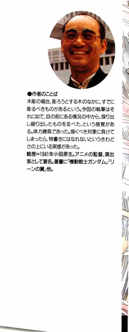

| [富野由悠季] オーラバトラー戦記09 | |
| 富野由悠季 | |
| (2015) | |
|
オーラバトラー戦記９ オーラ壊乱
富野由悠季
|

オーラバトラー戦記９ 目次
序
１ 夢のなかで
２ 捕らわれの身
３ カットグラⅢ
４ ドウンドロの誘い
５ ショットの館
６ 自尊心
７ 閲 兵
８ 軍の喧噪
９ 望楼の布団
10 結界のなかのフォイゾン
11 幼い目
12 巡航速度
13 ジャコバの剣
14 カラカラの緒戦
15 聖戦士たる者
16 名を賭ける
17 オーラの船
18 ルーザの影
19 女王の立場
20 ジョクの団欒
21 ソトロウ泣く
22 ザナド艦隊
23 呼応せず
24 スィーウィドーが醸成するもの
序
バイストン・ウェルを覚えている者は、幸せである。
この地上世界に生まれ出てくる赤児たちは、母親の胎内で人の形になっていきながら、母親をとおして地上世界の事々を感知し学習する。
その母親のいる世界が、この物語でいう地上世界ならば、子宮こそバイストン・ウェルに相当する。
しかし、そこは、外界を感じるにはあまりにも奥深く、また母親という媒体は感情に支配され、物の見方、考え方が流動的であるために、胎児は正確に外界を理解することはできない。
それでも、胎児たちは、その皮膚感覚と聴覚によって、外界にあるものが、安全なものであるのかそうでないのか識別できる能力をもって、生まれ出てくるのである。
その上、胎児たちは、外界の空気を肺腑いっぱいにして産声を上げるまでは、もうひとつの記憶を持っているのだが、不幸にして、産声を上げた瞬間に忘れてしまう。
それは、魂が固有にもっていた記憶である。
胎児は、この世界でもっとも安全なクッションである母親の体温と皮膚と内臓、さらには羊水という決定的なバリアーのなかで、魂を抱くようにして肉体を形づくっていく。
これほどの庇護が必要なのも、魂が傷つきやすく、感受性に富んでいるからである。
魂は子宮において、ひとつの肉体と合流して、新しい生命を獲得するのである。
その魂の源は、原初にあっては、空漠たる宇宙のなかで、浮遊しつつ生成せざるを得なかったが、生命を重ねるうちに、肉体を受け継ぐ遺伝子が、再生のための手法を生み出したように、魂も再生のメカニズムを構築していった。
それがバイストン・ウェルという『場』の完成であった。
空からの再生には、数億の刻を要する。
それでは、魂といえども苛酷である。
それ故に、魂たちはお互いに認識しあい、共振しあって、その再生のメカニズムを容易にする方法として、肉体から離れた魂が、空に帰る前に逗留する次元を設定したのである。
それがバイストン・ウェル。
肉体を離れた魂たちは、空に帰る寸前にバイストン・ウェルに逃避して、そこで、魂そのものの再生のための安息の刻を過ごすのである。そして、次に生まれ出るための肉体の出現を待って、その肉体と合流する。
母親は、子宮を持つことによって世界を所有する。
バイストン・ウェルは、それら固有でありながらも微小な母親たちの世界と連携して、次の肉体が宿った瞬間に、魂を送り込むのである。
魂は、肉体の核......。
そして、バイストン・ウェル世界と母親たちの世界をつなぐものが、生体力。オーラ力。
オーラ・エナジー。
その波動が、無数といえる世界をつなぐ。
この生命の波動があるからこそ、魂を宿した肉体は、溌剌とした様相を呈し、生き生きとした生命体の在り様をしめすことができるのである。
そして、わたしたち人は、その一員であるからこそ、生命を生き生きと映し出してくれている他者を愛する。
しかし、その魂たちも、肉体が現れなければ、世に出ることはない。
魂が魂そのものである限り、空のなかに存在するものでしかない。
光に似て、過ぎ行くものでしかないのだ。
なんと空しい存在であることか。
それが魂。
肉体を得てはじめて、魂たちは、その存在を固有な形として示すことができる。
魂そのものは、存在として固有のものではないからこそ、その再生のための足掛りになる世界を必要としたのである。
それが、バイストン・ウェルの世界。
しかし、肉体を支えるものとしてその現れる場を与えられた魂は、固有の存在を堅持することをやめない。それが、時には、我といわれる偏った現れ方をしようとも、それは厳として、その魂の在り様なのである。
そのために、ときに肉体は、魂を不要なものとして、拒否することもある。
しかし、魂を拒否した肉体は、実は、肉体としての固有の存在さえも主張することはできない。
肉体だけでは、どのような次元であっても、生きるもの、という即物的な意味しかない存在なのだ。
であるから、魂たちは、たえず再生し、物象的に確立された固有の存在の場を得るまで、飽きることなく輪廻を繰り返すのである。
そのための手段として、魂たちは、バイストン・ウェルを構築した。
しかし、もともと魂たちは、肉体という存在があってこそ地上世界に生成し、自己を表現し得るのである。
胎児にとっては母親の立つ『場』が地上世界であり、胎内がバイストン・ウェルである。
母親の立つ『場』が危機的情況になったとき、母親たちが彼女たちの独善的な判断だけでなく、胎児の存在を念頭に置いた身の処し方をしてくれれば、胎児の安全も確保できる。
我々が住む現在。
その地上世界は、我々生命あるものにとって逼塞した状況を招来して、久しい。
この状態があと少しつづけば、我々を含めた生物は、どこに行ったら良いのだろうか。
魂たちは、この地上世界の危機を座視することができなくなり、バイストン・ウェルの世界の存在を地上人に報しめることによって、地上人の認識を刺激し、地上世界の在り様を『よきように』維持し、再構築することを求め出したのである。
これが、オーラバトラー戦記の背景である。
バイストン・ウェルを覚えている者は幸せである、というのは、その原初的な記憶を生まれ出ても持っているからである。つまり、人の在り様のモチーフを忘れないでいるから、そのような人は、死を目前にしても、死を恐れない心を有していられるであろう。
それは、生きる上で幸せなことなのだ。
死を恐れぬ心をもって、己れの死を迎えられるからである。
それは、生命を与えられた我々の、最小で最大の課題なのだ。
その心を得るために、どうするか......？
答は、ひとつ。
地上世界で与えられた生命を十分に使うこと。
魂たちは、そのことだけを地上人に語りたいのだが、人は、あまりにも知恵を過信した生き方をし、それを駆使して、生命の源たる大地と海と空を破壊する。
魂の声を聞くことはなくなっているのだ。
しかし、それでいて人の知恵は、魂、魂と語る。
それが言葉遊びでしかなかったり、欺瞞に満ちたものであっても、魂と愛を語ることで、現世のある一瞬の自己安息を求め、納得という形で知恵の部分の了解を得て良しとし、深くは追求しない。
それが世界の理解だろうか？
人の生命の在り様だろうか？
そうではあるまい。
その単純な自問自答から、オーラバトラー戦記にこと寄せて、バイストン・ウェルのことを語ることも許されるであろうと作者は判断したのである。
刻は飛ぶことはない。
連綿としてつづくのである。そして、魂もそれにそう......。
１ 夢のなかで
さえずる鳥の声が、あまりにはっきりとしているので、エレ・ハンムはそれを探すのだが、鳥たちの姿は木々の葉に隠れて見えない。
そのエレを笑うように、小鳥たちは鳴き、左右に飛びかう。
それも一種類ではない。
チッチチ。クオッ、ククク......。
ルルル、ピーピーピルルル......。
さわがしいという形容がぴったりなのだ。
木々が風をさえぎり、暑くもなく寒くもない。
そう感じたのは、実は足元にカッとした硬質の熱さが湧き出てからだった。
対比するものがないと、人は心地好い状態を当り前と思って特に意識することはない。エレは、そう理解したが、その間にも、地面の熱は、エレを焼くかのように高温になっていった。
走った。
上半身にあたる空気は、まだ普通だった。頭と顔に感じる空気は冷たかった。エレの冴えた聴覚と嗅覚は、森がかもしだしていた生物の腐臭が急速に消えていき、何やら虚無的な雰囲気にかわっていくのを感じていた。
『お母様！ 父様！』
エレは絶叫した。
しかし、すぐに父のピネガン・ハンムはもうこの世にはいないという無力感に捕われ絶望した。その気が抜けた状態が、エレをつまずかせた。
足がなにかにとられたのではなく、地面から湧き出る熱気の層に足がすくわれたのだ。
『あぅー!!』
倒れこむエレの視野一杯に、焼けた地面が迫った。柔らかい溶岩そのものといった灼熱の色だった。
その照り返しがカッと顔面を襲い、エレの全身が照り映えた。
エレの身体は、地面から数センチ上に浮いた。
『ああ......!!』
エレは恐怖しながらも、両親に助けを求めるのはやめようと思った。
そう決心すると、周囲を見渡す余裕が生まれた。
ボウッ！ ボウゥン！
溶岩の流れのなかに立っていた青々とした木々が、一気に炎に包まれ、乾燥した藁か竹の葉のように燃え尽きていった。
フワッ！
エレの身体全体が、熱気に煽られて上昇した。
これは夢だ。
夢なのだ、と分っている。
いくつもの山を越えて、歩きに歩いたのは、昨日までのことであった。
父のピネガン・ハンムがオーラ・シップで出撃した日に、防空壕に隠れて、父の艦隊がアの国の艦隊に壊滅させられたらしいと知ったその日の夕刻から、逃亡のための山歩きが始まった。
母のパットフットと従者一人。
それに、もともと敵であったアの国の王ドレイク・ルフトの娘であるアリサ・ルフトと義理の娘リムル・ルフトが同道した。
子供のエレにとっては、その年上の二人の娘が同道することは、不思議でも嫌でもなかった。なぜなら、アリサもリムルも、エレの感性を苛立たせるものはなにも持っていなかったからだ。
リムルとはあまり口をきいてはいない。
しかし、姉らしい気配りをみせる娘らしい気持ちが伝わってきて、そばに居てくれるだけで良いと思った。
アリサの一所懸命に気さくに振舞っている健気さにも、エレは好感をもっていた。大人になったらアリサのようでありたい、あのように気を遣える女性になりたいものだと思った。
あまりにも大人びた理解であろう。
しかし、まだ九歳ではあるが、エレはそういう娘であった。
三日つづいた山歩きは、ひどく苦しいものだった。
彼女たちに従ってくれた兵は、食糧の調達やら寝場所を探すこと、道の偵察やらで、休む暇もなかった。
にもかかわらず、律義な彼は、何度となくエレをおぶってくれた。
彼の苦労がわかるから、エレは歯をくいしばって歩いた。
自分では、そうしていたつもりなのだ。
それでも、幾度か足をとめ、母の手に引きずられたり、しゃがみこんでしまうことがあった。
『いますぐに、大人になれないものか......！』
それは脆弱な子供の身体しかもっていない自分にたいする恨みにちかい思いだった。
三日目の昼下り。
先駆けしていた兵士が、ゲッソリとこけた頬に笑いを浮かべて、ラウの騎兵を案内してエレたちの前に戻ってきてくれた。
思ったほどの感動もなかったのは、疲れすぎていたからだろう。
騎兵に抱き上げられて鞍に跨ったときに、気力がなくなっていく自分が情けなかった。
目の前の馬ではアリサが手綱をもって、リムルを抱くようにしているのを見て、お姉さんたちは偉いと感じながら、エレは気絶した。
涼しい部屋に案内されたのも覚えていたし、粥を食べたのも覚えていた。
しかし、その後のことは、夢のなかで体験したことしか覚えていない。
＊ ＊ ＊
『大人の世界は、知識に支配されているのです。本当の心の思いにそった生活など、できなくなっているのが大人なのです』
アリサに似た人が、エレの正面に立ってそう言ったが、エレは、自分たちがどこに立っているのかわからなかった。
周囲はボンヤリとしていた。
暗くはないが、明るいというのでもなかった。
だからといって空間でもない。
立っている。
『どうしてです？』
そのアリサらしい人の足が見えないことに少しだけイライラしながら、エレは答えた。
『貧しい人は、暮しをたてるために、朝から夜まで働きづめですから、暮しのことしか考えません』
『はい......わたくしには想像できない、難しいことです』
『でも、姫様は、市井の人びとの暮しをご覧になったことはおありでしょう？』
今度はリムルに似た人が言った。が、アリサかも知れない。
『はい......貧しい暮しは、悲しいものです』
『わたしたちは、人びとの暮しを城から見下ろすだけですから、普通の人びとはわたしたちにとっては、別の世界の人びとです......けれど、聖戦士ジョクは、わたしにいろいろと地上世界のことを教えて下さいました』
『はい......』
エレは、語っているアリサらしい人の顔が、ジョクという聖戦士の顔に変っていくのを、当然のことのように凝視していた。
『......すべての人が同等の権利と義務を有するというのが、地上世界の通念です。けれど、ぼくには、それが正しい考え方で、理想だとは分っていても、その考えを社会全般にあてはめることが正しいことだとは思えなくなっているのです』
そう語るジョクの顔は、聖戦士の顔から、一般的な男性の顔に変って、大きくエレを包むようになった。
しかし、それは恐ろしいものには感じられず、エレは、ジョクの意識が語りかけることを聞いていた。
『難しい話でありましょう？』
その男性の声は、エレの理解を超える話であることを気遣って、思いやりのある言葉を投げかけてくれた。
『はい。でも、人の世は社会的に上下もありますし、それぞれに役割もあるのですから、同じだということが分りません......人が平等であると高らかに宣言した歴史の後に、また人の役割による違いを認めなくてはならない、というお話の順序は分ります』
『個性を認め、平等である。この言葉のなかにはすでに矛盾があるのに、その矛盾に目をつぶった通念が地上世界にはあるんです』
『ああ！ 古い家具の方が新しい家具よりも高く売れるということでありましょう!?』
エレは、ジョクに聞いた地上の話のひとつを思い出していた。
『......一等初めのお話ですけれど？』
『ああ......！』
エレは、一般的な男性の顔という印象のなかに、父ピネガンの印象も見つけたのだが、そのときは、その顔はアリサのものに変って、言葉を継いでいた。
『高い地位についた人が、その地位を守るためにどうするかと考えるのは、貧しい人びとがその日のためのパンをどのように手に入れようか、と考えるのと同じことなのです。そこには、それぞれが学んだ知識が使われます。赤児の心のままであることはありません』
『でも、知識は、生きていく上で、大切な財産です』
『どのように？』
そう問いかけたとき、アリサのイメージをもった映像は、グニャリと大きく変形して、ガロウ・ランの女王であれば、このようであろうというような醜悪な表情を見せた。
しかし、そのイメージは、一瞬だった。
一瞬それが、せせら笑っただけだった。
『だって......毒になる草、そうでないもの......お城の建て方、この衣裳の縫い方、みんな知恵の賜です。知識の宝庫がなければ、人の暮しは成り立ちません』
『そうだな。その知恵が知識に高められるという信仰が、人を誤らせるのだ......』
シュン！
その映像は、音をたてて消えた。
エレの身体がフワッと浮いたようだった。
エレは、ハッと息を呑んだ。
つづいて、いつもの夢と同じように、エレの身体は、急速に落下につぐ落下をしていた。
そのエレの視界には、ガロウ・ランの世界の奇怪なものたちが走り、かすめ、そして、フェラリオたちの清冽な光が走った。
すべてが、好ましいものではなく、厭らしく、激しいものに感じられた。
「キヤァァァァー」
エレは、自分の絶叫で目覚めた。
「............!?」
エレの瞳のなかに、母パットフットの顔があった。母の瞳がチラッと動いて、大丈夫ですよ、というように頷いてくれた。
自分は、狂ってはいない、大丈夫なのだ、とエレは理解した。
そのことをとても不思議なことのように感じて、エレは、母の顔を確かめずにはいられなくなって、手を毛布の中から引き出して、母の顔の方に差し出していった。
母の顔が、エレの指の動きを迎えるように傾き、エレの指先に頬のぬくもりを伝えてくれた。
「ここにおりますよ。大丈夫......怖いことはありませんから、お休み......それとも、冷たいものを飲みますか？」
パットフットの唇はいつものようにゆったりと動いて、エレに唯一の安息の場がここにあると教えてくれた。
「......お母さま......キスを下さい......」
エレは、すがるように弱々しく言った。恥かしかったが、エレは、心の奥でそういってもかまわないのだと感じていた。
自分自身の置かれている立場をはっきりと自覚する......。
そういう、認識行為を重ねて、自分はいつかはこの母から離れていくのだ、とエレは想像していた。
母、パットフットは、ただ微笑を浮べて、エレの頬といわず唇といわず、いっぱいにキスをしてくれた。
その肌の感触の快さに、これが最後であろうという予測に心が冷えるのを感じながらも、エレは満足しつつ眠りにはいっていった。
エレ・ハンム......。
次の世を垣間見ることを宿命として背負った少女の第二夜がはじまったのである。
もちろん、それは夢のない、身体にとってもっとも優しい眠りであった。
２ 捕われの身
「お休みになれたでしょうか？」
エレの寝室から出てきたパットフットを迎えたのは、アリサ・ルフトとリムル・ルフトである。
「驚かれたでしょう。あんな呻き声を出されると......」
かすかに恥じ入った様子をみせるパットフットに、二人の少女は、フッと目をあわせてから、
「......感受性のお強いエレ様が、どんなにお苦しみかと思いますと、胸がしめつけられるようで......」
アリサはリムルの思いも代弁して伝えようとしたが、言葉がつづかず、上げた腰をすぐに椅子に沈めてしまった。
リムルがアリサとパットフットのあいだに立つようになった。
パットフットはゆっくりと歩をすすめた。その歩調にあわせて、床に敷いた藁が絨毯の下でギシと鳴った。
冬の寒気がコモン界をおおう頃になると、石造りの城は暖気を逃がさないために、床一面に藁を敷いてその上に絨毯を敷く。が、敷いてまだ間がないために、人の動きになじまずに藁が鳴るのだ。
季節の変り目を感じさせる音である。
城という巨大な石の構造物は、このような細工をしないと、とうてい住むに耐えるものではない。
しかも、絨毯は高価で、どこにでも敷きつめられるものではない。そのために、タータラ城の公式に使われる所でも、まるで藁を貯蔵しているのではないかと見える部屋が、いくつもあった。
ラウの国の王城でそうなら、一般の住居はもっとひどかろうという想像は安易である。
むしろ、漆喰と木で造られた小さな住居の方が、寒気にたいして容易に対処できる構造をもっていた。
城は、外敵にたいする防備を第一として建設されたものであるからこそ、四季や気候の変化に、よく対応できないのである。
なまじ、このような場所を住まいにしなければならない王侯貴族たちの暮しの方が、一般の人びとより苛酷なのである。
少なくともラウの国王、フォイゾン・ゴウの娘であるパットフットと孫娘であるエレにとっては、逃げ隠れできる場所といえばこのタータラ城しかなかった。
だから、パットフットにとっては、藁が敷かれた絨毯の上を歩むということは、たんに季節の変り目の行事でしかなく、それはエレにとっても同じである。
しかし、ラウの国やパットフットの嫁ぎ先であったミの国とちがって、アリサやリムルの育ったアの国は、温暖な地方にあるために、二人にとってはこの藁の音は奇怪な音に聞えた。
貧しさを感じさせ、なによりも、遠い北の辺境の地に来たという精神的なプレッシャーになった。
孤立感である。
だから、二人の少女にとっては、エレの苦しそうな呻きは、自分たちの苦しさを代弁しているように聞えた。
ことに、地上人であり聖戦士である騎士ジョクに従ったアリサは、父ドレイク・ルフトを裏切って、敵国の王城にいるのである。
曖昧な戦況がつづくなか、捕われの身には見えない暮しをしていて良いのであろうか、と心がもまれるのである。
だから、今も、あとをリムルに任せたというよりは、自身の混乱のなかで、アリサは漠然と思いをめぐらせていたのである。
どうしたものか、と......。
カチャと陶器の冴えた音がした。パットフットが、お茶の支度を始めたのだ。
「あ、わたくしがやりましょう」
リムルの踏みしめる足音が、藁のきしりになった。
「任せて下さいな。これをお飲みになったら、お休み下さい」
「申し訳ございません」
アリサは、失礼を承知でパットフットのするに任せた。
立つのがおっくうなのだ。
そのアリサの瞳に、壁にしつらえたガス燈の光に輝く茶器の表面が、ひどく鮮やかに映った。
リムルが警戒するような目つきをして、アリサの隣りにすわり、テーブルに拡げてあった書籍を閉じた。ラウの地方に伝わる民話の本である。
「あの......」
アリサは、パットフットが盆を手にして、テーブルにお茶のセットを置くのを待ってから、
「......父に会うために、ラウの国を出ることはかないましょうか？」
あまりに一方的にパットフットの言うがままにしている自分たちに情けなくなって、アリサは、なにかを言わなければならないと感じて、口を開いた。
しかし、口をついて出たのは、曖昧な場つなぎの言葉ではなかった。
その言葉を口にしてみて、自分が迷っていたことはこのことであったのか、とアリサは納得していた。
「......会ってどうなさる？」
パットフットは手にしたカップをとめて、アリサに聞いた。が、すぐにフッと目を伏せながらカップを口にした。
「......父に戦争をやめさせませんと......」
「おっしゃるな。わかっております......けれど......。さあ、お飲みなさい。身体が暖まって、よく休めますよ」
「ありがとうございます」
アリサは、急いている気持ちを諭されて、カップを手にしながら自分の言った言葉の意味を反芻した。
砂糖もミルクもいれないお茶は、さっぱりとして悪いものではなかった。ほんのりとした暖かさに、アリサはパットフットが言おうとしていることのすべてが分ったし、それ以上に、自分がおかれている立場を承知した。
少なくとも、アの国王のドレイク・ルフトは、ミの国をアの国の北の前線基地化して、ラウを併呑しようとしている。その勢いは、すでにドレイク・ルフトの意思を離れた軍事行動として、アの国の総意になっていた。
勝ちにのっている国運を、王一人の意思で制止することはできないのは、アリサにも理解できるのである。
その上、この戦乱は、かつてコモン界が経験したことのない様相を呈して拡大しているという認識ももっていた。
それまでの戦争は、地上でいえば封建制度下の戦争そのものであって、王侯貴族や地方領主たちの覇権争いであった。
それは限定戦争で、戦争に参加するのは、騎士階級以上の軍人たちであった。もちろん、領民たちも動員されはしたが、国民すべてが動員されるという性質のものではなかった。
武器の威力も小さいために、全面戦争になることもなかった。
戦争は、戦場という限定された区域で行なわれるものであって、その外に出ることはなかったのである。
軍人たちが自身の役割を意識的に戦闘行為に限定していた上に、王侯や領主たちも一般人を戦争に巻きこむことを恐れていた。
領地を統治することは、民一般を安堵させることであった。そうしなければ、民に逃げられて、領地の運営はなりたたないのである。
それを力で支配したり、逃亡民を監視する機構もありはしたが、基本は民の安堵である。
そうしなければ、城ひとつ経営できないのが現実だったのである。
ガロウ・ランの跳梁といっても、それは、このコモンの世界の規範のなかで行なわれる小さな悪の行為でしかなかった。
それが、ギィ・グッガがガロウ・ランを束ねた頃から変りはじめた。
ことにアの国に現れたショット・ウェポンによるオーラ・マシーンの開発からはじまった機械化が、コモン界の戦争の通念をかえていった。
個々人の跳梁でしかなかったガロウ・ランが徒党を組むようになった。リーンの翼をつかう地上人が聖戦士として現れた頃にすでにその徴候はあったものの、ギィ・グッガの時代になると、彼はガロウ・ランの人心を掌握して、アの国の機械化部隊に拮抗しようとした。
そして、ギィ・グッガが、アの国のオーラ・マシーン部隊に敗れた頃から、アの国は急速なオーラ・マシーンの増強に走った。
そして、国民皆兵である。
機械を運用するための兵力が必要になったのだ。
そのことは教育機構の変革にまでおよんで、義務教育が確立され、一般の人びとへの啓蒙策が強行されていった。その急速な整備は、国力の疲弊を呼ぶと同時に、次世代の国力を育成した。
機械化が周辺国家によって模倣され、アの国はますます、この強硬方針を維持するしかなくなった。やめれば、アの国の存立が危ういものになるのである。
国の運営は、ドレイク一人の意思ではどうにもならないところまで来ていたのである。国を運営するためには、拡大策しかなくなったのである。
ショット・ウェポンが画策して、コモン界をこのような方向にもっていった節はある。だからといって、ショットにしても世界そのものを混乱させることを意思したのではなかった。
が、発想は個人的なものでも、影響は多大であった。
アリサの立場は、ラウのタータラ城にいるという事実で、すでにひとつの意味をもってはいたが、アリサがドレイクに会って戦争回避を嘆願したところで、事態は変化するものではないのだ。
それは、パットフットが父王フォイゾンに、夫のピネガン・ハンムのために、ミの国に力を貸してくれと嘆願しても、どうにもならなかったのと同じである。だから、パットフットは、アリサの気持ちは分っても、フォイゾンがアリサの気持ちをいれるということはないと承知していた。
確固とした状況把握力と戦略をもつのがフォイゾン・ゴウという王なのである。
「父には、アリサ様のお気持ちを伝えておきましょう。けれど......」
パットフットは、お茶がすむとそう言った。
「ありがとうございます。よろしいのです。自分でできること、できないことは承知いたしております」
アリサはカップをテープルに戻し、リムルがカップを置いたのをみてから、
「片付けはさせて下さいませ」
と立った。
「すみません」
パットフットが任せてくれたので、アリサはテーブルのカップを盆にのせて、部屋の隅のテーブルに片付けてから、侍従を呼ぶためのベルを鳴らした。
リムルは、テーブルの本を小脇にし、ドアを開いた。
「では、お休みなさいませ」
二人の少女が、見送りに立ったパットフットに礼をすると、暗い廊下に立っていた兵が、ガチャリと剣を鳴らした。
周囲で警護に立つ仲間に、少女たちの動きがあることを報せたのである。
所々の柱に掲げられたガス燈の光が、ひんやりとした空気を満たした廊下を浮き立たせていた。
アリサとリムルは、二人の兵士を従えて、自分たちに与えられた部屋まで、藁を踏みしめて歩いた。
その音は物悲しく、それでいてザワザワとした不安定な気持ちを代弁するように、いつまでも少女たちを追った。
３ カットグラⅢ
それは、遠くから見れば、上下に浮き沈みしながら飛んでいる、黒い風船のように見えたが、その周辺を飛びかう数機のオーラバトラーとの関係で見れば、風船ではない。
もっと違うし、巨大だ。直径は二、三百メートルはあろう。
黒っぼく見えるそれは、雲のようなもので形成された球体、という表現があたっている。
天頂からのオーラの光を受けながらも、光を反射するように見えず、周囲に普通の雲の群をしたがえ、それを分けるようにして流れていた。しかも、全体に上下にバウンドしながら......。
その球体の表面を形成する雲は、ゆったりと渦を巻くように流れているのが分った。クスタンガの丘を守る嵐の壁とは、明らかにちがう様相をもつものである。
それをかすめるように飛行するオーラバトラーは、四機。
一機を三機のオーラバトラーが攻撃しているのだ。
その三機は、アの国のドレイク軍の正規軍のなかでも、もっとも数が多いハインガットで、それに対するのは、フォイゾンのラウの国が制式採用しているドウミーロックに似ているが、少しちがう。
その機体は、バウンドしながら浮遊する黒い球体に突進しては、パッと左右のどちらかに回避運動をした。
それを狙うハインガットのフレイ・ボンムが灼熱の筋をつくって、球体を構成する雲に吸いこまれていくと、そこに稲妻が発生した。
ドウーンッ......ゴゴゴッ......
時に、その稲妻が球体の外にむかって、長大なスパークの筋目をみせた。
もちろん、球体の周囲に渦巻く雲も、スパークの筋に随伴するように膨れ上がった。
ドウミーロックに似た機体は、数度目の突進を球体にかけた。
「駄目だぁー！ ドウンドロには近づいちゃいけないんだよー！」
その機体のコックピットで、甲高い女の子の悲鳴があがった。
「気が散る！ 静かにしろっ！」
叫んだのは、ジョクこと城毅。
彼のシートのヘッドレストの上には、人形を座らせるようにしつらえられたシートがあって、そこで羽根を持ったミ・フェラリオ、身長が三十センチほどの金髪の少女が、身体を捩るようにして絶叫していた。
「......監視をしろっ！」
ジョクがそう言ったとき、一瞬、視界はすべて殺されていて、コックピットの周囲の窓には稲妻の閃光が舞った。
「ヒャーッ！ 駄目よ！ 駄目ーっ！」
革鎧に身をかためたチャム・ファウは、自分のシートの上で頭をかかえて、上体を膝の上に折るようにした。
彼女のシートは、ジョクの死角をおぎなうために背後にむけられていた。その前には、潜望鏡に似た覗き窓があって、ジョク機の背後の上下面の視界をカバーしていた。
テレビ・モニターではない。光学器によるモニター眼でしかない。
チャムは、その監視員という任務を背負わされているのだ。
機体が激震しても、ジョクの挙動には狼狽は見られなかった。コンソール・パネルの計器のデータを読み取りながら、周囲に迫る敵機を感知して、どうすべきかを知っている風だ。
ビガウン！
稲妻とは違った轟音と閃光が、一瞬間だけ左後方に起った。
「クッ！ 一機が雷で撃破されたはずだ！ 確認っ！」
ジョクは、チャムに叱るように言いながら、機体を反転させた。
周囲が明るくなった。
「......そこか!?」
青空と眼下の雲が走る光景にかわる。
屹立する雲の間に、残った敵を同時にとらえた。
ジョクの特殊能力である。
八方眼。
視界すべての対象を同時にとらえるというのが、パイロットとしての必須条件であるが、オーラバトラーのコックピットは視界が限られていた。
だから、機体前面をたえず左右上下に揺するようにして、視界を確保するという技術が要求された。
ジョクには、それができた。
シャーッ！
敵機が発射したフレイ・ボンムの音だ。
それをよけながら、ジョクは機体の左腕に装備されているフレイ・ランチャーを発射しようとした。
よけた勢いで発射するのではない。敵機との間合いを詰め、敵機の胴体と腰の部分に勘で照準をとった上で発射するのである。
ドフッ！
フレイ・ランチャーが発射したフレイ・ボンムは、敵機に激突して一瞬、バッと炎に似た光の輪を空に咲かせた。
次には、その機体の腰の関節部分が折れるか、灼熱した閃光がスパークになって尾をひく。それが撃墜の証拠だった。
が、その時は、ジョクは自機を反転させながら高度を取って、右方からのフレイ・ボンムの攻撃を回避し、その敵機の背後につけているのである。
「クッ！」
気合を声にしないで、息として吐き出す。フレイ・ボンムが数条の筋になって、その敵機に伸びた。四本のうち三本が地上にむかって消失したが、一本が敵機のオーラ・ノズルに激突して、炎が散るのに似た閃光を発する。
ゴウッ！
黒と炎の色が輪になって爆発して、胴体部が地上にむかって四散しながら数条の煙の筋を伸ばしていった。
「左上ぇ！ 剣っ！」
チャム・ファウが叫んだ。気を取り直してくれた。
「ンッ!?」
ジョクの左右の腕と足は、まるで空手でもやっているのではないかという風に動いた。操縦レバーとペダルが、機体操作をするワイヤーと直結しているためにそうなるのだが、もちろん、そのワイヤーは単純なものではなく、強獣の神経索を利用したもので、パイロットの運動量を十倍以上にして機体に伝えることができた。
この運動伝達倍数と反応速度が、機体の性能にかかわるのだが、それだけで機体の性能が決定されるのではない。
パイロットの生体反応の強弱そのものが、全体性能を顕著に左右する傾向があった。
それ故に、この人型の機械は、オーラバトラーという名称で語られるのである。
バイストン・ウェルがオーラによって形成された世界であるために、人の生体エネルギーの強弱が反応速度に現れるのであろうが、ジョクは地上人である。
バイストン・ウェルのコモン界では、異次元人種。
それ故に、コモン界の人びとより強力な生体エネルギーを持つ結果になって、コモン界では、彼をして聖戦士たらしめていると理解されていた。
つまり、地上世界は、バイストン・ウェル以上に、オーラが充満した世界になっているのであろう。
その力を身に帯びた青年が、ジョクであった。
そのことは、ジョク、城毅が地上世界に帰還したときに、オーラバトラーの能力が拡大して感じられたことで証明されていた。
我々の住む地上世界は、近代の爆発的な人口増加によって、その世界の様相が変化したのであろう。オーラ界という別の要素が付加した界になっていたのである。
ジョクは、そう判断した。
フレイ・ランチャーのフレイ・ボンムは、火炎放射器の炎に似ているが、その炎は、高温で高速である。射程距離も火炎放射器にくらべて段違いの兵器であった。直撃を受ければ、オーラバトラーの装甲は、強化されているとはいってももともと強獣の甲羅であるために、ひとたまりもなかった。
コモン界で使う場合は、一機のオーラバトラーを撃破する程度の能力しか示さないが、地上で使った場合、ナパーム弾そのものといった破壊力を示した。
地上界では、コモン界で使うよりも数十倍の破壊力を見せる現象からも、オーラバトラーは、その名称のとおり、機械という概念とはちがう性格をもっていた。
それは、世界の象徴。世界が作らせたものかもしれないという推論が成り立つのである。
ジョクは、チャム・ファウの教えてくれた方向に自機をむけざま、右手に持たせていた剣を振るった。
ワーラー・カーレーンで、ジャコバ・アオンから戴いた剣である。
ガウッ！
その剣は、敵機のオーラバトラーの腰を下から斬り上げるようにした。
装甲が切断され、その下にある機体を構成するマッスルの束も挟った。致命傷ではない。
が、敵機は前につんのめるようになった。
「フッグッ！」
ジョクが息を吐くのと声を発するのが、いっしょになった。
つんのめった敵機が、左手に装備したフレイ・ランチャーをジョク機にむけようとするところを、ジョク機の足の爪が蹴飛ばしていた。
敵機のフレイ・ランチャーは空に飛び、ランチャーの発射管に内蔵されている火薬が爆発し、その爆発が呼び水になったのであろう。黒い雲の塊と爆発する敵機との間に、一本の稲妻が走った。
ドルルル......！
戦闘能力のなくなった敵機は、戦闘空域から離脱するために、黒い球体の下に飛びこむようにして、山間部に降下していった。
そうなれば、ジョク機は追う必要はなかった。
高度を取った。
「......ドウンドロだとみんなが言っていたが、なんなんだ？」
ジョクはようやく息をついて、チャムにきいた。
カットグラの左腕に装備されているロケット弾を一発も使わずにすんだこともジョクを安心させた。
「周囲に敵影なし」
チャムは報告口調で言ってから、
「......そうだ。思い出した。モアイが言っていた。怖いんだよ。痺れちゃう空気のボールだ」
「それは分ったが、ガロウ・ランの気の塊というのは本当か？」
ジョクは、その雲の球体を正面にして、確かにそれが上下に浮き沈みしながら、一定の方向に移動しているのを見て、ニー・ギブンの説明を思い返していた。
地の底に棲むといわれるガロウ・ランたちが棲む、ボッブ・レスと呼ばれる界がある。ワーラー・カーレーンがある界ウォ・ランドンに対応する下層界である。
そのもっともコモン界にちかい界に、トゥムと呼ばれる界があって、そこにガロウ・ランたち、地に逼塞するものの悪気が噴出する場所が出現することがあるという。
固定した存在ではない。
コモン人が生息しない曠野や山岳部に現れるといわれ、そこからガロウ・ランたちがコモン界に輩出し、さらに、このドウンドロのような雲状の球体をボッブ・レスの気の塊として排出することもあるというのである。
その球体に入った者はいないが、時に町ひとつが壊滅させられる嵐があると、それがドウンドロによるものだという噂がたつこともあった。
しかし、歴史的には、ドウンドロのしわざで壊滅したと確定された町や村はないとも伝えられていた。
『つまりは、何もわかっちゃいないということだ』
ジョクは、この黒雲が最前線で観測されたときに、その流れる方位が気になって、ミィゼナー近くの整備工場から発進してきたのだ。
対峙するドレイク軍が、ドウンドロの動きに隠れて、接近してくる可能性があったし、その〝界の破れ〟ともいうべきトゥムなるものを観測できるかもしれないと思ったからだった。
しかし、ジョクたちが展開しているラウの国の南寄りのカラカラの山岳のどこにも、そのような〝落し穴〟などは見つけることができず、ジョクは、ドレイク軍の六機の敵機と接触したのである。
ジョクが直接手を下して撃墜したのは今の三機で、のこりの三機は、ドウンドロと接触させることで撃破できたのである。
「薄くなっていくように見えない？」
チャムが革兜を脱いで、金髪を振りながらいった。
「ああ......トゥムを見つけられなかった......」
「恐ろしいこと言わないでよ。そんなの、聞くだけでも厭だ」
チャムは自分のシートの上に立って、クチャクチャになった羽根を拡げて、それを両手で後ろに伸ばすようにしてから、数回、羽根をふるわせると、その透明な、トンボが持っているようなチャムの羽根は、ピンと張って四枚のキチンとしたものになった。
「よしよし......！」
チャムは自分の羽根の状態に満足するとブーンと羽根を震わせて、フワッとジョクの前に舞い下りて来た。
「なんだ？」
「背中、みてくれない？ 汗っぽい」
ジョクは周囲を警戒するため、機体をゆっくりと回転させながら、チラッとチャムの背中をみて、
「ベッタリだな。汗で革鎧の色がかわっている」
「触ってみてよ」
「うるさいね」
ジョクは手袋を外して、チャムの震えている羽根の付け根から首筋までなぞってやった。
「くすぐったいっ！」
「じっとしてないと分らないじゃないか」
指先に湿っぽさが感じられる。
「汗でびっしょりだ。お尻は分るな？ 羽根の間には汗がない......」
「フン......そうか......」
チャムは、納得するとパタパタと自分のシートに上っていった。
ジョクは、こんな風にチャムの背中を触るのははじめてだった。羽根の付け根部分は、羽根のための割れ目ができているものの、肌が剥き出しになっているわけではないので、肉が盛り上がったようになっている気持ちが悪い部分は見えなかった。
「チャムの革鎧の革は、薄くなめしたものを使っているんだし、そんなに暑いわけはないんだよ。神経質なんだな？」
「そりゃ、普通の神経は持っているわ。見ないでね？」
「なにしているんだ？」
「はだけて、汗を拭いてるの」
生意気なことを言う。
「......ああ......後続の連中がトゥムを見つけているかもしれないな......」
「それは言わないのっ！」
声と同時に、ゴン！ とジョクの後頭部にチャムの足蹴りがきた。
「こいつ！」
手で払うようにして、ジョクは振り向いた。
「見るなっ！」
シュッ！ チャムの足蹴りがジョクの顔に迫っていたが、ジョクはこういうことには、すでに十分に慣れていた。ヒョイと避ける。
その前を上半身を裸にしたチャムが飛んでいって、正面の透明なフロント・ハッチにぶつかる寸前に身をひるがえすと頭上に舞い上っていた。
「ハハハッ！ 見ちゃった。そんな恰好でそんなことをやれば、そうなるだろう？」
ジョクはわざと茶化すようにいって、気を奮い立たせようとした。いましがたの戦闘が気に入らないのだ。
戦果だけをとれば、聖戦士ともて囃されるのに十分であったが、ジョクにとっては、この新型のカットグラがまだ自分に馴染んでいないと実感せざるを得ない結果だったからだ。
『疲れている......』
その感覚こそ、オーラバトラーのパイロットにとっては、面倒な問題なのである。
自身の気力が明確に機体の性能になって現れてしまうからだ。
この新型のカットグラは、ラウの国がアの国からカットグラの原型機のノウハウを買って独自に建造した機体、ドウミーロックをベースにして、ジョクが昨日まで使っていたカットグラの使える部分を流用して形を整えたものであった。
殊に前のカットグラのオーラ・ターボは、ドウミーロックのオーラ・ノズルとの相性が良く、物性的にも前のカットグラにくらべて数倍も強力なものになった。
それは、ただちに図面にしてラウの中央軍事廠に送られた。
他にも前のカットグラで使われていたオーラ・バッテリーの構造が解明されて、その図面も中央に送られ、そのバッテリーは、この機体にも装備された。
その結果、この機体はドウミーロックとは似て非なるものになった。
さらに、ジョクは、機体の頭部を前のカットグラのものとすげ替えさせたから、外見は、カットグラそのものといってよかった。
『ドレイク軍は、カットグラという名称はすでに使っていない。だったら、この機体の名称は、カットグラのままにする』
ジョクの希望はラウの国のフォイゾン軍に受け入れられて、カットグラⅢとして制式採用されることになった。
そのために、この後に、コモン人の習性が発揮されて、ジョク機は、よりカットグラらしいシルエットにするために、テール・ノズルの外形が修正されたり、爪の形や肩の形がカットグラらしく整形されたりした。
ジョクは、それには反対した。
補給部品がドウミーロックのものであれば、互換性があるのに、あまりにカットグラらしさを追求すると、その互換性が損われる危険性があったからだ。
しかし、視覚的な印象を大切にするコモン人たちは、部品の補給は保証すると主張して、改修作業を数日も使わずにやってしまったのである。
しかも、前のカットグラの機体も稼動できるようにしておき、専門のチームを組んで新しいジョク機の整備を続行していくという手当てまでしてくれたのである。
ラウの国という、オーラ・マシーンについての新興国家の技術者たちは、その改善に全身全霊を投入することに喜びさえ感じているのである。
彼等を見ていると、ジョクは、このコモン界はオーラ・マシーンという機械に汚染されているのではないかという考えを、うすら寒い思いで肯定せざるを得なかった。
『しかし、俺たちの世界でも、エレクトロニクスに頼った生活を否定できないのと同じように、これも否定できない......これこそ進歩だと信じられてしまっている......』
その思いは、現代人としては辛いものだった。
４ ドウンドロの誘い
ドウンドロの影は、周囲に浮かぶ普通の雲に近い色になって、雑音だけを発していた無線機から、後続機の呼びかける声が受信できるようになった。
「トゥムなど見えない！......聖戦士はどこか！」
「ドゥンドロの東の戦闘の光は確認している」
「ジョク機、変針する。集結しつつ、周囲の索敵は怠るなっ！」
ジョクは、呼びかけた。
『俺にはもっと厳しさが必要だ。戦闘の詰めが甘いように感じる』
ジョクは新型の機体との相性の問題だけでなく、戦法そのものにも不満を感じていた。
ことにこれからのアの国のドレイク軍との交戦のことを考えると、敵する数は数十倍であろう。
鋭い戦法を編みださなければ、生き延びられないのだ。
が、戦争というものは、ひとつのことを学んでから次の戦場に出る、という余裕を与えてはくれない。
「敵影！ 真上だ」
汗を気にしていたチャム・ファウが、ジョクよりも先に敵影を発見したのだ。誉めるしかなかった。
「どこだ!?」
「ドウンドロの上だ！」
立って革鎧をたくし上げながら、正面を見ていたチャムが、慌ててシートにすわる。
「すまない。油断していた」
ジョクは、ドウンドロを形成する雲がかなり薄くなっているものの、まだ、渦巻きを視認できるのを確認し、そのうごめく雲の上にゴマのような影を見つけていた。
ドウンドロが降下したために、見えたのだ。
「六機編隊をドウンドロの上空数百メートルに発見！高度取って、迎撃！」
ジョクは無線に怒鳴った。そして、敵機は、ジョクの戦闘にたいする迷いを知って、とりあえず攻めて来たのではないかと疑った。
そういうタイミングなのだ。
『カラテに先手なし......が、守りにはいったら手足を矛と槍にする』
つまり、一度、格闘戦になったら一点に集中して敵を撃破しなければならないのだ。その精神をジョクは長いあいだ忘れていたような気がした。
「しかし......それだけじゃない」
ジョクは、ドウンドロの雲の上に展開する敵機の影が左右に開いていくのを見上げながら、中学時代に少しばかり習っていたカラテのことを思い出していた。
『カラテとは人に打たれず人打たず事なきを基とするなり』
「精神論なのだが......これを達成するためには、鍛えるしかないということだ」
いつも一言多いジョクのカラテの教師が言っていたことであった。
「フッ......！」
意識して、カラテで教えられた呼吸法で息をついた。
「チャム、機種はわかるか？」
ジョクは、チャムが潜遠鏡に似た覗き窓のひとつを使えるように自機の姿勢をとりながら聞いた。
「ハインガットじゃない。ガベットゲンガーか？」
嫌な答が返ってきた。
「やっぱりな」
戦闘行為とは、こういうものなのだ。ハインガットや、ドーメとかドメーロであれば、今の戦闘展開でなんとか対処のしようがあった。
が、ドウンドロの影は薄くなって、それを楯に使えるようには見えなかったし、なによりも、後続機よりは、前方の敵機の編隊の方が距離がちかい。
『ドウンドロは、ドレイク軍にとって面倒な方位に移動しているのか......』
余分なことを考えてしまう。バイストン・ウェルに降りてからのジョクの習性になっていることだ。が、これでは、鋭利な戦闘はできない。
それがカラテ道の教える戦闘者の心構えである。
集中と戦闘の回避。そして、戦いに巻き込まれたならば、一撃で撃破しなければならない。そうしなければ、やられるのである。
しかし、オーラバトラーに精力を吸い取られたような疲れが、身体の芯にのこっているのだ。
「チャム、降りろ」
「え？ なに？」
「今度の戦闘は今までみたいにはいかないだろう。やられるぞ？」
「そのつもりでやるのか？」
「死ぬつもりはないが、そうなりそうだ」
ジョクは、機体の高度を上げていきながら、いった。
「勘が働くのか？」
チャムはまぜっかえしもしないでストレートに聞いてきた。
「気がする......が、負けたくはない」
「そうか。そうなら、いい」
チャムは、まるで指揮官のような言葉遣いをした。ミィゼナーで聞いた、ニー・ギブンなどの口調を真似ているのだろうが、ジョクには、ジャコバ・アオンが、チャムの口を使って言っているような感じられた。
「クッ！」
敵の編隊は、浮上するドウンドロを楯にするようにして、その左右に分れたようだった。
ジョクとしては彼等より一センチでも高度を上げたかったが、影が薄くなったドウンドロの上下運動は早くなっているように思えた。高度的に優位に立つことはできない、とジョクは感じた。
「............!?」
カラテに先手なし。
無理して優位に立とうと焦る必要はないと、ジョクは必死で自分に言いきかせた。
乾呻一榔を期す。
そう覚悟した。丹田に力をこめるというよりも、気力をそこに押しこめながら、身体を浮遊させていく。
意識だけはドウンドロより高い位置にもっていくのだ。
ドウンドロの薄くなりかけた球体は、まだしっかりとした外形を保っているように見えた。
「......なんでも利用してやる」
そう口にした。
「............!!」
頭上でチャムの意識が弾けるのが感じられた。
チャムも神経を硬直させているのが分った。
「来るぞ！」
「はい」
フッと正面のドウンドロの球体が退りはじめると、その間合いを見計らった六機のガベットゲンガーの編隊が左右の上方十六、七度の角度から加速してくるのが見えた。
「............!!」
ジョクはカットグラの右手に持たせている剣を正面に立てるようにし、その陰からフレイ・ランチャーを斉射できるようにして、加速した。
バウッ！ シャッ！ シャーン！
敵のフレイ・ボンムの狙いは正確だった。それに応えるには加速しかなかった。
「ヌッ！」
ズオッ！
「ウーッ！」
ジョクは、頭上にチャムの呻き声をききながら、フレイ・ボンムの筋がつくる壁を真直ぐに突進していった。
バフンッ！
機体の左右にフレイ・ボンムの閃光が横に走ってみえた。カットグラの加速は思った以上に早いのだ。
「チッ！」
かなり強力な感応が、前方空域から横に走る。
敵のパイロットの戦闘意識を感知したのだと分る。
フレイ・ランチャーを装備した左腕を加速による風圧を利用して流すだけにして、横に連射していった。
背後で閃光の花が開いたようだった。
しかし、ガベットゲンガーは、ハインガットよりは数倍強力な機体である。お互いに最大戦速で交差すれば、その離脱速度も早い。なによりも、ガベットゲンガーの機動性能はいいのだ。すでに、カットグラの背後で次の攻撃のために追尾する行動に移っているだろう。
「来るっ！ 左っ！」
呻くようなチャムの声がした。人形のようなチャムが、今の加速にも耐えたのだ。ジョクは、チャムの言葉を信じて、カットグラの左腕が後方に流れたままになっているのを幸いに、またもフレイ・ボンムを連射していた。
が、
「こっちからかっ!?」
六機ものガベットゲンガーで攻撃すれば、かなり自在なものになるし、ハインガットのパイロットよりは腕も上であろう。
すべてがバーンほどのパイロットか騎士と見倣す必要があった。
シャワワワン！
フレイ・ボンムがシャワーになって壁を作るというのはこういうことであろう。左側全面に、稲妻がぶちあたったような閃光がきた。
視界がなくなった。
「クッ！」
直撃はなかったのだが、そのすさまじさに、ジョクは最大加速のまま降下姿勢にはいった。
ガルルル！
コックピット全体が鳴った。
「アウッ!?」
視界が真暗になったが、ジョクの視覚がそれを感知したのは、閃光による残像が消えてからだった。
闇の中に炙り出しのようにチラチラと細く鋭いジグザグを描く稲妻が見えた。
コックピットは、ゴッンゴッンと、多少振幅の多い振動にもみくちゃにされていった。その上、機体全体が回転している。
「......なんだ!?」
フレイ・ボンムの直撃を受けたときの振動ではない。
「............!?」
ズルリッと黒雲が渦になって見えた。黒煙のなかに入ったような印象が目を襲ったのだ。しかも、その黒煙のなかに、チラチラと稲妻が走る......。
『ドウンドロのなかなのか!?』
ジョクがそう自覚したとき、コックピットは、地の底から発するような呻きにも似た音響に包まれていた。
５ ショットの館
『ドゴゥン......ズゴゥン......！』
風雨が作り出す音響とはちがう。あたかも、生物の発する息吹きのように聞こえた。聞くものの生理に響くのだ。神経がささくれ立って苛立つ。その上、
ビガッ！
細くギラつく稲妻が視覚を打って不安を喚起するのだ。
『ドフゥーン......！』
「ウッグ！」
脈動にも似た音が前から聞こえた。機体は突き飛ばされるように後退した。
『ドグッ！』
今度は右からだ。機体は真横に走った。
「グウッ!!」
脈動は、物理的な力となってカットグラを打つのだ。
「クッ！」
ジョクは本能的に、カットグラをできるだけ小さくするために、その両腕を前にして、膝を抱えこむようにした。カットグラの羽根もオーラ・ノズルも、胴体に密着するようにした。
だが、その姿勢をとる間に、ジョクは全身をつつむ悪寒と、革鎧の下に汗の層ができるのを感じていた。手足の先に痺れがきた。
「フハーッ！」
激震のなかで気を入れて吐く。情況を正確に感知したいと思う。
「おうっ！ お、お、おぅっ......!!」
チャム・ファウの呻きを頭上に聞いた。どうなっているのか気にしても、振り仰ぐこともできない。
『......ズゴゥン......』
ガガガッ！ 機体が激震して落下し、跳ね上った。
『......クッ、杏耶子っ！』
名前が思い浮かぶだけで、言葉にはなっていなかった。
『アリサっ......！ 中臣さんっ、どうしたらいいんだっ』
呪文みたいに、それらの名前を心にならべてみた。すがるものがなければ、虚空に消えてしまいそうな恐怖を払うためだ。
『ばあちゃんっ！ ダンボはいないくせに、こういうのだけは現れるんだよっ！どうしたらいいんだっ！』
口を動かしたら、激震で舌を噛むだろう。
ジョクは、稲妻がきても目は閉じまいと決心した。カラテの稽古と同じで、突きがきても目を閉じず、次の攻撃を見なければならないというわけだ。
カラテの突きにくらべれば、天然現象などに気を動転させてなるものかと思う。
しかし、
『ドヴーフーッ......ズオウゥ......』
横に、上下に、カットグラは、ドウンドロの外には出ることはないかのように、たえず、黒雲のなかを跳ね飛んでいた。
外見は薄くなっていたのに、ドウンドロのなかは、真黒である。光を吸収する雲の渦なのである。
「フハーッ！」
気を入れて、全身の隅々の麻痺してゆく部分に気を送りこむようにするのだ。痺れに負けまいと指を必死に動かしながら、機体を安定させようと手足を動かすのだ。
「こんなことでっ！」
反動を相殺するためにテール・ノズルを使った。が、テール・ノズルを背後に拡げるわけにはいかなかったから、ジョクが思ったほどにコントロールはできなかった。
『ドヴフーッ！』
ドヴン！ ガリリリ......!!
先ほどとは違う激震が左にきた。
「ガベットゲンガーが!?」
カットグラとぶつかったそのガベットゲンガーは、関節という関節からスパークを発した。腕に装備されたフレイ・ランチャーはなくなっているはずだとジョクが思ったときには、その影は渦巻く雲のなかに消えていた。
別の空域で爆発らしい閃光が起る。
「アッ、ウッ、ウッグー！」
チャムの嘔吐するような呻きがした。
薄くなっていたはずのドウンドロだったが、なかの雲が光を吸収するように働いているのだろう。数秒に一度きらめく稲妻が、わずかにコックピット内に陰影を浮き立たせるものの、稲妻のない間は闇にちかい。
クスタンガの丘を守っている嵐の壁とは異質である。
自然現象ではなく、明らかに意思あるもの......。そのものではなくても、その象徴に感じられた。
ドウンドロは、明らかに地に棲むものの『気』であろう。
ジョクは、フロント・ハッチの向うに、支えていたカットグラの両手がかすかに光り輝くのを目にしながら、何度目かの激震のときに気絶していた。
＊ ＊ ＊
「ジョク！ 起きろっ！」
チャム・ファウの声に、ジョクは目覚めた。頬をペタペタと叩いてくれるのが心地好かった。人形のような手であっても、意思をもった人肌の心地好さだ。
なによりも、チャムのジョクを心配してくれる意識が、そのちいさな掌をとおして、ジョクの意識を打つのだ。
「うっ......？」
本能的にチャムの後ろの景色に目がいった。夕方の高空特有の濃い藍がひろがっていた。はじめは静止しているように見えたが、いくつか輝き出したコモン界の星ともいうべき燐光がながれているのが見えた。
かなりの高空である。
「アハッ！」
チャムの嬉しそうな顔が接近して、ジョクの頬にキスした。
「......!? ドウンドロはどうした......クッ......」
ジョクは、シートベルトがあたる部分にかなりの痛みを感じたが、なにより、革鎧の冷たく汗っぽい感触にゾクッとした。
「知らない。気がついたら、こうだったんだ」
「ドウンドロが消えかかっていたから、助かったと思いたいな」
ジョクは、なおも周囲の様子をうかがいながら、コンソール・パネルを一瞥して、それらが正常に作動しているらしいのを見てとって安心した。精度については、後で調べるしかない。
コックピットの暖房の温度を上げ、革鎧の前をはだけた。
うかつにしていると風邪をひきそうな嫌な感じがあった。
空は急速に夜の色に変じて、燐光がまたたきはじめ、いくつもの星座を空に描きはじめていた。
ジョクもチャムもそれぞれ下着を取り替え、戦闘食の乾パンと果汁を口にした。身を守るための最低の用心である。
「アの国だな......」
ジョクは真暗闇の地上にいくつかの明確な光、電気の光を見つけて、それらを地図と照合して唸った。
「アの国って......!?」
チャムはシートから飛び上ってくると、ジョクの膝の上の地図と外の光景を見比べて、
「あれがラース・ワウだっていうの？」
「そうだな。あんなに電気があるのは、ドレイクのお城だけだよ。それと、機械の館とその関連工場の電気の光が見えるというわけだ」
ジョクは、高度七千メートルほどからアの国の心臓部ともいえるラース・ワウを確認して、ドウンドロの威力にあらためて舌を巻いた。
ラウの南の国境線からミの国を横断して、アの国の首都にあたるラース・ワウまで、カットグラで全速力で飛行しても十時間はかかろう。
「テレポーテーションだな......。外から観察する限り、ドウンドロは時速百キロとは出ていなかったはずなのに......」
この世界の現象には、ただ苦笑せざるを得ない。
理屈などはどこかに行ってしまっているという感じがするからだ。
『最盛期のドウンドロなら、ひょっとすれば、地上世界にも行かれるかもしれない......』
そんな想像もしてみたくなる。
「............」
無意識に口にしたことが、ジョクに中臣杏耶子のことを思い出させた。
ジョクの家に、彼女のボーイフレンドの常田俊一と現れながら、彼を無視するようにして、ジョクにあからさまな興味を示してくれた。
ジョクにとって本質的に好きなタイプだった。その上、想像以上の勘の良さをもっている女性だった。
警察や自衛隊が出入りするような厄介な事件の渦中でなければ、臆面なく愛し合うことができる相手だと思えた。
しかし、オーラバトラーが地上に出現するという事件の渦中での出会いであったから、ロマンチックな時間などは一切もてなかった。その無念さと、それでも何度かかたわらで嗅いだ杏耶子の体臭とオーデコロンの香りを思い出し、ムラッとした欲望を感じた。
「やってみたい......」
勃然とそういう欲望を感じるジョクは、まだ消耗していない。
「ラース・ワウを攪乱することも、ドレイクを暗殺することもできない......どこにいるのか？」
ドレイク・ルフトは、戦時であれば、敵が想像できるような場所に居るわけはないだろう。
しかし、巨大戦艦ウィル・ウィプスが、ピネガン王の特攻などで損傷したために、後退している。
となれば、ドレイクは艦の近くにいると考える方が順当なのだが、ジョクは、そのドックの所在を知らない。
リムル・ルフトにしても、その艦の存在を母のルーザから聞いていたが、建造場所まで知っているわけはなかった。
ジョクが知っていることといえば、ショット・ウェポンの第二の機械の館までである。その場所はラース・ワウさえわかれば、特定することは容易だった。
「そうするか......」
レーダーも実用化されておらず、それに代わるオーラ探知といったものも、ショットはまだ開発していない。第一、夜間戦闘自体、まだ現実的といえるほどのレベルではない。
まして、高度七千メートルを浮遊するように飛行するオーラバトラーを撃墜できる高射砲などあるはずもないのだ。
この状態は、地上世界でいえば、第二次大戦勃発当時に似ている。違うことといえば、戦艦の建造概念が、一挙に大艦巨砲時代に突入したということであろう。
ジョクは、カットグラのオーラ・ノズルをアイドリング状態にして、落下するような滑空姿勢をとって、一気に高度を下げていった。
「ミラールソ湖の南側のはずだ」
「あれだね？」
チャムは、正面の透明ハッチ越しに、光る湖面を覗き見るようにした。
地上でいえぼ、月にあたる燐光の塊が雲間からのぞいて、ジョクが目標にしている湖面を輝かせ、漆黒の大地に清涼な光の面を浮き出してくれた。
「ガス燈の光は、多いよ」
チャムは、闇そのものの底と見える大地に、いくつかの光の列を見つけ出して、喜んでみせた。
一度、トーキョーの夜の光景を見知ったチャムには、闇の光景は恐ろしいのだ。
中世の地上世界と同じようなものなのであろうアの国の国土は、わずかな光の列を見せるだけである。それも、ガス燈の街燈でしかない。
その淡く赤っぽい光の列も、街の中央部だけで、残る光は、町を貫通する街道の出入口に当る場所にもうけられている夜警の詰め所や当番の家のものだけである。
街の周囲は、稀薄に点在する光だけになっているし、村の光などは、木々のあいだに見え隠れするほのかなものだけで、大地の闇は、そのわずかな光を呑み込むような重さをもって、ひろがっているのだ。
そこには、牧歌的な光景という甘さはなく、苛烈な夜しかなかった。
秋がふかくなったという印象を放つ湖面の光が大きくなって、その湖畔の一角に、ガス燈にくらべれば、白く鮮やかに輝く光が見えてきた。
電気の光をもつ居城といえば、この周辺では、ラース・ワウ以外には、ショット・ウェポンのものしかない。
ジョクは、その湖畔の反対側の森に降下した。
カットグラの足が木々に触れる高度になると、爪先で梢をなぞるようにして、平行移動していった。オーラ・ノズルも水平に維持して地上に排気ガスがあたらないようにする。
ヘッドライトも使わずにその高度を維持するのは難しい技だったが、ジョクにはそれができた。
「見えるのか？」
フロント・ハッチに張りついているチャムが、正面を見たまま緊張して聞く。
「見えないよ。カットグラの爪先の感触が分るだけだ」
「ホー！」
ジョクは、前方の木々のあいだに電気の光がチラチラし始めたので、カットグラの機体を森の木々にもたせかけるように降下させていった。
ザザザッ......
かなりの枝が音をたてた。テール・ノズルをカットグラの背中の上に上げるようにして、抵抗をすくなくして着地した。
そして、カットグラの足場を固めると、ハッチを開いてチャムを偵察に出した。
遠くで犬の吠える声が走った。
「そうか......」
なにを感じたのか、と問われればジョクには答えることはできないのだが、その犬のけたたましい声に、ジョクはカットグラから下りることを思いとどまった。
ジョクは、林のなかをカットグラに歩行運動をさせて、犬の吠える方向に接近していった。
いわゆる人の手の入った林は、木々が整然と植えられていて、カットグラが歩くには不自由ではなかった。
ショットの居城は、城というよりは避暑に使う小さな離宮といったものである。堀はなかったが、犬の声はある一定の距離をおいて聞え、それ以上は近づいてこない。
電気の光は、犬の吠え声のする方向の二階の窓からこぼれているだけで、階下には光はなかった。
「フム？」
けたたましく吠える犬が接近してこないということは、柵でもあるのだろう。
木にして数本しか隔たっていない暗がりに数匹の犬が吠えかかっているのが見えた。
ジョクは、自分がひどく危険なことをやっていることに気づいた。
『帰れるか？』
チャムの帰りが遅いのが気になった。ジョクは、カットグラのフレイ・ボンムの照準を二階の電気の光のこぼれている窓に合わせてから、正面ハッチを開いてチャム・ファウを呼ぼうとした。
「うるさいぞ！ 静かにせい」
ショットの声がした。
「............!?」
ジョクが見当をつけていた窓の隣り、暗いフレンチ・ウィンドが開いて、ショットがベランダに姿を現した。たっぷりとした衣裳のシルエットが見えた。
それでも犬たちは、吠えるのをやめなかった。
「静まれよ」
ショットはベランダからの階段を下りてくる。
その気配にようやく犬たちは吠えやんだ。
チン！
チャム・ファウの飛翔するときの光のようなものが、ジョクが身を乗り出すハッチに取りついた。
ジョクは、小銃を手にしていた。
「......あんな処にいるなんて......！」
チャムが、ジョクの肩にとまって、むくれるように言った。
「怒るな。ショットだ」
「やめよう。帰ろうよ」
ショットの影が暗い庭で犬たちをあやし、追いたてるようにしたのが見えた。そして、その影は背筋を伸ばした。
「......わたしを射ち殺すか？ ジョク!?」
建物の影のなかに立ったショットが呼んだ。
「............!?」
やはり、とジョクは覚悟した。手にした銃が震えた。
しかし、周囲に接近してくるようなドレイク軍のオーラバトラーの気配はなかった。まさか、地に伏せさせているとは思えなかった。
「......偶然の結果、ここに来てしまった」
「やはり、ジョクか？ 偶然だと......？ 分らん話だな」
ジョクは、ショットも半ば当てずっぽうに声をかけたのだと知って、かすかに安心した。
６ 自尊心
「誰もいない。ここにいるときは、わたしは一人だ。安心しろ」
建物の落す影のなかに立つショットは、気さくだった。
「......!? 銃は持たせてもらう。なにしろ、敵地だからな？」
「そりゃいいが、疲れるぞ？ もっと早く来てくれるかと思っていた」
ショットは柵の一角の扉を開くと、ジョクに背を向けて、今しがた下りてきたベランダの階段を上っていった。どこか情緒的におかしいのではないかとジョクが疑うほど、ショットの物腰は、ジョクがラース・ワウにいた頃と変らない平静さを保っていた。
「......あたしはベランダで待っているわ」
「......？ 寒くないか？」
ジョクは肩にとまっているチャムを心配した。
「さあ、どうかな？ 分んないけど、寒くないよ」
「頼む。どうもこの建物の気配が分らないんだ」
「了解」
チャムがジョクの頬をペタペタと叩くようにしてくれた。
ショットは電気の明りがこぼれている方のフレンチ・ウィンドを開いて、ジョクに入るように身振りでしめしてから、部屋に入っていった。
地上でいえばロココ調といった感じのインテリアでまとめられた部屋は、乱雑だった。男所帯の匂いしかなかった。
「こちらのドアの外を調べるか？」
ドア脇の小テーブルの上に置いてあるポットを手にしたショットが微笑をみせていった。茶をいれてくれるつもりらしい。
「そうさせてもらう。あとで後悔するのは厭だからな？」
ジョクは、部屋の中央テーブルの上に、かなりの量の紙に数式が書き散らされているのを見て取ってから、小銃を構えたまま廊下の方を覗いてみた。
ガス燈もつけていない廊下は暗くひんやりとしていた。人の気配は階下にもない。
「............？」
ジョクは、お茶の用意をするショットを間近で凝視していた。もともと灰色の髪だったものに、白いものがかなり増えていた。口許の皺も深くなっているような気がした。
「......計算機のいいのが欲しいのだが、まさか、そんなものを調達する暇はなかったのだろう？」
ショットは、ふたつのカップを手にして、ソファの前の低いテーブルの方に運びながら聞いた。
バーンから地上世界に行った報告は受けているのであろう。前置きなどはなしに聞く。友達同士が再会したときのような気安さがあった。
「ああ......」
ショットは、淋しいのではないか、とジョクは感じた。地上人同士の共感のようなものが、ショットに気を許させているのかもしれない。
「カットグラとガベットゲンガーを見ただけで仰天する日本人には、正直、手を焼いた。連中から逃げ出すのが精一杯で、オーラバトラーの存在がどういうことを意味しているのか理解させる機会など手に入れられなかった」
「......そこに座れ。チビちゃんがいたようだが、外の警戒をさせているのか？」
「そんなところだ。フェラリオなりによくやってくれる娘だ」
久しぶりにショットの顔を見て、ジョクはどこか興奮していた。
聞きたいことがいっぱいある男だからだ。
ショットは、コモン界でオーラ・マシーンを開発して機械化を推し進め、中世レベルの世界を一挙に近代化させた。そして、ジョクが敵対するようになってから、ショットの活動は、より拡大の一途をたどっている。
そのように見えるのは、岡目八目ということなのかもしれない。アの国の聖戦士であったときには、見えなかったことが、第三者の立場に立てば、見えるようになる。ショットのやってきたことの意味が、より明確に理解できるのである。
だから、ジョクは、ショットにうかつな拡大策はやめて欲しいと進言したいと思いつづけてきた。
が、このような奇妙な情況に遭遇したことで、思いがけずショットに会えたジョクは、端的にそう表現することができなかった。
しかも、ショットもジョクを待っていてくれたらしい。
一口、お茶を口にすると、ジョクは、地上に行き、帰還するまでのことを簡潔に説明した。
「......よく分ったよ。バーンの報告は、宇宙人のいる星の説明を聞いているようで、どうも不明瞭だった......ジャコバ・アオンというフェラリオの長がそういったか......オーラ・マシーンはわたしの発明ではなく、世界が作らせたと......正しいな......確かにわたしの計算などで、推量できるような問題ではなかった」
「オーラ・エナジーの存在と実用化を示した公式に、ショット係数というのがあるが、所詮、目の前にある機械の表面面の帳尻合わせの目安なんだろう？」
ジョクは、ずっと思っていたことを口にした。
ショットがオーラ・マシーンを開発するにあたって発見した公式である。
「手厳しいな。しかし、オーラ・マシーンの製作と運用には使える」
「それは認めるけれど、放射能の本質を知らず、ろくにコントロールもできないのに、原発を設計したような関係ではあるな」
「......フフフッ......。その比喩は正しいよ」
ショットは口許を歪めるようにして、笑ったようだった。
「ウィル・ウィプスを見た。あれらを使えないようにする方法はないのか」
ジョクは本題に切りこんだつもりだった。
「戦争は技術屋の仕事じゃない。現在のように拡大した戦争状態を、わたし一人の力で、どうにかできると思うか」
「フォイゾンも巨大戦艦を開発している。この事実は何を意味するのだ？ビショットも同じものを建造していると見るが？」
「......どうしてそう思う」
「オーラ・マシーンの製作のために金の必要なドレイクは、オーラ・シップの図面を外国に売った。ぼくだって、技術の伝播の仕方は知っているつもりだ。昔、極東の小さな国が、コピーから始まって独力で戦闘機を開発したことだってある」
「ゼロ・ファイターのストーリーかい？」
「トランジスターや半導体のチップだってそうだろう？となれば、アの国と連合しているビショット・ハッタのクの国が、ウィル・ウィプスに似たものを建造していても不思議ではない」
「フン......」
ショットは肩を少しだけ揺すった。一見、着物に似ているものの、どちらかというとトルコ風のアンタリにちかいものを身につけていて、その着こなしには威厳があった。
「その上、アの国が一方的に周辺国を蹂躪するだけで終るなら、ドレイクはいつまでも、あなたを必要としはしない、というわけだ。ところが、オーラ・シップの図面を売ったことが先例になって、カットグラの図面も外国に売るようになった。となれば、敵対国は、アの国に対抗するようなオーラ・マシーンを開発する。そうすれば、技術屋のあなたにとっては恰好の延命策となる」
「はっきり言えよ。敵国にたいして、わたしが技術援助もしていると」
「それもあるだろうが、時代そのものもそういう方向に流れていくということだ」
「世界がわたしにオーラ・マシーンを作らせたということだな」
ショットのカップを持つ手が震えていた。それを不思議に感じながら、ジョクは言葉を継いだ。
「開発者としての責任はあるんじゃないのか？技術屋が政治に噛むことだってあるし、三カ国が同時に巨大戦艦を建造するという事態は、どうにかしなければならないはずだ」
「よく言うな......ジョクが知っていても、わたしは知らないことがある。それを聞きたいな。ジョクとバーンが地上世界に行って、ここに戻れたという点だ。カットグラもガベットゲンガーも、その性能が拡大したということ......」
「ガラリアは、オーラ・ロードで死んだよ」
吐き捨てるようにジョクは言った。ガラリアがオーラ・ロードの閃光のなかで分解していった凄惨きわまる光景がよみがえった。
「世界にとって、必要がない人間だったからだろう」
ショットの言い方は、冷ややかなのではなく、冷静だった。そして、言ってしまってから、ショットは大きく息をついた。
「............!?」
ジョクは、ショットは何を逡巡しているのだろうか、と考えた。
ショットは灰色の目を上げた。そこには、失望に近い色があった。
「......ジャコバ・アオンは、オーラ・マシーンの出現は、バイストン・ウェルが仕掛けたことといった。ということは、わたしは踊らされていたということだ。が、少なくとも、世界がわたしの才能の一部を必要としていたことは確かだろう。しかし、ガラリアはそうではなかった」
ショットは、物悲しい声音になっていた。
「......だから？」
「ジョクは、こんな短期間にコモンの三つの国に巨大戦艦を建造させたわたしの立場を非難し、大規模な戦闘を回避するために、それらを破壊するよう要求するのだろうが......」
ショットが自分の言いたいことを言ってくれたので、ジョクは、肩すかしをくったような感じになった。
「............!!」
頷くしかなかった。
「しかし、この戦乱は、すでにコモン界だけの問題でもドレイクの覇権主義によって継続されているものでもないと分った。後のことは、ジャコバにやらせることだ」
それは、ジョクにもわかる。
「......ジャコバが語ったことは、オーラを持った生命のことだったんだ......」
「そうだろう。わたしも、そう理解できる。率直に言うよ、ジョク......巨大戦艦の建造については、わたしも妙なことだと感じていたんだ。あれは、わたしの頭のなかにはなかったことだ。しかし、今になって分るのは、コモン人に世界がやらせたのだとすれば、地上にたいする示し、つまり地上人に示して諭すために建造させられたということだな」
「そうなるのか......」
「意想外のことだよ。オーラ・マシーンの発明者というわたしの立場はどうなるのだ？」
ショットは、上着の裾をはらうようにして立ち上った。
そういうことかと思いながらも、ジョクは、ショットの痛みは分らないではなかった。
「しかし、嬉しいことでもある......故郷に帰れるとは思っていなかったが、バーンが帰還したときから、いつかそうなろうと思っていた」
ショットが肩ごしに言った。
「じゃ、バイストン・ウェルがこうも急いで、この世界を地上世界に示そうとする意味はなんだ？」
「その解答はジャコバがしている」
立場が逆転したようなショットの発言だった。
「バイストン・ウェルが警告しようとしていることは、地上人がバイストン・ウェルの存在を認識し、今の暮しを改めない限り、地上世界は壊滅するということだ」
ジョクがそう言うのは、ジャコバ以上の解答を得たいからだ。
「そんな警告をオーラ・マシーンで示してどうなる？地上世界を混乱させるだけだな。バイストン・ウェルという異世界の存在を知った結果、動揺した地上人が過剰反応をして、より尖鋭的な行動に出るということだよ」
「尖鋭的？ どういうことだ？ どういうアクションだ？」
「バイストン・ウェルへの侵攻とか破壊だろ」
ショットは肩を揺すってクスッと笑ったようだった。
「......方法は聞きたくない。時代が変れば、誰かが発見することだ。そういう話だと理解していいな？」
ジョクの言葉を無視して、ショットはフレンチ・ウィンドから暗い外を覗くようにした。
「............？」
「あの娘は、寒くないのかな」
チャム・ファウのことをショットは言った。
「意外と感傷的な方だったんですね」
ジョクは言うに言われない怒りに取りつかれて立ち上った。膝をテーブルにぶつけて、テーブルの上のカップを落してしまった。
「感傷的なのは、君の方だな。君の説教じみた説明で、わたしが今日までやってきたことが、自分の才能ではなくて、バイストン・ウェルの世界にやらされていたことだと痛感したんだ。となれば、どうなる？わたしにできることなどは、もう何もないのだ」
「嘘だ！」
ジョクは絶叫した。
「そう思いたいのは分るよ、聖戦士殿。確かに、わたしもトレン・アスベアも、巨大戦艦の構想をドレイクにもビショットにも話しはした。しかしな、その後のことは知らないんだよ。安心するか？そのていどのことでもコモン人に語ったことで？」
さすがに、ジョクも反論はできなかった。
船の建造にはかなり工業的潜在力を必要とするものである。電気の設備さえ十分にないコモン界で、オーラ・シップとしての巨大戦艦が建造されたという事実は、オーラ・マシーンの発明者、ショットの存在だけでは説明がつかないのである。
「......どうしようもないなら、死ぬ前に故郷を見ておくということか......」
「わたしにも両親もいれば、できが悪くとも弟妹もいる。人は、地から発するひとつの部分でしかなく、大地に根ざして生きるものだ。わたしも、わたしの生まれた大地に戻りたい。死ぬ前に肉親にも会いたい。とすれば、なんとしてでもウィル・ウィプスなり、ビショットの艦になり乗っておく必要がありそうだ」
ジョクは、小銃を手にすると、濡れた絨毯をまたぐようにして、フレンチ・ウィンドに歩み寄った。
「オーラ・マシーンを開発したのはあなたなんだ。地上世界にたいしても、責任をとるように行動して欲しいな」
「自尊心を破壊されたわたしに、まだ言うのか」
「オーラ・マシーンの跳梁跋扈を許せば、混乱を増すばかりだ。なんとかしろ......」
ジリジリジリ......！
ベルの音に、ジョクはギョッとして言葉を切って、銃を構えてしまった。
いかにも銅でできた鈴が鳴っているという激しくけたたましい音だった。
「隣りの部屋の有線電話だ。心配するな。ジョクのオーラ・マシーンが着陸していることなど話しはしない。そんなことをして、戦局に影響があるとは思えん」
ショットはそう言いながら、ジョクを無視するように隣りの部屋に消えていった。
ジョクは取り残され、フレンチ・ウィンドの陰から飛びこんできたチャムと目を合わせた。
「どうするの？」
「失望したよ。ショットには......もう少し頭のいい男かと思っていた」
ジョクは、隣りの部屋から聞えるショットの声に聞き耳をたてながら、銃の撃鉄をおさめていた。
７ 閲 兵
アの国のドレイク・ルフトは、コモン界ではじめてオーラ・マシーンを軍の制式装備に採用した王である。
今、彼は、儀式用の華麗な革鎧に身をつつんで、真新しい塗装のドーメのプラットフォームに立って、湖上を飛行していた。
触手をもった円形の機体ドーメは、空飛ぶクラゲそのものといった愛嬌があるが、オーラ・マシーンとして最初に実用化された歴史的な機体である。
ミの国の首都の象徴であったキロン城が湖畔にあるローラグ湖には、大小三十隻の艦艇が浮かんでいた。観閲式が行なわれているのである。
もともと空を飛ぶオーラ・シップが三十隻もこのように水面に浮かんでいるのは、昔から見慣れた艦隊の光景を彷彿させて壮観であった。
それは、湖畔の木陰や岩陰から窺うように見つめている、かつてのミの国の人びとを打ちひしぐだけの力があった。
人びとは、寂として声もなかった。
「補充のオーラ・シップも間にあって良かった」
「ハッ......ウィル・ウィプスの撤退をみて、フォイゾンは少なからず安心しているでありましょう。まさに、ドレイクのあるところに敵なしという情況であります」
ドレイクの背後で答える将軍は、ウィル・ウィプスの指揮をとるラバン・ドレトである。
「ああ......」
ドレイクのドーメはおだやかな波紋の筋をのこしながら、水面から数メートルの高さを飛んで、次の艦艇の列の前に出ていった。
そのドーメにつづくもう一機のプラットフォームには、湖面に居並ぶ五隻の艦艇を出したクの国のビショット・ハッタ王が乗っていた。
ビショットは塔のような高い帽子をかぶっている。一見したところ滑稽であるが、ビショットに一種の威厳をそえていて、彼の性格を現していた。
間近にピンクの鮮やかな機体があった。
「あれか？」
さすがのドレイクも呆れたようだ。
クの国の艦隊がつかうオーラバトラーは、カットグラを原型として独自に開発したガウベドと呼ばれる機体である。
オーラバトラーは、もともとの強獣の甲羅の色そのままか、森に溶け込む迷彩色で塗装されるのがふつうであったから、ピンクの機体というのは尋常ではない。
「ハッ、トモヨ・アッシュの機体であります。クの国のガウベドでありますが、トモヨの扱うそれは、なかなかの性能だと聞いております」
ラバンは、手元のメモを盗み見しながら説明した。
ピンクの機体の足元には、やはりピンクに染め上げた革鎧に身をつつんだ女性パイロットの姿があった。
「......ガラリアと腕を競わせたかったな......」
ドレイクは、ガラリア・ニャムヒーという名の、ドレイク軍最初の女性パイロットのことはよく覚えていた。
「バーンの報告では、オーラ・ロードで悲惨な最期を遂げたとか......」
ドレイクは、ラバンの言葉を聞きながら、ドレイクを一切気にする風も見せず、かたわらの同僚と言葉をかわしているトモヨと呼ばれる女性パイロットを見ていた。
「あのピンクの機体の騎士に寄せろ」
ドレイクは、足元のハッチからブリッジに声をかけた。
「ハ？ ハイッ！」
ドーメはオーラ・ノズルの音をわずかに高くすると、ピンクの機体が立っている艦の舷側にヒラリと身をよせていった。
そのドレイクのドーメの動きに、さすがにトモヨも、形だけの敬礼をしてみせた。
「儀礼的なことは良い。トモヨ・アッシュ」
「ハーッ！」
足元の高さは同じであろう。距離は十メートルといったところか。
トモヨ・アッシュは、ドレイクの呼びかけに、鋭い顎をあげるようにして返事をした。
ドレイクが声をかけてくれたので、我が意を得たり、という雰囲気である。小賢しい。
「教えろ。なぜに、そのような色にするのか？」
「............!?」
トモヨは返事もせずに、チラッと自機を振り仰ぐようにした。
ドレイクの背後につけていたビショットは、自分の部下がドレイクにそそうをしたのではないかと、ドーメをひそやかに接近させてきた。
トモヨは顔をドレイクにむけて、ニタリと白い歯をみせると、
「あたしがここにいる。その旗印さぁね。騎士はみんな紋章を掲げるだろう？現にあんただってやって来た」
「そうか......引きつけておいて、倒すか？」
ドレイクは、トモヨのぞんざいな言葉遣いは気にしなかった。かわすつもりで、軽口を叩いた。
「倒すだけじゃあない。寝てもいいんだよ？ やるかい？」
言いながら、トモヨは腰を前後に振った。素早く切れのある動きだ。
「......!! ハッハハハ......!!」
ドレイクは、一瞬、気圧されながらも、笑ってみせた。作り笑いではない。
ドレイクは、別にもう一人このような若い女性パイロットを知っていて、その女とくらべて、トモヨがそれほど奇怪には見えなかったのだ。しかも、ドレイクが手なずけた女の方が、力が上なのではないかという感じがした。
その名は、アイリンツーという。
人は誰しも、自分の持ち物と同じようなものを見せられたとき、自分の方が上等と知れば、嬉しいものだ。
しかし、トモヨの態度は周囲の将兵の肝を十分に冷やすものであった。ビショットにしても、トモヨがこれほど無礼な態度をとるとは思いもしなかったので、首を刎ねられても仕方がないと覚悟した。
トモヨの列の横にいた士官が跳ねるように走り寄って、トモヨに制裁をくわえようとした。
「やめよっ！ 儂が許している！」
ドレイクの一喝は、その士官をちぢみ上がらせ、周囲の将兵をさらに萎縮させた。
「フフフ......」
トモヨは、ドレイクに合わせるようにせせら笑いをして、動じなかった。
「ガロウ・ランではないのでしょうか？」
ドレイクの背後に立つラバン・ドレトは、思わず唸っていた。
「結構な口だ。トモヨ・アッシュ。戦果を上げさえすれば、祝福しよう」
ドレイクはそう言うと、閲兵する王の顔にもどってドーメを前進させた。
「ドレイク王よ、よろしいのでありますか？」
ラバンは、背後につづくビショットが高い帽子をかぶり直してホッとした顔を隠そうとするのを、肩越しに見ながらささやいた。
「ガロウ・ランのギィ・グッガの一統のなかには、オーラバトラーを操った者もいた。オーラバトラーは、そのような者の生体力をも吸収すると聞いた。だとすれば、狂暴な方が化けるのではないか？」
「ハッ、それは......」
「利用できるものは利用する。儂が声をかけただけでも、トモヨとかは、あの部隊のなかで浮き上がろう？」
ドレイクの計算を、ラバンは納得した。恭順を示してはいるが、ビショット・ハッタは信用できない。そのていどの揺さぶりはしておいた方が良いだろう。
「......バーンは、承知しているな？」
「トモヨとかは、ディーモッシュをとても気にしております。バーンは、彼女を曲者だと申しておりました」
「そうか......」
ドレイクは唇に微笑を浮かべて、背後につづくビショットのドーメを見やった。
そのドレイクの態度に、ビショットは、ドレイクがトモヨのことで悪意を持つことはなく、自分が艦隊を合流させたことに満足していると思ったらしく、胸に手をおいて頭を下げてみせた。
ドレイクのドーメは、湖面にうつる緑をその薄くながい波紋で揺らしながら、艦隊の最右翼に位置する列の方にまわっていった。
そこには、バーン・バニングス家の一族郎党が配属されている艦、ゼイエガがあった。
「あれか......」
バーンの黒光りするディーモッシュの機体は、今まで見た機体にくらべてより獰猛に見える。ドレイクは、満足の声を上げた。
さすがに、ショット・ウェポンが、ドレイクに内密に開発した機体である。
『これにくらべると、儂がアイリンツーに与えたガルガンチュアはどうか』
ドレイクはそう考えてみたが、これについては、トモヨとアイリンツーほどはっきりと優劣をつけられないので、複雑な心境になった。
しかし、ガルガンチュアは、少なくともショットの息のかかった技術者たちが、コモン人の意地にかけて独自に開発した機体であり、ドレイクは気に入っているのだ。
「......ショットが勝手に開発していた機体だが、知っていたか？」
ドレイクはラバンに聞いた。
「いえ......ウィル・ウィプスの建造に専念しておりましたので......」
ディーモッシュについては、ショットは、あくまで個人的に試行錯誤を繰り返しながら実験的に製作したものであり、実戦に対応できる保証はないといったのだが、バーン・バニングスが地上界から帰還したときに、ドレイクはバーンに新型機を与えよと命令し、実用化のための改装をほどこさせた上でその機体を召し出したのである。
そして、バーンの慣熟飛行の結果、ショットの実用化改装は万全であることが分った。
「ガロウ・ランのような不気味さがありますな......」
トモヨのこともあって、ラバンの口からそんな単語が出てしまった。
「そうかな？ 敵を恫喝するには、これくらいの風貌がよかろう」
「ハッ！ しかし、アイリンツーの......」
「それは言うな。ラバン」
「ハッ！」
頭を下げながらも、ラバンは思った。
今しがたのトモヨへの対応といい、このディーモッシュの採用決定といい、さらには、ドレイクが直接パイロットにしろと連れてきた女性のことといい、考えあわせると、ドレイクは本当に変わったと痛感する。
が、感慨はそれだけではない。ラバンは、もっと深く感じることがあった。
『あらゆる事態が急進的に変化している......これは、噂されているような、ガロウ・ランのギィ・グッガがドレイク王に憑依したというていどの理解では説明のつかんことだ......』
長年ドレイクのかたわらで軍を指揮してきた将軍なればこその恐れであった。
それは、ラバン・ドレトに預けられていた巨大戦艦ウィル・ウィプスの存在まで考えあわせると、空恐ろしい時代の変化だと思わざるを得ないのである。
いま眼前に立つディーモッシュは、ラバンには、そんな恐ろしさを象徴しているように見えた。
バーン・バニングスは、ディーモッシュの足元で律義な敬礼の姿勢をとっていた。彼の左右には、この艦に搭載されている五機のオーラバトラーのパイロットが並んでいた。
そして、すべての甲板に将兵が整列して、ドレイクに恭順の意を示していた。
ドレイクにとっては、兵たちがもっとも可愛く見える瞬間である。
「あとでバーンを」
「ハッ！」
ラバン・ドレトは、ドレイクの意思をブリッジの士官に伝え、伝令官がドーメのハッチからバーンにその旨を伝えた。
再度、ドレイクとビショットのドーメは、その触手をひるがえすようにして、艦隊の最前列に出ていった。
その列のキロン城寄りに浮かぶ艦に立つガベットゲンガーの前には、ザナド・ボジョンがいた。
ドレイクが最初に目につけた偉丈夫のパイロットである。
「あのパイロットの成績は？」
「ハッ......ガベットゲンガーの扱いに関しては、バーン以上であるという噂であります」
「ン......戦績によっては、謁見も許す」
「しかし、さきほどのガベットゲンガーの消失について、艦隊司令のケルムト・ドリンに抗議をしたということであります。上官侮辱罪に問われる可能性もあります」
「その詳細は、ケルムトより聞く」
「ハッ......」
ドレイクのドーメは、キロン城にむかった。
その城は、ついこの間までピネガン・ハンムとその妻パットフット、娘エレの居城であった。いまは、城壁にアの国の国章とルフト家の紋章が飾られて、ドレイク軍の最前線本部になっている。
二機のドーメがキロン城の中庭に着陸すると、ドレイクは、閲兵のときの愉快な気分を忘れてしまったかのような、厳しい表情になっていた。
この城に到着してはじめに聞かされた話というのが、近くにドウンドロが出現して、その偵察に出た四戦隊のオーラバトラーが消息不明になったという報告であった。
問題なのは、そのなかに、新規に投入されたばかりの五機のガベットゲンガーがふくまれていたことである。
数のことだけいえば、ハインガットを補充できるので、編成上、支障をきたすものではないのだが、ようやく量産に入ったガベットゲンガーが、戦う前になくなり、ハインガットの二戦隊が戻らないというのでは、制圧したミの国の防衛網に、少なからず影響がでるのである。
これは、無視できる問題ではない。
「王よ。自分は、直接将兵の激励に参りたいのでありますが、よろしいでありましょうかな？」
痩身のビショット・ハッタは、高い帽子をものともせずにドーメから軽々と下りると、踊るような足どりでドレイクのかたわらにきた。
いつになく丁寧な口調である。
「それはご苦労であります。さきほどの、トモヨ・アッシュのことを気にしておられるようだが、あのような気性は、オーラバトラーの性能アップにつながるはずであります。お気になさらずに」
ドレイクは、やや諭すようにいった。
「そうご理解いただきますとありがたく存じます。自分は、あのような気質は、新時代の騎士には向いているのではなかろうかと信じておりましたので......部下の無礼は、ご容赦いただきたい」
「彼女の好きに働かせていただきたい。よろしいな？」
「ご念には及びません。ご念には......！」
「夕食は共にして、王は帰国されよ。嬉しき報告は、お国の人びとを歓喜させましょうからな？」
「もちろんであります。しかし、お互いに、後詰めの準備も忘れるわけにはまいりますまい」
「ラウの完全制圧のために、ウィル・ウイプスも出します。でありますから、自分も今夜のうちに帰国いたします」
「たいしたご準備でありますことよ！」
「勝ちを信じないでは、どんな戦いもできるものではありません」
ドレイクはわざと手を伸して、ビショットの手を握ってから、彼をドーメに戻してやった。
８ 軍の喧騒
アの国に併呑されたミの国の地名は、現在の段階では変更されていない。すべてが、ミの国の時代のままである。
ドレイク・ルフトが、現地の人びとの意思を尊重して、変更しないのではない。ラウの国を併呑したところで、地名全体を再考するつもりなのだ。
「地名は、歴史的な由緒や人文地理学的に意味があるものだ。変更は政治的な要衝についてだけである。その選別は、急いではならない」
このような理解は、ドレイクがただ覇権主義に走った王でないことを証明するものであるし、まして、ギィ・グッガの霊魂が憑依したというような噂は笑止千万といえる。
しかし、ルーザ・ウルを後妻にした頃から、ドレイクが、オーラ・マシーンの可能性を試したい衝動にかられていることも事実であった。
殊に、バーン・バニングスが地上に行き、戻った、ということは、先妻アリシアをなくし、娘のアリサに去られたあとの、心の空白を埋める何かをもたらしてくれたような気がしていた。
王として、男として、たんに近隣諸国を蹂躪し併呑して、その版図をひろげるだけでは充足されることはない。それに代わる目的を与えられた、とドレイクは理解したのである。
「儂はウィル・ウィプスを建造していた。これは、儂に地上界をも覗けという世界の意思の現れであろう」
ドレイクは、そう思わずにはいられなかった。
しかし、このように最前線に来てみれば、小さな破綻をみせる事態が起っていたりして、ドレイクを苛立たせた。
「......こちらに」
ドレイクは、執務室のドアの前に立ったバーン・バニングスを手招いた。
「ハッ......！」
出撃前のために、バーンは革鎧姿である。
「......確認しておきたいことがある。ビショットのところにいるトモヨ・アッシュには、気をつけよ。だが、あの力は利用したい」
「ハッ？ ハイ」
バーンは、想像していたような事柄ではなかったので、一瞬戸惑ってから返事をした。バーンには瑣末ながら、ドレイクにたいして心理的に負担になることがあった。
ショットの開発したオーラバトラーを操縦するようになった頃から、彼は、この機械を使えば、保守体制を打倒できるという若者特有の性急な期待をいだいたのである。
言葉をかえれば、打倒ドレイクである。
しかし、ギィ・グッガ一統が駆逐されて、オーラ・マシーンの建造が各方面で拡大して、その産業をささえるための国力を、ドレイクが革新的な手法で蓄えていくのを傍で見ているうちに、容易に付け入る隙のない現実を思い知った。
機械の生産を支えるためには、国全体を制圧し、国力を維持し、さらに向上させる具体的な手段を考え出さなければ、国家を乗っ取ることはできないと知ったのである。
その認識が、バーンの野心を挫折させるかたちになった。
そして、地上世界を体験して帰還した直後、バーンのためにひそかに開発していたはずのディーモッシュを、ショットがドレイクに差し出したことによって、バーンは、自分の野心を肚の底に納めざるを得なくなったのである。
コモン界はまだ君主制の時代である。
いちどでも、そんな野心を持ったバーンにしてみれば、その気持ちを王に見抜かれでもしたら、騎士の位を返上して、流浪の旅に出るしかないと思っている。
だから、出撃直前にドレイクから呼ばれれば、死んで来いとでも命令されるのではないか、と構えてしまうのである。
「......それとザナド・ボジョンが、ケルムト・ドリンに抗議したということだが、事情は調べた。ザナドは、ケルムトが必要以上に慣熟飛行テストをさせたために、ガベットゲンガーがドウンドロに撃墜されたというのだ。一理はある......が、貴公もザナドをよく監督せい。トモヨと同じである。二人は競り合わせれば、貴公もかなわぬほどのパイロットになろう」
ドレイクは、バーンを冷やかすようにいった。
「僭越ではございますが、そのお言葉は、自分に期待するものがあるからこそ、と理解させていただきます」
「貴公ほどの騎士がそう素直であると、嬉しく感じる。それは貴公の力であるよ......だが、どうなのだ？貴公の艦の作戦司令には、ストラド・スケンソンを据えているが......もちろん、バニングス家との領地争いの歴史は承知した上でのことだ」
「それは、昔のことであります」
「ウム......、我慢を覚えてくれれば、貴公にも道が拓けよう」
「ハハーッ！ カラカラの要害を撃破して、ラウのタータラ城への道をつける任務の一翼を完遂いたします」
「ああ......タータラを陥したら貴公も嫁をとるがいい」
「......!? このような戦局であります。考えてもおりません」
「誰かいなければ、儂が捜してみようか？」
ドレイクは、優等生すぎるバーンの回答に苦笑してそうつけくわえた。戯れている。
「ハッ！」
バーンは踵を鳴らした。
「ウム......儂は、ウィル・ウィプスのことがある。明日は任せるぞ？」
「ハッ、タータラ攻めには、御自ら指揮を執っていただきませんと......！」
バーンは、ドレイクに先手を取られたという敗北感を胸いっぱいに感じて、執務室を退出した。
しばらくはドレイクのやり方を学ぶしかないと覚悟した。その覚悟は、切実であった。
『人を使うには、気遣いがあるに越したことはない』
お世辞でも個人的な問題を覚えてくれていると分れば、従う者は、その人にたいして、忠誠を示さざるを得ないのである。
『......ドレイクには、まだ器量がある......』
＊ ＊ ＊
「............」
作戦司令のケラゾー・ガラは、自艦に接舷したランチから、巨体を苦にせずに飛び移って上ってくるパイロットの姿を、ブリッジのすぐ下の甲板から見下ろしていた。
ドレイクに謁見したザナド・ボジョンが、帰艦してきたのである。
それは、ケラゾー・ガラにとっては、面白いことではなかった。
かつて、ケラゾーは数千の騎兵大隊を束ねていた。そのころであれば、出陣前に呼ばれるのは、自分である。
しかし、いまは、ドレイクが興味をもっているのは、一人一人のオーラバトラーのパイロットであった。
「時代だな......」
ケラゾーは、ザナドが舷側のタラップを駆け上りながら、自分の姿を見上げたときの侮蔑したような目を見逃さなかった。
老いたりとはいえ、遠目は利く。
「フン......」
「作戦司令！ 発進します」
「ン......」
伝令官の声に、ケラゾーはブリッジを見上げた。
機関の発する轟音が艦体をかすかに揺すりはじめた。舷側にザワと白い波紋が生じて、左右に散っていった。
ケラゾーは、右舷に歩いていった。
艦艇は、大小合わせて三十隻。それが一斉に湖上をすべりだす光景は、壮観であった。
湖畔に松明まで持ち出して、艦隊を見物する人びとから、呻き声に似た喚声が沸き上がった。
それがさざ波のように、艦隊を空に押しやるのである。
まず、クの国のビショットの艦艇五隻がゆったりと離水して、それにドレイク軍の艦艇がつづいた。
キロン城は電灯とガス燈、松明を明々とともして、発進する艦艇の前途を祝した。
「機械、機械、機械か......馬の糞と小便とまぐさの匂いがなければ、戦場ではない......ついこの間まで、機械は、聖戦士と選ばれた者のものだったが......」
ケラゾー・ガラは慨嘆すると、艦長室の隣りの自室にもぐりこんでいった。
作戦司令とはいうものの、閑職である。
かつて、歩兵と騎兵の戦闘大隊を束ねていた将軍と同等の立場にある領主たちが、戦艦を建造してドレイク軍に参画した場合、この役職を与えられるのである。
が、実際の指揮権は、若い艦長と作戦司令室づきの士官たちに委ねられていた。
ケラゾー・ガラは、若者たちのやることを黙認するだけである。
「ケルムト・ドリンぐらいなものだ。昔から今日まで現役なのは......」
ケラゾーは椅子に深く身を沈めて、加速しはじめた艦の震動を全身で受けとめていた。
ケルムトのことは、皮肉なことだと思う。
彼は、オーラ・マシーンの採用にもっとも嫌悪感をいだいていた騎士だったが、聖戦士ジョクをとおして、結局はオーラ・マシーンを理解し、それを直接指揮する立場に立ってしまったのである。
「守るべき領地も少ない。だから、オーラ・マシーンを利用して地位を築こうとするのはわかるが......」
一回り年が若いケルムトのことを、ケラゾーは理解できた。
だからといって、ケラゾーは自分に不満があったわけではない。このゼミガルという艦を提供したことで、ドレイクにたいする忠誠を尽しているという実感があったからだ。
が、ザナド・ポジョンという平民出身のパイロットを預かってからは、騎兵の時代の歴戦の勇士であった実績をもってしても、もう自分には働き場所はないということを思い知らされていた。
「老兵は消え去るのみか......が、それにしても、この戦争は、吉と出るか、凶と出るか、卦が見えんな」
心配は、その一事に尽きた。
だから、オーラ・マシーンの実戦を直接観戦したいのである。
グオゥ......！
艦隊は夜の闇を切り裂くようにして離水していった。それは、騎士の時代が終焉したことを象徴する光景であった。
「ドレイク王には、余分なことは言わなかっただろうな？」
ザナド・ボジョンの背後についた騎士レッグス・グロは、通路を満たす轟音に負けないような声をあげた。
「ドレイクは、さすがにはじめてオーラ・マシーンを採用した王だよ。上官侮辱罪などは問題にしなかったぜ」
外壁の装甲とオーラバトラー・デッキのあいだの通路は、機銃座の連絡用のものであり、装甲のクッションにもなっていたので、人一人がやっと通れる幅しかない。
ザナドは、肩を両方の壁にこするようにしながら吠えた。
ザナド・ボジョンは、その巨躯に似合わず気配りがきき、ガベットゲンガー部隊全体の動きについて注意を怠らなかった。
ドウンドロが現れたのを幸いに、ラウの国境に偵察に出たオーラバトラー部隊が、次々に消息不明になったとき、艦隊司令のケルムト・ドリンは、その情況を調べさせるために、ガベットゲンガーの編隊を発進させた。
ドレイクがキロン城に到着する少し前のことである。
ケルムトは、ドウンドロが出現する数日前に、艦隊に投入された新規の機体を完璧なものにするために、慣熟飛行をかねた偵察飛行をさせたのである。
しかし、その結果は、一機が戻ったものの五機が消息不明。
強力な戦隊が組めると期待していたパイロットたちには青天の霹靂ともいえる結果であった。こうなると、上層部の配慮などは視野に入らない実戦のパイロットたちの目には、図上演習しか知らない馬鹿者の決定、としか映らなかった。
ドレイク艦隊は、ガベットゲンガーの大半が、聖戦士ジョクによって撃墜されたとは知らず、ドウンドロに巻きこまれたと信じたのである。
平民の出身であるザナドは、学識もないし、階級についても無神経である。だからこそ、新時代の機械にたいして躊躇なく適応し、才能を発揮したのであろう。
その才能を認めたのはケルムト・ドリンなのだが、ザナドは、その上司であり恩人であるはずの将軍に、噛みついたのである。
彼の目には、たとえ艦隊司令であろうと、ケルムトはただの騎士のなれの果てにしか見えないのだ。
そんなザナドを頭ごなしに叱れるのは、ザナドにオーラバトラーの操縦を直接教えた騎士レッグス・グロひとりであった。
しかし、その騎士レッグス・グロも、ザナドの短兵急な行動には手を焼くようになっていた。
「だが、直訴はやめろ。文句は俺に言え」
「騎士レッグスは、ケラゾーに対してもあまり物を言わないから、俺がかわりに言った」
ザナドはステップの降り口のハッチに下半身を落すようにして、白い歯を見せた。
「老人たちは放っておけばいいんだ」
そう怒鳴ると、レッグスもステップをすべりおりていった。
「......ラウごときが国力に頼ってオーラ・マシーンを開発したといっても、所詮は二番煎じなんだよ」
「ドウミーロックとは一度刃を交えたが、カットグラほどの手応えはなかった」
「当然のことでありますよ！」
そんな笑い声が、オーラバトラー・デッキの一角で起こっていた士気は旺盛であった。
「............!!」
歩幅の大きなザナドの足音と、なによりも、威圧するような巨体がちかづくと、オーラバトラーの足元で無礼講の酒盛りをしていたパイロットと整備兵たちはシンとした。
「手前ら......！ よくも笑っていられるものだ」
ザナドは、一人の整備兵から瓶を取り上げると、その泡立つ褐色の液体を喉をならして飲んだ。アルコール度の高いビールは、今のザナドの気分には、ちょうどいい飲み物だった。
整備兵たちは、ザナドの隙を窺うようにして、お互いにいかにも仕事が残っている風を装い、コソコソと立ち去っていった。
残ったのは、パイロットたちだけになった。
気の利いた整備兵がいなければ、酒肴の補充はきかない。が、ともかくひとときのウサを晴らし、ドレイクに呼ばれた嬉しさを祝うだけの肴は残されていた。
「......ケルムトにしろ、お歴々にしろ、空を飛ぶ機械の使い方を知らんのだ。これでは、フォイゾン王に勝ちを譲るために、艦隊を進めているようなものだ」
ザナドは、レッグスが寄り添うようにして肴を勧めてくれたので、先程までの勢いは控えて、愚痴っぼくいった。
「......ガベットゲンガーの行方不明は、ドウンドロのせいではないと見るのか？」
「あんなものは、空中放電現象でしかあるまい？あの中にはいればすげえ落雷もあって、オーラバトラーはひとたまりもなかろう。しかしな、騎士レッグス、四機も五機ものガベットゲンガーが、一度にやられるか？パイロットたちは、みんな騎士だ。俺は自分の出身を考えても、騎士出身のパイロットがそれほど使い物にならんとは思ってはいない。ということは、聖戦士だよ。たった一人の聖戦士が、ドウンドロを利用しながら我が戦隊を撃墜したんだ」
「聖戦士がドウンドロに巻き込まれる危険を冒してまで、ガベットゲンガーを撃墜するというのか？」
「それでこそ、聖戦士だ。俺は、奴の戦闘記録は全部読んだつもりだ。記録を読むかぎり傑出したパイロットではない......が、総合力と瑣末な部分での猪突猛進ぶりは認める......ジョクというパイロットならやるよ。艦隊戦の前に一機でも多く落すというのは、奴の戦法でもある」
「巨大戦艦でも、オーラバトラーにはかなわないというのが、ザナドの主張だったな？」
「当り前であろう。火力は小さくとも数多く打撃を与えられるオーラバトラーは、強い。戦艦の機銃で落せたオーラバトラーが、過去にどのくらいあったか、記録を見ればわかることでしょうが？」
「......旧い騎士たちがいうように、中世までの戦闘は野で戦うものだったんだが、近代の戦闘に関する思想では、軍事行動には、城や要塞は不可欠のものになった。巨大戦艦は、空の要塞である。近代思想にのっとっていると思うが、ザナドはちがうというのか？」
「ウィル・ウィプスを建造できる工業力をオーラバトラーにむけるべきでしたな......騎士レッグス。俺は、聖戦士に勝ちたいのですよ。理由は、ドレイク王のためではない。出世です。オーラバトラーのパイロットとして出世することが、新時代の生きかたであります」
「............！」
夜明けには、艦隊は、ラウの国の国境に出るであろう。
その向こうは、カラカラの山塊である。
ドレイク軍の左翼の艦隊は、地上から無数の笛の音が吹き上がってくる上空を通過していった。
オーラ・シップの轟音に眠りをさまされ脅えて飛び立っていく数万羽の鴨の群の声だ。
その上空には、地上世界の星々のように燐光が輝いていた。
９ 望楼の布団
ドレイクの艦隊が、キロン城を発進したころ、カラカラ山塊の一角には、奇岩のあいだを這うようにして飛行するいくつものオーラバトラーの影があった。
三機編隊のオーラバトラーが、野砲をワイヤー・ロープで吊して運搬しているのだ。
一組が、いくつもの奇岩のあいだに野砲をおろして、遠い山並みに姿を消すと、別の一組が、暗い松明の光をたよりに、運んできた砲を奇岩の陰におろしていった。
夕刻のオーラの光はすでに、地平ちかくにのこるだけで、目視飛行にたよらなければならないオーラバトラーには、危険な時刻になっていた。
カラカラ山塊は、石灰岩からなる奇岩が累々と連なっている山岳地帯で、その大半が、ミの国の国境線と接していた。
もちろん、奇岩地帯とはいうものの、場所により山並みによって、地形にはそれぞれの癖があって、一様ではない。
ラウの国のフォイゾン・ゴウは、ミの国がドレイク軍に侵攻される以前から、この山岳地帯の各所に、艦隊にたいする要塞を建設、補強していた。
そして、いよいよドレイクの艦隊がラウに向けられることが確実になったころから、その作業を、カラカラの中央部に位置するコロンドロに集中させていた。
いま、最後の野砲が、コロンドロの中央を縦断する谷間の臍ともいえる場所に佇立する奇岩『望楼の布団』に搬入されてきた。
国境からは、第三の防衛線という位置である。
望楼の布団の工兵部隊は、この三日間ロクに寝ることもなく砲塔の建設をつづけたが、ついに次の朝までに、搬入された野砲を台座にのせて、その照準を調整しなければならないという段階にはいっていたのである。
「班、交替っ！」
「ヒャーッ！ おわったぜ！」
「メシだ、メシだ」
部隊長の号令とともに、滑車を使っていた兵たちが悲鳴をあげて、巨砲から身を投げだすと、今しがたまで夕食をとっていた十数人の工兵たちが、砲門の横手の暗闇から、這い出るようにして現れてきた。
奇岩の中腹にある岩の割け目を利用して建設されている砲台は、コンクリとアスファルトで固められ、入り組んだ岩と岩のあいだもコンクリで区切って、なまなかの城より堅固になっていた。
砲門になる南面には、巨大な銃眼があけられている。北側から搬入された野砲をここの台座に据えつけるのである。
ヒョーウ。
風が吹きぬけていった。砲塔内では猛烈な風速になった。それがこの谷底から百数十メートルにある砲塔の欠陥だった。
が、寒気をはこびはじめた風も、まだ耐えがたいというほどのものではない。
「......飛行するものがなくなっちまったら、こんなに静かなのか？」
作業にかかろうとした工兵の一人が、風が吹き抜けた直後にいった。
たしかに、コンクリとアスファルトの匂いが消えて、さわやかな夜気が、新しい砲塔に漂っていた。
「ああ......ここはカラカラなんだよな」
不精鬚をたくわえた、別の工兵が答えた。その場に居合わせた男たちは、思わずお互いの不精鬚を見合った。
「かかれーっ！ 時間はないんだぞっ！」
「大隊長！ 電話がはいっています！」
「どこからだ!?」
「観測所からであります」
棍棒を振り回していた大隊長のムラソバは、砲塔の横手にある指令所に駆けていった。
工兵たちは、物音を立てずに仕事をやるふりをして、耳をそばだてた。いつ後退命令が出るか、それだけが工兵たちの楽しみなのである。あるいは、死地への出撃命令かも知れないが......。
「オラ、オラ！ かかれっー！」
再度号令がかかって、野砲を台座に据えつける作業がガラガラと開始された。
ややあって、大隊長のムラソバが棍棒を振りまわしながら戻ってきた。
「最前線の観測所の設営は終ったぞ！ 深夜零時ちょうどに、試射をする！急げっ！」
「ええ!?」
「そんな無茶なっ！」
「ここで戦闘するのは砲兵隊だっ！ 仲間のために万全を尽さなければ、次に殺されるのは貴様たちだ！敵艦が見えるまでは、トーチカの補強作業も続行する！」
「メシにかかっている小隊！ メシ時間は半分に切り上げっ！」
大隊長の命令にしたがって、副官らしい士官が、砲門の陰の工兵たちに怒鳴りつけていた。
ズズズズ......
「どこの艦だ？ こんな時間に移動するとは」
大隊長は、工兵たちの頭を棍棒で叩きながら、砲門の鉄の三重の潜り戸から、外をのぞきにいった。
「......ミィゼナーか？ まだこんな後方でウロウロしているのか？」
望楼の布団は、大砲台となる上部にふっくらとしたシルエットを持つ岩がのっていて、それが座布団に似ているので、この名前があった。
望楼の布団から左右の断崖を見下ろすと、谷底は南にむかって河のように、ウネウネとつづいていた。
数年に一度ある豪雨時には、ドロの河となって氾濫する。
銃眼は、その谷底から百数十メートルの高さに南を睨むようにしてつくられている。
砲塔から谷底までは、切り立つ岩面になっていて、人の手では登れそうになかった。
その谷間を這うように飛行していた一隻の中型の艦艇が、かすかに灯火を左右の断崖の壁面に映して、上昇しはじめた。ミィゼナーであった。
谷の前方には、まだ数機のオーラバトラーのオーラ・ノズルの光がせわしげに動いているのが見えて、この空域と山間部には、大量の部隊が潜伏していることが想像できる。
「............!?」
ミイゼナーのブリッジが大隊長の立つ岩と同じ高さになった。計器盤のほのかな光のなかに、数人の人影が見える。
「手旗信号手！」
大隊長が呼びつけると同時に、数人の士官が潜り戸から身を乗り出してきた。
「騎士ムラソバ、補充の弾丸の搬入はどこからやればいいのか、聞いています」
ミィゼナーのブリッジの背後の見張り台に立つ兵士の手旗信号を読んだ一人の士官がいった。
「そうか!? 北の出入口に火をつけろ！ ミィゼナーに、そちらに回れるかときけ！」
「ドウミーロックがやってくれます」
一人の士官が答えている間に、手旗信号手が、背後の出入口にまわれという信号を送り出していた。
ミィゼナーは、ゆっくりと右手から望楼の布団をまわって、北側の搬入口にしてある岩の割れ目に移動していった。
「好きに使われているな......」
大隊長のムラソバは、顔半分を埋めつくした不精鬚をなでながら、ラウの軍隊と合流して、その指揮下で働くしかなくなったミィゼナーに同情した。
「......もともとが、国を逃げ出す娘のために、ドレイクが餞別にくれた艦だから、こちらで働くとなれば、なんでも請負わざるを得ないだろうな......」
ムラソバは、ミィゼナーのオーラバトラー・デッキに、噂の聖戦士の機体がないのに気づいて、あわてて北側の搬入口に駆け出していった。
「カットグラは、行方不明だという噂だったが......」
ドウミーロックが二機、野砲のための弾薬箱をワイヤー・ロープに吊して、運びこんできたところだった。
足場が取り散らかっているので、一機のドウミーロックは、外に滞空したままワイヤー・ロープを緩めて、もう一機が、機体を半分岩の割け目の下にもぐりこませるようにして、荷を下ろしていた。
二ダースの弾薬である。
「ミィゼナーのパイロットに！ カットグラはどうしたのか」
大隊長の騎士ムラソバは、前かがみになったドウミーロックに声をかけた。その機体の胸の下あたりのハッチが開き、女性パイロットが顔をみせた。
「作戦中であります。味方にも答えられません」
ちょっとアクセントが妙だったが、精悍な女性とみえた。
「ひょっとすると、地上人、聖戦士の一人であらせられる騎士マーベル・フローズンではありませんか？」
ムラソバの声に、周囲にいた士官たちは、手にしたカンテラと懐中電灯の光をそのハッチにむけた。
「はい。騎士マーベル・フローズンであります。ご健闘を祈ります」
「我が方にまで、弾薬の運搬にいらっしゃっていただき、恐縮であります」
「なんの、移動中であります故......」
その短い会話のあいだに、
「あれが地上人の騎士だ」
「聖戦士と同族だというぞ？」
「なんとも見目うるわしい婦人ではないか！」
「いやいや、噂通りのきつい方のようだ」
士官たちの感想が、閃光のようにはしった。
マーベルのドウミーロックは、羽根を使って後退すると、機体の向きもかえずに、ミィゼナーのオープン・デッキに着艦していった。
その動作は、正確で無駄がなく、いかにも聖戦士のひとりが操っているオーラバトラーにふさわしかった。
マーベルは想像もしなかったが、マーベルが立ち寄ったことが、この砲塔の士気を最後まで鼓舞することになった。騎士ムラソバが、手の遅い工兵たちを叱咤激励する絶好の口実に使ったのだ。
「......聖戦士が自ら運んでくれた砲弾を正確無比に射ち出せるように、いそげっ！」
工兵たちを打つムラソバの棍棒の動きが、より激しくなった。
＊ ＊ ＊
ミイゼナーのオープン・デッキの左右のハッチは、ドウミーロックを収容するとただちに閉じられた。光が外に洩れないようにして機体の整備作業を行なうのである。
そのデッキは、カットグラがないために広く見えたが、それでも、もともと十分な広さがあるわけではない。予備のマッスルや装甲板が、結構スペースをとってしまうので、メカニック・マンたちは、クレーンを使ったり天井から吊したロープで移動したりして、ドウミーロックの整備にかかった。
ミィゼナーは、望楼の布団からそれほど遠くないラウの第一線、コロンドロの防衛線の配置につくために、南下していった。
ミの国の生き残り部隊が集結しているポイントである。
「ごくろうだった。砲塔の者は喜んでいた」
ニー・ギブンが、首から双眼鏡をぶらさげたままデッキに降りてきた。
「あの砲塔は、あれでつかえるようになるの？」
マーベルは、自分の目で見た砲塔のことを説明してから聞いた。
「大丈夫でしょうな。だいたい、この防衛線にドレイクの艦隊が来るには、半日は余分にかかるはずですから」
マーベルと荷物を運んだソトロウ・レストラーマが、ドウミーロックのタラップからロープを使って降りてきて笑った。
「そうあって欲しいものです......騎士ソトロウは、いまのうちに睡眠を」
「しかし、フアンドウのようすを確認してからでないと、気が落ちつきません」
「そのときは呼びます。ご安心下さい」
ミの国のパイロットでもっとも年長のソトロウは、キゼサ・ハームという若い騎士に任せざるを得なくなった艦フアンドウとミィゼナーの連絡役をかねて、ミの国の最後の戦線を支える重要な立場にたっていた。
ミィゼナーにしても、ジョクの一統であった若者たちが戦死して、パイロットの補充がつかなかったために、ソトロウに居残ってもらうかたちになっていたのだ。
そのために、ニー・ギブンはソトロウには気をつかった。
「......シャワーは使っておいて下さいな」
マーベルも急かすようにいった。気安くするのは、今日まで生き残ってしまったことを悔やんでいる風のソトロウを思ってのことだ。
「そうさせていただくかな。戦闘までに余分の水は使ってしまって、艦を軽くしておかないとな？」
「そうです。そうです」
「でも、騎士ソトロウ。水は攻撃のクッションになりますから、無駄遣いは勘弁してください」
ドウミーロックの機体の整備にかかっている若者のなかから、そんな声がかかった。
「儂が、そんなに無駄遣いするか！」
「しますよ。水の使用量は、チェックしてんですから！」
キムッチ・マハである。ハンダノの城以来ジョクに従っている若者の一人だ。彼だけでなく、みんなが騎士ソトロウにそんな口をきくようになったのは、ニーの方針によるものだった。
「うるさいことだ。ま、艦長、先にくつろがせてもらおうか？」
「そのように......」
ニーとマーベルは、ソトロウが待機所にもぐるのを見送って、ホッと息をついた。
中年の騎士でありながら、ソトロウはミィゼナーの空気に馴染んでくれている。ニーにとっては嬉しいことだった。
「......ジョクからは、なにも？」
マーベルは、声を低くしてニーに聞いた。
「ああ......この一日、無線は開きっぱなしにしているのだが」
ニーはマーベルの耳元に口を寄せるようにしていうと、その耳にキスした。
「くすぐったい......ジョクがガベットゲンガーに包囲されたのは、ミハンもソトロウも見ているのね？」
「まちがいない......。安心していいよ。カラカラの要害を利用した防衛網は、当てにできるよ」
ニーは、ジョクのことは忘れろ、とでもいうようにいった。
マーベルは、ちょっと冷たいと感じたが、戦場というのはこういうものだということも、理解していた。
「じゃ......」
革鎧を脱いだソトロウが待機所を出てきたので、マーベルは入れかわりに待機所にもぐりこんで、自分用の水のはいった皮袋を取りだした。
それにレモンのようなものを絞りだして混ぜるのである。
『......でも、ジョクがいないと苦しいな......』
ふと、自分の死が近いのではないか思った。
マーベルは、レモンを絞りこんだ皮袋の口を紐でくくって、力いっぱい振った。
無念だ、と思う。
『......でも、悪いことじゃなかった......ニューヨークの大学でグズグズしているよりは、面白かった』
しかし、面白ければいいのか、という思いがあるのも否定できない。
マーベルは皮袋の口をゆるめて、そのすっぱいだけの水を口にしてから、革鎧を脱いでいった。
革鎧は、いつも風を通しておく必要があるのだ。
この飲み物は、マーベルの好きなもので、ブリッジとガン・ルームにもおいてあった。これは規則違反である。
しかし、規則違反といえば、騎士ソトロウにたいするクルーの態度などもそうなのだ。
ミィゼナーはアの国から脱出した時点で正規の軍艦ではなくなったために、艦内の規律は、ニーのギブン家の家風に準じた自由なもの、悪くいえば、だらしないものになっていた。
ミィゼナーのクルーの半分がアの国で徴用された兵たちであることも、この空気を醸成した。彼等、徴用兵は、かならずしもドレイクに反発してはいない。
その上に、ミの国のムーラ・ソー中隊の兵士たちもクルーとして乗り組んでいるのである。
彼等の好きにさせることで、ミィゼナーの戦闘意欲を維持し、結束を生まなければならなかった。
その結果、このような空気になっていったのである。
マーベルは、そんなミィゼナーの仲間意識、戦闘集団の結束のようなものを感じれば感じるほど、この艦の最期が近づいているような気がするのだった。
アップにしていた髪をほどくとさっぱりした。
待機所から出ると、
「ミハン！ どうなんだ！ その機体は？」
ニーの怒鳴る声がした。
一番奥でまだ装甲の一部を剥ぎ取られたままのドウミーロックのパイロットに、ニーは声をかけていた。
「キャノンの弾丸がサイズが合わないんです。梱包と中味がちがうんですよ」
返事にならない返事が、足元から聞えた。
「......ニー！ ブリッジに上がるわ！」
「俺も行く！ キムッチ、ミハン機の肩の装甲の問題なんだ！面倒みてやってくれ！」
「はーいっ！」
ニーはマーベルのあとにつづいて、タラップを上ってきた。
「はい、敵艦隊の陣容です。前と変わっていませんよ」
ブリッジに上がると、メトー・ライランが、暗号電文を解読したメモをニーに渡した。
「ン......。ビショットの艦隊も合流しているのか？ドレイク艦隊自体も補強されている......」
キロン城から発進したドレイクの艦艇の数が報告されている。オーラバトラーの数もまちがいがないだろう。
「......凄い数ね？」
マーベルもそのメモを手にして、唸った。
長い国境線で接している大陸の場合、敵の陣容を掴むのはむずかしかったが、無線が使えるようになってからは容易であった。
人びとは、本来、国境などという政治的な理由で線引きされたものとは関係なく、生活をしているのである。それを締めつけるか放置するかは、その土地土地の風土や、為政者達の考え方によるのだが、もともとミの国とラウの国は、国境線はあってなきがごとき状態であった。
となれば、少し前に進駐してきたドレイク軍などが、ミの国民をすべて味方に抱きこめるものではない。
周囲の人びとは、すべて密告者と考えて良いのである。
しかし、そんな情況であるからこそ、ドレイクは、キロン城にドレイク艦隊を勢揃いさせて、事前に敵を恫喝しようとしたのである。
敵の戦意をくじくのである。
そうでなければ、キロン城などにわざわざ艦艇を集結させて、出陣式などはやらない。
数を伏せて、四方から攻め寄せるのが、古来からの戦法なのである。
しかし、どのていど普及しているか知れないものの、無線が利用されるようになった現在、ミの国の領内をオーラ・シップが進攻するあいだに、艦艇の数はラウの国に読まれてしまうであろう。
ならば、今回のように三十隻もの艦艇を集結させれば、十分フォイゾンを脅かすことができるとドレイクは判断したのである。
事実、それは、ニーとマーベルのようにアの国の事情を知っているものにとっても、驚くべき数であった。
「他の地域に展開している艦艇を集めたの？」
「それも考えられるが、建造力が飛躍的にあがっているんじゃないかな？周囲の国を恫喝してやらせているにしても、この復元力は異常だ」
「ウィル・ウィプスの動きはどうなのかしら？南に後退したといわれて、それっきりのようだけど？」
「メトー。今、マーベルの言った件は、タータラに正式に照会して回答をもらえ」
「はい......！ キーン、手が放せるなら、手伝ってよ」
メトーは、操舵輪を握るキーン・キッスの肩を叩いた。
「手伝ってやれ。俺がかわる」
ニーはキーンを追いやって、操舵輪の前にすわった。
メトーは、暗号表と首っぴきで電文をつくりはじめた。アの国で徴用された兵士なので、ラウの軍の暗号コードが、まだ頭にはいっていないのだ。
ミィゼナーは、左右に断崖絶壁のつづく谷間をゆるゆると前進していた。
「この谷の守りは薄いな......軍の影がない」
「仕方がないでしょ。あたしたちが第一の楯になるだけの価値があるから、ラウの国も当てにしているのよ」
「他所者は、さっさと死んでくれという魂胆じゃないのか」
「いて邪魔だといわれるよりは、いいわよ」
マーベルは、ニーのすわる椅子の肘かけに腰をひっかけるようにしていった。
「こちらは、ジョクの行方がわからないんだ。楯になる価値もないかも知れんとみなされているように感じるな」
「あの砲塔の人たちは、あたしだって聖戦士だって思っているのよ？」
「認めるよ。しかし、戦力の計算をするときは、一人の人間の潜在能力までは計算しない。神がかりで戦争はできないからな？」
「それはわかるけれど、ジョクは、数機のガベットゲンガーを撃墜したのでしょ。それだけで十分。あとは、あたしたちがやるしかないじゃない」
「............」
ニーは、肘かけにのったマーベルのお尻を抱くと、グッと力をこめた。
「......なに？」
「そういうマーベルの強さっていうのは、どこから出ているのかって、感心してんだ」
「......愚痴はやめて......まわりの若い人に毒だから......」
マーベルは、背後のメトーやキーン、隣りの席の副操舵手の視線がないのを確かめて、ニーの頭を抱いてやった。
「......俺は自分の命のこともそうだが、マーベルとかクルー全員のことが気になっているから......」
ニーは鼻先でマーベルのブルゾンをわけると、Ｔシャツの上から彼女の乳房をまさぐるようにした。
「そういうニーが好きよ」
星々にかわって空を飾る燐光を隠す雲のながれの下、ミィゼナーは、谷のつくりだす闇をなぞり地を這うように飛行していた。
10 結界の中のフォイゾン
フォイゾン・ゴウは、合掌した手を頭の上にかざして硬直していた。それでも、唇がかすかに蠢くのが、祭壇の前の十数本の蝋燭の光のなかに見てとれた。
その蝋燭も、まるでガラス細工のように硬直して、そよとゆらぎもしない。炎の上の空気のかすかなゆらぎと、炎の下の蝋涙のふるえが、炎を本物とわからせるだけだ。
祭壇の背後は、蝋燭の光がさえぎられるようになっていたが、少なくとも壁とか神器をそなえているような囲いはなく、漆黒の闇だけがあった。
闇のなかに森がひろがっているのだ。
森そのものが、フォイゾンの祈願の対象なのであろう。
フォイゾンの合掌の手が徐々に顔の前に降りてきたようだが、目をこらさないと認められないほどその動きはゆるやかである。
祭壇の背後の森から、風がそよいだ。
炎が踊った。
そして、シャーッという硬質な音が、闇の底をおだやかにゆすって、フォイゾンのすわる板の間にも侵入してきた。
驟雨だ。
それでも、フォイゾンの合掌の手は、顔の前に降下しつづけていた。
驟雨の音は、闇の中にむらなく一様に広がって、騒々しさも感じさせず、心にしみるような確かさがあった。
乾いた葉にあたるひとつひとつの雨の音は、やや硬質な感じなのだ。が、それが、無数に重なると、柔らかく厚味のあるものに変わってゆくのだ。
祭壇には、雨はかからない。
が、寒気が急激に祭壇をのりこえて、フォイゾンの祈りを急きたてるようにした。
「............!!」
半眼に閉じられていたフォイゾンの眼が、クワッと開かれた。
その瞳に、再び硬直した蝋燭の炎がうつって、異様な輝きをみせた。
と、肩の高さにたもたれていたフォイゾンの両手が、水平に左右に開かれていき、肩のうしろで止まった。
「フゥ......」
フォイゾンの息を吸う音が、驟雨の音を切るようにふるえ、
「......エォウッ!!」
両手がつき出されると同時に、腹の底から発した気合が、前方の闇に走った。
フワッ！
祭壇にともされた蝋燭の炎が大きく揺れて、突然消えた。
気合は、雨の音を一瞬切るように響いたが、こだまとはちがって、余韻は、直線的に遠退いていった。
気合術である。
フォイゾンは、気合ひとつで数メートル先の人を倒せる。
シャーァァァ......
気合に傷つけられた空気の裂け目を癒すかのように、濡れた葉にあたるおだやかな雨音が、闇をつつんでいった。
フォイゾンのすわる板の間が真の闇となって、驟雨をうける森と一体化した。
「............」
そのなかでフォイゾンは、瞑想する。
森の『気』を体内に取り込むために、全身の皮膚の穴という穴を開放して、呼吸するのだ。
森をうちつづける雨の音は、さらに水気をおびたものに変わり、サッサッと風も出はじめた。
雨音が脈をうつようになった。
かなりの時間がたった。
闇に、ザッ、という衣擦れの音がして、「フッ！」と普段の人の息遣いが聞えた。
衣擦れの音が、祭壇の反対の方に移動し、闇のなかで、なにかさぐるような音がしたと思うと、ギシッと鉄のきしる音がした。
闇の中に一条の淡い光が、縦の筋になって浮きたち、フォイゾンの横顔が、その淡い光の中にゆらりと溶けるように浮かび上がった。
石段が、弧状になって光の方向にくだっていた。
フォイゾンは、袖に両手をおさめて、その石段を一段ずつゆったりと下っていく。唇は動きをやめていない。まだ祈りの言葉をつづけているのであろう。
白い総髪は耳の下で切りそろえられて、太い眉も形よく整えられている。
瞼は厚く、足元を見下ろす眼球も大きく鋭い。
鼻も大きく左右にたっぷりとして、唇は上下ともに厚いが、引き締められている。もみあげも長いのだが、キッチリと剃刀で整えられていた。
六十歳を越えた王とは見えない。
ガウン状のローブには、形だけのベルトがさがっているだけで、腰を締めつけるものはない。その裾は足首まで隠しているものの、歩行を妨げるほどではない。
鹿皮の靴は、底が薄いので裸足にちかく、足の裏に接するものをじかに感じることができた。
淡い光を放っているガス灯は、数階も下にあるものだ。
フォイゾンは、ようやくそのガス灯のある階に降り立ってから、いま自分が降りてきたばかりの階段をふりあおいだ。
城の角にある壁のような塔を構成する階段は数段見えるだけで、その上は柱の陰に隠れて見ることができない。
祭壇の間で感じられた大気と大地と森の精は、遠くに去っていた。コモン人によって構築された城の石壁は、外界を遮断してしまう。
それでも、フォイゾンは、外界の残り香ともいうべき『気』を感知し、それをその体内にたくわえようとしていた。
「......世界はおびえているか......この感じ方、私が臆病だからだと思いたいが......」
フォイゾンはひそやかに独白すると、ガス灯の下を横切って、次のドアの前に立ち、ドアの中央にさがっている銅製の金具をひとつ打ち鳴らした。
ドアが左右に開くと、さらに明るいガス灯の光が、フォイゾンの峻厳な姿を鮮やかに照らし出した。
「ご苦労」
フォイゾンは、左右の警護の兵に礼をいうことを忘れない。この気配りと、時に冷厳なまでに部下を処罰するフォイゾンを、大半のタータラ城の将兵たちは理解できないでいる。
そして、フォイゾン自身もそれらを束ねることの難しさを痛感しているのであった。
「......エレ・ハンム様は、南の謁見の間でお待ちいただいております」
ガス灯に明るく浮き立つその部屋は、まだ冬支度の藁を敷いていないために、冷気のたまり場になっていたが、フォイゾンは、十分な暖気を感じていた。
「そうか......」
すでに深夜に近いのだが、フォイゾンはそれを承知で、エレを待たせているのである。
母のパットフットが反対しようが、そんなことは問題ではなかった。
どこか鋭利な感性をもっているらしい幼いエレの才能がどういうものか、フォイゾンは試したかったのである。
それは、フォイゾンの艦隊が、明日ドレイク軍と接触する前に、確かめておかなければならないことなのである。
理由は、ない。
フォイゾンにすれば、エレに会うことも国の命運を占うことに似ているという気分なのである。
11 幼い目
「お爺さまにあらせられましては、お勤めごくろうさまであります」
「眠くはないか？」
「はい」
幼い少女にはふさわしくないきっばりした返事である。が、膝を折って挨拶をする孫娘に、フォイゾンは嬉しさを抑えて、椅子をすすめた。
大人用の椅子の肘かけに手をかけて、エレはうしろに跳ねるようにしてすわった。
両足が宙に浮いてしまったが、フォイゾンの顔をきちんと見るためには、深くすわるほうが安定するらしかった。
隣りの部屋では、ひそやかな音を響かせて、執事たちが茶の用意をしていた。
「爺も明日からは戦争である。そうなれば、おまえと会う機会もいつになるか分らぬゆえ、こんな時間になってしまった。眠かろうが、すこし時間をくれ」
「............」
エレは、几帳面に両手を膝においていた。
「......いやな、おまえは、聖戦士がバイストン・ウェルに帰還したことを恐れていると聞いたが、どういうことだ？......どういう風に心配しているのかね？」
緊張している孫娘に少しでも喋らせなければならない。フォイゾンは、力がはいって、かえって自分の言葉が威厳に満ちたものになったのに気づき、やさしく言い直した。
「そう申されましても......いろいろと、不安でありまして......」
「おまえの話しやすい言葉で話せばよい」
フォイゾンは祈りのあとはいつも、しばらく緊張してしまうのを知っていたので、極力態度を崩そうと、椅子にくつろぐような姿勢をとった。
「......聖戦士殿と再会しましたときに、聖戦士殿がコモン界に帰れましたのも、偶然であったということを知りました。それでは、なぜまた、聖戦士殿がわたくしたちのところに戻っていらっしゃったのか、ということを考えました」
「ウム......」
フォイゾンは、幼いにもかかわらずエレの話し方は上手だと感心した。
「聖戦士伝説で語られていますことは、聖戦士は、現れた国を安堵いたすということであります」
「なるほど......それなら、心配の種はないはずだが......？」
そのとき、執事たちがお茶のセットを捧げて入ってき、フォイゾンとエレのそれぞれの椅子の脇の小テーブルの上に用意してくれた。
「ありがとうございます」
エレが礼をいうと、執事はギョッとしたようだったが、あわてて微笑をかえして深く礼をして退出していった。
フォイゾンは、会話を中断されてかすかな苛立ちをおぼえたが、執事たちは定められた手順のとおりにお茶を出したにすぎない。
「......わたくしの心配は、聖戦士伝説では、一度地上に戻った聖戦士が、ふたたびバイストン・ウェルに戻ったということはない、ということから始まっております。ですから、聖戦士ジョクの場合は、伝説とちがう特別な意味があるのではないか、と心配するのです。どうして、ラウの国なりミの国を勝利させなければならないのか、ということです」
「お前の父を殺したアの国のドレイク軍は、悪しきことを行なっているから、聖戦士がこらしめなければならない。また、この爺もそうしなければならない......それでは、答えにならないのか？」
「はい......」
エレはテーブルのカップを凝視していた。適切な表現はないものかと考えている風だった。
フォイゾンは、自分のカップを手にした。
「......お爺さまは、ドレイク軍を騎兵と歩兵でやっつけるのでしょうか？」
「............？」
エレの瞳のなかには何が映っているのか、とフォイゾンは訝った。
「聖戦士ジョクも、過去の聖戦士とちがって機械をつかいます」
「ああ......機械が存在する意味について語ろうというのか。それは、爺も心配していることだが、戦争とは勝たなければならないものだ。そうだとすれば、機械には機械で対抗しなければ、敗れることになる」
「......でも、それでよろしいのでしょうか？」
「茶はいいのか？ あたたまってよく眠れるぞ？」
「はい、いただきます」
エレは、お尻を前にずらすようにしてから、両手でカップの皿を手にとると、それを膝の上においてから、カップを口にした。
フォイゾンは、思い切りのよいエレの身のこなしに満足していた。
「......聖戦士殿が地上から帰還できましたのも、オーラバトラーがあったからだと想像します」
「ン......？」
子供にしては、話の論点が巧妙に飛んでいる。
「機械は、今までになかった異常な力を聖戦士にあたえているのではないでしょうか？そう考えますと、機械はわたしたちコモン人にも、異常ななにかを与えるのではありませんか？」
「そうだ。ドレイク・ルフトは、機械のおかげでガロウ・ランを駆逐できたし、ラウのような強大な国にも攻め寄せられるようになった」
「そして、お爺さまも機械でドレイクの軍と戦争をなさろうとしておられます。その結果はどうなりましょう？」
「ラウは勝つ、といったではないか」
「......ラウもアの国も異常な混乱に陥るのではありませんか？」
「具体的にはどういうことだ？」
「具体的......？」
「儂は、アの国もミの国もいっしょにして、上手に治める自信があるのだが、エレはそうは考えんのだな？」
「いえ、お爺さまのお力は、承知いたしているつもりです」
「では、異常な混乱というのは、どういうことだ？」
「それは......わかりませんが、なにかラウの国もボウッとした国になってしまうような恐れがあるのです」
エレは空いている一方の手で、頭上に弧を描くようにして、ボウッという擬音を表現した。
「......ボウッ......？ 爺にはわからんな」
フォイゾンは、そのような漠然とした表現では納得しない。
相手が歳端のいかない子どもであることは十分承知していたが、フォイゾンは手加減することなく、エレに、その意味を質した。
「......わたくしにわかることは、ラウの国もアの国も、この大陸のあらゆる国の人びとは、恐怖におののく生活を強いられるのではないか、という不安です。そして、機械の活躍は、雲のごとくコモン世界を覆いつくして、この世界は、恐慌に陥るのではないかと......」
「どうなるのか？」
「お爺さまも人でありますから、いつまでも生きつづけるわけにはいきません」
エレはそう言うと、唐突に口を喋んだ。
「......それはそうだ。お前はどうなる？」
「自分のこともわかりません。ただ、この時代に生命を受けたことをありがたく感じながらも、平穏に生きる術を手に入れられない一人であろうかと......」
「怖くはないか？」
信じられないような哲学的な表現に、フォイゾンは感嘆したが、すぐに畳みかけるように聞いた。
「人すべてが、そうでありましょう。わたくしだけが特別とは思いません」
フォイゾンは、大人以上にしっかりしている、その言葉を聞いて、エレには自分の分身が宿っていると直感した。
「達観していると思いたいが、誰かの受け売りの言葉か？」
「さあ......わたくしは、童話ぐらいしか読めません」
エレは恥じるように下を向いて、カップをテーブルにもどした。
「エレは、人をどういうような生き物だと感じているのだ？」
「人の生命は長いか短いか、誰にもわからないのに、そんなことを忘れて生きていられる不思議なものだと思っております」
「フム......」
「城下には、明日のことを忘れてお酒を飲むような人もいると聞きますし、わたくしだって、ベッドにはいる前には、今日一日の無事を感謝しますが、そんな幸福なときは、明日の心配はいたしません。けれど、実は、人の生命などは、明日はどうなっているか一切分らないものであります」
「............」
フォイゾンは、エレに言葉をつづけさせた。
「寝ているあいだに、城の壁が崩れ落ちてくるかも知れませんし、毒を持った生物に噛まれて死ぬかもしれません」
「そうだが......そんなことを心配していては、毎日の暮しはできないから、人は、知恵を授かっていると思わないかな？」
フォイゾンは楽観論という言葉が使えないために、上手に説明できない自分に苛立った。
「............？」
「気楽にしないと、こんな困難な世の中で毎日暮していけない、ということだ」
「心配が重なると身体に良くないということですね？でも、いろいろなことを考えても、無駄ではないと存じます。むしろ、毎日を一所懸命暮す力になると思います」
「それがエレの考え方か」
「でも、この考え方と、機械の存在を心配することとはちがうのです。機械のことは特別なのです」
フォイゾンは、エレが論点を元に戻したので思わず唸った。
「よくわかった。爺としても、機械は、よくよく注意して扱うことを約束しよう......それでいいな？」
「いえ......」
エレは目を伏せて、小さく首を横にふった。
「......なんだ？」
「機械は、すでにこのコモン界に、バイストン・ウェルそのものをゆるがすように存在しております」
エレは顔を伏せたまま話した。その言葉には、悲しみの色があった。
「......しかしだ、世界に関わる問題については、まだ誰にも見えていない」
「それをこの度の戦争がみせるのではないか、と......」
エレは言葉を切った。エレのいわんとするところは、フィゾンにもよく了解できた。
フォイゾンは疲れさえ感じて、自分で考えられ得るすべてのことを口にしていた。
「エレ......爺としては、よくよく気をつけて機械を運用しよう。そうして、オーラカを善き方向に導くような方策があるならば、それを発見するように努めよう」
「お頼み申します」
エレは、フォイゾンの顔を見上げるようにして言った。
「遅くに呼んですまなかった。爺は、おまえのような孫娘を迎えられたことを誇りに思う」
「ありがとうございます」
エレは椅子からおりると、臆することなくそういって頭をさげた。
フォイゾンは、エレを抱きしめたい衝動をこらえて執事に送らせると、執務室にむかった。
＊ ＊ ＊
「......陛下」
「ン......」
フォイゾンは、執務室のドアのかたわらで、近衛士官が捧げもつ、書類のはいっている盆を受け取ると、一番上の書類にチラッと目をやってから命じた。
「参謀本部長を」
「ハッ！」
ニー・ギブンが受け取ったのと同じ、キロン城から発進した艦艇の数を報告した書類である。
フォイゾンは、盆を手にして執務机にすわった。
数枚の戦場からの報告書と、それにたいして参謀本部が講じた処置を報告した書類に目をとおした。
問題はなかった。
ノックがした。
「入れ！」
「失礼します」
参謀本部長のムラビーラン・クラヒンが、制服のほこりを気にしながら入ってきた。
「......ドレイクの艦艇の数は、予想通りだ。あとは僥倖を祈るだけだが......問題が一つある。聖戦士殿はいまだに行方不明だというが、ミィゼナーとは連絡が取れているのか？」
「ミィゼナーでも、捕捉できないということであります。現在は......」
「ミィゼナーのポイントは呼んでいる。例の準備の方はどうだ」
フォイゾンは、各艦艇の配置を図示した手書きの乱雑な書類を見せながらいった。
「ちょっと乱雑なようで......」
参謀本部長はフォイゾンの手にしている書類の手書きの文字の汚なさを気にして、清書した配置図を差し出した。
「十分前の配置図である。清書などは不要だ」
フォイゾンは答えながら、本部長の差し出した書類を受け取った。
「ゴラオンの艤装が遅れているのか？」
「......ハッ、昼までの報告のとおりです。現場には、督促しつづけております」
「艤装は完全でなくても、出撃させることになろう。兵員を乗船させて、艤装工事を続行させろ」
「......ハ、ハッ......」
参謀本部長は、ズッと背筋を伸して顔面を硬直させた。
「聖戦士がいなければ、そうなる」
フォイゾンは、短くいった。
「ハ、ハッ！」
「その指令を出したら貴公は休め。儂も休む。明日は早朝から、どうなるかわからんからな」
「ハッ......」
参謀本部長は踵を合わせて重ったるい音をたてると、フォイゾンに背をむけた。
12 巡航速度
なんでショットを殺さなかったのか、とジョクは思わないでもない。
「......奴を殺したところで戦争は終らないし、ショットはまだ必要な男のような気もする」
「なんだよ。さっきからブチブチ......」
チャム・ファウがジョクの頭上のシートで、眠そうな声を出した。
チャムは、革鎧を脱いだ普段の恰好で、手拭いを縫いあわせた掛け布団を、からだに巻きつけるようにして、また眠ろうとした。
「すまない......」
アの国を通過するにあたっては、対空砲火がとどかない高度をとったために、酸欠状態が数時間つづいているのだ。
その間、ジョクはあきれるほど欠伸をくりかえし、意識して考え事をしたりして、睡魔から逃れようとした。
そうすると、ショットのことや地上で会った人たちのことなどが、幾度となく意識の上に現れては消えた。
カットグラは、巡航速度で直進飛行をつづけていたが、オート・パイロット装置があるわけではない。
月の光に似た燐光をうつす川とか湖から地形を割り出し、雲海がひろがれば、山頂を捜し出すなどして、方位を定めなければならない。
それも見えなければ、燐光の形づくる星座を頼りにするのだ。
だから眠るわけにはいかないのだが、いつしか夢をみていた。
フェラリオたちが舞い、中臣杏耶子の茶色の澄んだ瞳が大きく歪んだり、遠くただようアリサの姿が、グルグルとまわって見えたりした。
『アリサ！......父親を負担に思うことはない......ドレイクだって、世界に翻弄されているんだ』
夢のなかで、絶叫していた。
その自分の声と、カットグラの機体がさがった衝撃で目を覚して、ジョクは、あわてて操縦桿を修正した。
そんなことを何十回も繰り返した。
そのたびに欠伸をして気を取り直すのだ。チャムは、ただ唸り声をあげて、寝ているだけだった。
頭の中が痛くて呻いているのだ。
『......ショット自身だって、世界に操られてるんだから、恣意的には、殺してはならない理屈だよな』
何十度目か同じことを思った後、ジョクはミの国の中程を越えたと判断して、カットグラの高度を下げていった。
大地は闇の底に重く沈んでいるように見えた。
『大地が生命を生むといっても、これでは、死の匂いしか感じられない。闇が生むのは、ガロウ・ランだけという気がするな......』
カットグラは、操縦桿を放すと、ときに、高度をさげる癖があった。
ジョクは、操縦桿を抱くようにして、前屈みになって、集中して思考をつづけようとした。
「............!?」
眠気がきて、頭が下がった。
「くそっ！ こいつは......」
眠りという営みを、なんで生命は必要とするのか、と罵りたくなる。
『太古なら、眠りをとるということは、外敵に対して無防備になるということなんだよな......だとすると、人は、安心して眠りをとるために、文明を生み出したのか？』
また眠気覚しの考え事である。
『しかしなぁ、人間がつくった縦社会は、自然から搾取して、自然に勝てたと錯覚してんだよなぁ......』
眠気がなくなってくれた。
地図を引き出して、キロン城の北を迂回して、カラカラの山塊の中央に位置するミの国の部隊と接触するコースを取るようにした。
機体は順調である。
『......世界とは、自然をも含んだすべてのもので、人間社会だって、その一部でしかないのに、人間は自然を搾取するだけで......』
隣りの星座と大地の印を照合しながら、ジョクは、空と大地のあいだに、ゴミのように浮游しているのが人間であり、自分なのだと実感した。
『ジャゴバ・アオンやショットと話したように、世界とは、存在のすべて、ということなんだ......その存在のすべてから、人聞の存在が危険なものと認識されたら、どうなるのだ？そこのところは、ジャコバもショットもわかっていない......』
ジョクは、背筋を伸してチャムのシートを覗いてみた。
『こいつだって、奇怪千万な存在なんだよな』
チャムはちょっと苦しそうな息遣いをしている。
喘いでいるようだった。
「大丈夫か？」
「......うるさいよっ......ズツーッ！」
寝ぼけているのか、チャムは、そのままの姿勢で頭をおさえた。
声は元気なので、ジョクは安心して、手拭いの布団からはみだしている、まさに人形のそれでしかない愛くるしい足首を見つめた。
『こいつも存在の一部なら、これらすべての存在から否定される人間の存在に希望はあるのだろうか。人間は、自然を躁踊したことに対する贖罪の方法はもっていないのだから、消滅させられるしかないよな』
そう思った。
『ちがうわ。それはあなたの悲観論でしょ？ 自信をもって！あなたは認識している。解決策はあるとは思えないけれど、認識することで、破滅を引き延すことはできるとわかっているんでしょ？』
その流麗な言葉を響かせる女性の声は、アリサのものではなかった。リムルのもの......いや、エレかパットフットか......？
『ああ、杏耶子さん......か......』
ジョクには、その声がひどく懐しいものに聞えた。懐しくて、母や祖母の声のようにも感じられた。しかし、
『杏耶子......なんでそう考える？ 教えてくれ』
ジョクは、その女性の声は、杏耶子のもの、と裁断を下した。
それは、ジョクの自分かってな判断で、それこそ、人の我儘さで、まちがいのもとだとわかっていながら、そう決めたのだった。
願望、である。
『よおっ！ 杏耶子っ！ 教えてくれよっ！』
その自分の声がこだまとなって、ジョクの耳を打った。
と、
「ジョーク！」
チャムの悲鳴に似た絶叫と頼にはしる痛みに、ジョクはハッと目覚めた。
「なに!?」
「ジョクは、アリサを捨てるのか!?」
革鎧姿のチャムが、ドッと視界一杯にせまってきた。
ジョクは、しまった、と思いながら叫んだ。
「どけ！ 前が見えない！」
眼前に白いものと黒いものが見えた。
背景の空を、鮮やかな朝のオーラの光が染めていた。
「............！」
ジョクの両足が、本能的にフットバーを蹴っていた。
眼前にあった黒いものが、グウーッと下にさがっていった。機体の高度が上がった。
オーラ・ノズルが、咳込むように震動していた。急加速しすぎたのだ。
「バカッ！ トンマッ！」
罵声がチャムの口から連発銃のように飛び出した。それでもチャムは、ジョクの革兜を床から拾いあげると、ジョクの頭の上に落してくれた。
13 ジャコバの剣
「なんだ!?」
「光が見えた。戦争だよ」
「ドレイクの艦隊か!?」
ジョクは革兜を手で押えつけるようにして、方位を聞いた。
「正面、下！ 三十度ちょい！」
かなりの雲海がひろがるその前方に、青くにじんだ山塊があった。ジョクは、機体の角度をかえて覗くようにした。正面の透明ハッチの反射をさけるためだった。
そこには、山並みに張りついて移動するいくつかの影があった。
「あれか？」
「艦隊だよ。二、三十だ！」
「ン......!!」
運が良い。ジョクは、事態が自分を呼んでくれていると感じた。
が、それ以上に、ジョクは、ジャコバ・アオンがいうように、自分が世界から必要とされているものだと感じていた。
「ここは、やっていいのだな!?」
ジョクは、今しがたの混乱した夢をふりはらうように自問した。自分の行為が己れの背景になっているものたちの意思にそっていることを念じるしかない。
「なにやっている！ ジョクの立場では、ドレイク軍を討つのが正義なんだ！アヤコのことは忘れろ！」
チャムがジョクの目の前で叱咤した。彼女の羽根がブンブンと力強くはばたいた。
「......どうしたんだ!?」
ジョクは、チャムの決然とした態度と言葉に胸をつかれたのだ。
「どうもしない。へんな寝言はいうんじゃないの！」
「ああ......！」
ジョクは、納得した。
チャムのようなものを自分のそばに置いてくれているのも、世界の配慮なのだ。
「フーム......」
高度をとったジョクは、前方に展開する山岳地帯がカラカラの山塊であることを確認し、いくつかの山と谷間を特定できた。
「始まったな......」
山並みのあいだにいくつかの閃光を目撃した。
「ミィゼナーは、すでに防戦中ということだ」
ジョクのハンダノの領地で暮したアの国の若者たちや、マーベルたちが、あの閃光のなかのどこかで、不利な戦いを強いられているのではないかという思いが、ジョクの胸をうった。
「............!?」
一昼夜をかけた飛行で、カットグラは十分に戦闘できるエナジーをためこんでいた。
ジョクは、高度をさらに上げて、ドレイク艦隊の後方につけているであろうオーラバトラーの後衛の目に触れることをさけようとした。
「チャム、急降下攻撃をかけるから、シートは前に向けておけ」
「了解」
朝のオーラの光は、地平線から明るさを増して、ピンクからオレンジへと生命の鼓動を感じさせる色に変わっていった。
「ドレイクの艦隊は、正面中央を突破して、ラウの勢力を二分するつもりだ」
ジョクは、雲間からドレイク艦隊を見下ろした。
三十ほどの影が三角錐を形づくっているのが視認できた。
その前方の空域にも、きらめく光があった。
先発したドレイク軍のオーラバトラー部隊が、ラウの防衛線の最前線に位置しているミの国の残存戦力と交戦しているのだ。
しばらくすれば、先発のオーラバトラーが高度を上げるだろう。
そうして、オーラバトラーを吐き出して軽くなった艦隊が、艦砲射撃をしながら全速力でラウの防衛線を突破して、フォイゾンの艦隊を左右にわける作戦であろう。
戦力を二分したところで、そのどちらかにドレイクの艦隊が変針をして、一方の艦隊を潰しにかかるのだ。
この場合、ドレイクの艦隊が左右から挟撃されることはない。空中での艦隊戦であるために、海戦よりはるかに速く艦隊が動けるので、この作戦が可能なのである。
地上戦では考えられる危険も、空中では相互の距離があるために念頭に置かなくてよい。
しかし、ドレイク艦隊以上に、ジョクは決定的に有利な立場にいた。
ドレイクの艦隊を直掩するオーラバトラーの数は少なく、ジョクはその艦隊の後方、上につけた。
「いくぞ......」
ジョクは、マーベルたちをすぐに掩護してやりたい衝動を抑えて、まずドレイクの艦隊を直撃することを選んだ。
その方が、この戦場の戦いを勝利に導けると、ジョクは直感した。
「............!!」
カットグラの四枚の巨大な羽根を背中に折りこんで、頭から降下する姿勢を取った。
右腕には剣を持たせて、その腕を機体にそうように構えさせ、右腕の前腕上部に装備されているフレイ・ランチャーを機体に平行にして、前に構えさせる。
左腕に持たせた楯も機体にそうように位置させて、その楯の裏に装備されたロケット弾ともいうべきものを前方に射出できるようにした。
正面からうける空気抵抗が、もっとも少ない姿勢である。
残念なことといえば、楯を装備した左手に武器がないということだった。キャノンは弾丸ぎれで、ドウンドロの戦闘のあとで捨ててしまっていた。
降下速度は、急速に増していった。
「ウウウゲェー！」
急降下のＧに、チャムは呻き声を出したが、機体に震動はなかった。良好である。
「たいしたものだよ。ドウミーロックがベースのカットグラは」
ドレイク軍の艦隊の全容が俯瞰できるところまで降下した。
「チッ！」
ミの国を蹂躪したときと同じ規模の艦隊を目にして、ジョクは、ショットと話したことはあまりにも観念的だったと思い知った。
「この艦隊の量は、コモン界そのものが、オーラマシンを建造することに荷担している証拠だ。世界は、騒乱を喚起しているんじゃないかっ！」
ジョクは、吠えた。
そのとき、艦隊の左右の列が方位を変える運動にはいったように見えた。しかし、ジョクは、迎撃機が上がってくるのを気にしなかった。
艦隊との距離は、千メートルといったところだ。
「いけーっ！」
バフッ！ バウッ！
カットグラのフレイ・ボンムが発射された。
それは、かすかに角度を変えていたために、最後尾につけるかなり大型の艦と、その前を行くドレイク軍の中型艦に命中した。
オーラ・エンジンの中央部に小爆発を起すていどであった。しかし、それで良い。
さらに、二射。
そして、楯の裏に装備されたロケット弾が、敵艦に数百メートルとない距離で発射されて、ギュイス艦の背後で大爆発を起した。その艦にとっては、致命傷である。
艦隊の後方に位置していたハインガットが、ようやく動きを見せたが、そのときは、カットグラは艦隊の下に出ていた。
「ハウッ！」
機体を急角度で引き起していく間に、機体全体に震動がきた。
「なんとっ......！」
「監視っ！」
チャムの掛け声は、自分を奮い立たせるためのものである。
ザッ、ザザ！
フレイ・ボンムの筋が間近に迫ったが、カットグラは上昇をかけていた。
シャワッ！
機銃弾の光の筋が、ちかくに走った。
同時に、ジョクはロケット弾を別の艦の船腹に射ちこんでおいて、その艦の横に流れながら、その横位置にいる中型艦にフレイ・ボンムを二射していた。
狙いはすべて艦の機関部である。そのために、ただちに対空砲火をとめさせることはできなかったが、打撃は大きい。
カットグラは高度を上げて艦隊の上に位置した。
数機のハインガットが迫ってきた。
「......右、左、全部からだ！」
「うるさい」
ジョクはその絶叫を力にして、カットグラを加速しながらフレイ・ボンムの筋をかわした。
カットグラの機体は、決して手足を開くことはなく、棒のように回転して回避運動をするのだ。
「これで最後か!?」
ねじった機体は、スルッと落ちるようにして、艦隊の鼻面にフレイ・ボンムの筋を数条降らせ、次の中型艦を撃破していた。
その爆発で隣接する同型艦が、よろめくような動きになった。
「先鋒はっ!?」
ジョクはドレイク艦隊の先頭に位置する艦の後尾を狙って、フレイ・ボンムを発射し、つづいてカットグラに持たせた剣を振り上げた。
カットグラの姿勢が、初めて開いた。
なぜそこで、カットグラに剣を使わせようと思ったのかはわからない。しかし、ジョクはそうした。
カットグラの剣は、フレイ・ボンムを受けてオーラ・ノズルを損傷させたゼィス・タイプのゼイゾスに斬りかかったのである。
ジャバーン!!
そのとき、ジョク自身、信じられないものを見ていた。
「なんだと!?」
「なによーッ!?」
閃光がカットグラのコックピットにすわるジョクを襲い、剣から発したビーム状の閃光が、稲妻のようにゼイゾスに落ちたのである。
あたかも剣が長く伸びて、艦を切断したようだった。
バヂヂジューンー！
ブリッジから艦体の中核に斬りかかるように落ちた閃光は、装甲を四散させるようにして突き抜けた。
カットグラの剣が振り下ろされたのは、一瞬である。
が、剣から発した閃光は、ゼイゾスを背後から縦に割るようにして、数秒間、艦体を白色光でつつんで空を飾った。
カットグラの機体がドンと降下した。ジョクはそのゼイゾスがつくる光の塊を確認しようと機体をめぐらした。
ゼイゾスは艦体の各所から赤い爆発光と黒煙を噴き出していた。
「なにをやったんだ......!?」
ジョクは、その光景を視認して、呆然となった。
ゼイゾスのブリッジで焼かれ即死した将兵のなかには、ジョクがアの国で聖戦士として活躍していた頃の直接の上官で、オーラ・マシーンに理解を示してくれたキサ・ハンドワもいた。彼は艦長として乗船していたのである。
しかし、ジョクは、そんなことは知らない。
突然、一機のハインガットが、急降下攻撃をしかけてきた。たぶん、ジョクの操るカットグラとは知らずに攻撃してきたのであろう。
「煩いっ！」
ジョクは、機体をひねるだけでその攻撃をかわして、剣を一閃させた。今度は、糸のように細い閃光が空をなぎ払った。
そのハインガットは、ひどく無造作に胴を横に切断されて、バラバラに砕けた。
「すごっ......」
チャムはみじかく呻き、上空で火炎の塊になって艦体を溶解させていくゼイゾスを見上げた。
ジョクが作らせた折り畳みのできる傘に感心していた騎士キサ・ハンドワは、その業火のなかで戦死した。
「......こいつは、凄い......こいつは......」
ジョクは呻きながらも、背筋に走る悪寒に全身を震わせた。
「......ジャコバ・アオンからいただいた剣だ......あのとき、この剣は巨大化して、カットグラの手におさまったな......？」
「そうか！ お婆ちゃんがくれた剣だったんだ！」
チャムがあどけない歓声をあげた。
「監視だっ！」
ジョクは、チャムを叱った。
低空から高度を上げてくるドメーロの編隊が目にはいった。ジョクは、カットグラをミの国の残党が戦っている戦闘空域にむけていった。
14 カラカラの緒戦
カットグラの剣が閃光を発する少し前のことである。
カラカラの前線では、ミの国の生き残りの軍隊が、新時代の機械をつかいながらも、古来の作法にのっとって、最後の抵抗を試みようとしていた。
騎士の気骨をもつ武士の集団は、その死をもって名を成そうというのである。
その考えを偏狭な我執であるというのは簡単である。
が、国境から押し出されて、隣国ラウで最後の抵抗戦線を張らざるを得なくなった彼等に残されたことといえば、それしかなかった。
朝のオーラ光に、機体を輝かせながら大きく旋回をして高度をあげていくのは、ミの国が独自に開発した飛行機型のオーラ・マシーン、フラッタラの編隊であった。
が、十機とはなかった。
それらは、数千メートルの高度で、エンジンを停止して滑空旋回しながら、アの国の艦隊を待ちうけるのである。
高空で滞空しながら迎撃するという戦法は、航空機の運用に習熟していなければ思いつくものではない。この方法も、ジョクが彼等に教授したものである。
しかし、教えられたからといって、それを実践することは容易ではない。
艦隊が進攻してくる高度よりも、千メートル高い位置で待機するには、性能も装備も十分でない機体とパイロットなのである。
フラッタラの沈下速度ははやいので、高度を維持するためには、パイロットたちは、酸素欠乏と寒気と戦いながら、操縦桿を操り、旋回計と高度計を睨みつづけなければならないのである。
フラッタラに呼応して、ミの国の最後のオーラバトラー数機が、カラカラ山塊の標高の高い岩々に身を隠して、ドレイク艦隊を待った。
それらの指揮をするオーラ・シップは、満身創痍の一隻で、コード名をフアンドウといった。
「......偵察のドメーロの動きは？」
ブリッジに立つ若い艦長キゼサ・ハームが聞いた。彼は、硬直した身体をほぐすために、ときどき首をまげてコキコキと首筋を鳴らしたり、せまいブリッジでその場跳びなどをしていた。
その艦長の態度は、緊張気味のブリッジの将兵をリラックスさせた。
「フラッタラは、健闘してくれています」
後部監視兵が、報告してくれた。
ひろがっていた雲が断片となりはじめた朝空は、フラッタラの編隊の機体を光らせてくれるので、容易に観察できた。
が、この条件は、敵にとっても同じである。
「ドメーロの偵察部隊は、後退をはじめたようです」
伝声管からはいったその報告は、前部監視兵からのものだ。
「よし、そろそろだぞ」
キゼサ・パームは嬉しそうにその場跳びをしながら号令した。
「来るのか？」
ブリッジのハッチから首を出してきたのは、作戦士官格のエゼラー・ムラボーだ。
「ああ、偵察のドメーロが後退すれば、入れちがいにオーラバトラーの戦隊がくる。聖戦士の読みはまちがいない。爆弾が使える」
キゼサの端正な顔にも不精鬚が伸びていたが、歯は普段と同じ白さを保ち、自信に満ちた笑みをきわだたせた。
「そうです。さすがといいたいが、我々にだって、そのていどの推測はつくというものです」
「しかし、爆弾のアイデアについては、脱帽だがな？」
「そりゃそうです」
ふたりは、声をたてて笑った。
この朝の戦いが、自分たちの最後の戦闘であることを承知しながらも屈託がない。溌剌としていた。
「......ミィゼナーにいて、ニー・ギブンや地上人のマーベル・フローズン、それに聖戦士に会えたことは、本当に収穫でした」
エゼラーはキゼサのかたわらに立つとそういった。
「偏った考え方だよ。抜けている名前がある」
キゼサは、苦笑した。
「......言わずもがなの名前は、胸に納めています」
彼等は、ジョクとニー・ギブン一統が捕獲したドレイク軍の艦ゼナーがミの国にはいったときに、一番最初に乗り込んできて、その受入れ作業を指揮してくれた騎士たちである。
その後、エゼラーはニー・ギブン指揮下のミィゼナーの作戦士官という形で乗り込んで、ミのピネガン軍との連絡役を務めてくれた。
ジョクが地上に消えてしまったときの戦闘も目撃していた。
オーラ・マシーンのもっとも尖鋭的な戦いを観察しているからこそ、彼等は、非力なミの国の最後の決戦は、肉弾によるものだと覚悟できるのである。
逆説である。
が、人の理解とはそういうものであろう。
理屈をつけて説明することはできるのだが、それは面倒である。人間というものは、この理屈を語ることなく決断し、簡単に一方の極から他方の極に走れるものである。
その決断と行動は、短絡的なときもあれば、人の在り様として正確であることも多い。
そして、人は、まちがいなく望んでいる結果を手に入れることができると信じて、一方の極に走るのである。
「......かなりの数か？......騎士メトーオとヘサも発進させて、高度を取らせましょう。フラッタラと連携させなければ、効果は薄いでしょうから......」
エラボーは前部監視兵の報告をもとに、艦長のキゼサに上申した。
そのころには、ドレイク艦隊の出したドメーロは、ミの国の残存兵力の数が少ないことを艦隊に報告していた。
しかし、ドレイク艦隊は、コンタヌス、マデットウ山の戦いで、脆弱な機体を鞭打つように急降下して体当たりするフラッタラの戦法に、痛い目にあっているのである。
ドレイク艦隊は、まず、大部隊のオーラバトラーを発進させて、フラッタラとラゲッサを排除する戦法にでた。
そのために、ビショットの戦隊を後衛にまわして、ドレイク艦隊が前面にでた。
先発させたオーラバトラー部隊で、ミの国の残存兵力を駆逐できると踏んだからである。
このときのドレイク艦隊のオーラ・マシーンは、約百五十機。
それを五つの部隊にわけて、艦隊直掩と中堅部隊として二戦隊をのこし、三戦隊の九十機ちかくを先鋒、中堅、後攻めとして押し出したのである。
この大部隊は、キロン城という前線基地があってこそ可能な編成であった。
そうなれば、一番に国境越えという華をビショットの艦隊にもたせる必要などはなく、ラウ侵攻は、あくまでもアの国のものであるという体面を維持することの方が、重要になってくるのである。
今後の政治的意味を考えて、ケルムト・ドリンやキサ・ハンドワ、ケラゾー・ガラたちは、そう決定した。
しかし、高空からのフラッタラとラゲッサの攻撃はまたも果敢で、オーラバトラー部隊に同じような急降下攻撃をかけてきたのである。
「............!?」
そのことに一番驚いたのは、ターゲットが艦隊でなければ、高空からの急降下攻撃などはナンセンスであると信じていたドレイク軍のオーラバトラーのパイロットたちだった。
オーラバトラーにとっては、彼等の直線的な攻撃をよけて、迎撃するのはやさしいことなのだ。
「最後に狂ったかよ!?」
先鋒の左翼にいたザナド・ボジョンは呆れながらも、高度を取りフラッタラを狙撃しようとして、その中にラゲッサというミの国のオーラバトラーがいるのを認めた。
「手前たち！ オーラバトラーを大事につかえよっ！」
オーラバトラーの急降下攻撃などは、一撃離脱の姑息な戦法であるとザナドは信じているのである。
彼は、オーラバトラーの格闘戦にこそ、その夢を託しているパイロットなのだ。
しかし、ザナドの怒りがしずまらないうちに、フラッタラとラゲッサは、爆弾を空中で投下したのである。
「............!?」
ザナドは、一瞬、その行為を理解できなかった。
しかし、ザナドはその光景を見た瞬間に、退避行動に出ていた。
平民の出でありながら、ドウミーロックのパイロットに抜擢されたザナドは、知らないものにたいして、勇敢であることは、美徳でもなければ有能でもないということを本能的に知っているのだ。
フラッタラとラゲッサが高空からオーラバトラー部隊を狙って投下した爆弾は、まさにオーラバトラーを撃墜するためのものであった。
ジョクが提案して製作させた親子爆弾ともいうべきそれは、空中で数百の子爆弾に散ってから、第二次の爆発を起すのだ。
一度、爆発した爆弾は、無数といえる筋を空中に咲かせて、その筋の伸びきったところで、再度、爆発し、退避行動をとるオーラバトラーを襲った。
バッ！ バババッ！
空中にいくつかの爆発の花が咲いた。
「......そういうことか!!」
ザナドは、コックピットで絶叫しながら、機首を降下させて、爆弾を放ったあと低空に降下して退避するフラッタラとラゲッサを追った。
ザナドの僚機の二機は、子爆弾に巻かれて煙の筋を引いた。ザナド機につづくことはできなかった。
「......素早い！」
軽くなったフラッタラは直線的な降下では、ドウミーロックを超える速度を出してみせた。
ザナドは焦った。
そのザナドの視界に、さらに、逆落し攻撃を後続のオーラバトラー部隊にしかけてくるラゲッサがはいってきた。
「オーラバトラーが、爆弾を落すだけかっ!?」
白兵戦でこそオーラバトラーは真価を発揮するのだ。ザナドは、ラゲッサのそんな行為は、見たくもなかった。しかし、ラゲッサの戦法は驚くべき戦果を上げたのである。
「手前等！」
ザナドはフラッタラを追うのをやめて、高空からのラゲッサの攻撃を阻止しようと思ったが、そのときはラゲッサの攻撃は終っていた。
それらのラゲッサは爆弾を抱いていたために、楯を装備していない。
ザナドは、ラゲッサを追尾して二機を落した。
そのなかにもまた、ジョクが知っているミの国のパイロットたちがいた。
爆弾を放出したあとの彼等は、一瞬、気が抜けるのだろう。ザナドにたいして、ひどく無警戒になっていた。
「そのていどの手前等が、よくもやってくれた！」
さらに、後続のフラッタラをザナドは追った。
「ザナドっ！ 単独行動に出るなっ！」
ザナド機に呼びかけるのは、部隊長のレッグス・グロだ。彼も、親子爆弾の一撃に巻きこまれることなく、白兵戦にはいっていた。
実戦のキャリアはザナド以上である。しかし、彼はザナドの適性を認めてガベットゲンガーを譲り、自分はハインガットに甘んじているのである。
ザナドの戦隊にあっては要のパイロットである。
「奴等は、オーラバトラーを舐めてるんじゃねえのかっ！」
そんな頭しかないザナドは、フラッタラを追いに追って、照準にとらえた。
そのとき、ラウの国のオーラバトラー、ドウミーロックが飛びこんできた。
「............!!」
ザナドが望んでいた戦闘である。
フレイ・ランチャーが一閃でそのドウミーロックを撃破した。ザナドはなおもフラッタラを追った。
が、次に、奇岩から飛び出してきたドウミーロックは、ザナド機の頭を押えるようにして、からみついてきた。
キャノンの曳光弾は、正確だった。さすがのザナドも回避するのがやっとだ。後退した。
「............!?」
奇妙な敵だと思った。
ザナドは剣による白兵戦にもちこもうとした。奇岩を楯にして、背後にまわりこもうとした。
岩のひとつを出た。が、敵の方が早かった。
「クッ......!?」
横あいから銃撃するフラッタラが飛びこんできたので、ザナドはそれを楯にするようにして、高度を上げた。
ザナド機に追いすがったドウミーロックは、フラッタラが間に入ったので狙撃の機会を逃した。
ザナドにはそう見えた。敵は、後退した。
「............!!」
見事な後退である。
そのドウミーロックを操作するパイロットこそ、自分の守備範囲を心得ているマーベル・フローズンである。
マーベル機が後退した空域の下には、球形の巨岩をのせた岩柱の林があって、その間にミィゼナーとマーベルの僚機、ソトロウ機とミハン機が待機していた。
「岩の林を出て、高度を取れ！」
ブリッジのニー・ギブンは、操縦桿を握るキーン・キッスに命令した。
「まちがいないです！ カットグラの無線です」
無線機に取りついているメトー・ライランが絶叫した。
「ジョクが......!?」
その報告はミィゼナーのみならず、オーラバトラーのソトロウとミハンを驚喜させた。
しかし、戦端がひらかれた空域の下では、ミの国の将兵は、死後にその名を残すために最後の果敢な攻撃をつぎつぎに敢行していた。
そのたびに、新たな閃光が、ドレイク艦隊の空域できらめいた。
ジョク機は、そのむこうにいたのである。
15 聖戦士たる者
後攻めの位置にいたバーン・バニングスの戦隊が、カラカラの各要塞に攻撃を開始する直前だった。
「......どういうことか!?」
動揺した声々が、あふれ出るようにバーンの無線機にはじけた。後方の艦隊からだ。
「艦隊が攻撃を受けている......？ 後攻めの部隊は、そのまま予定通りに行動！後退については、信号弾をあげる。見逃すなよ」
バーンは隊列にそう命じておいて、自分の戦隊の四機をともなって隊列から離れていった。
後攻めの部隊は、バーンの戦隊が抜けた穴をふさぐように機体の間隔をつめ、守りを堅めて直進していった。
当然、攻撃は手控えざるを得ない。
「......わからん話だ......あれか？」
侵攻高度より数百メートル上昇して、バーンは、ドレイク艦隊が侵攻してくる空域に黒煙が尾をひいているのを目にした。
「敵編隊の数はわからんのか......？」
バーンは、期待に心臓の鼓動が高まるのが分った。
無線を傍受する限り、敵の数は多くないらしいのである。とすれば、混乱の原因はひとつしか考えられなかった。
「......ジョクか？」
心臓の鼓動の高まりは、ジョクの存在を感じて自分のオーラ力が感応している証拠だと信じた。
ドウンドロが消失してから、ミィゼナーの近くのオーラバトラーの動きは活発になったのに、敵の主要機とみなされていたカットグラの姿がないという報告を受けて、バーンはあれこれと想像をめぐらせていたのだ。
バーンは、地上に行って帰ってきたジョクが、ドウンドロに呑まれて墜落したなどという噂は信じなかった。
ジョク機に不都合があるとするなら、ドウミーロックをベースにしたカットグラという機体そのものにあると想像していた。
しかし、
『いやしくもオーラバトラーだ。ジョクのオーラ力が性能を補強する』
バーンはそう信じた。
ジョクが存在しなくなれば、バーンがジョクに敵対した意味はなくなる。
騎士の気骨を持つ王といわれたドレイク・ルフトは、すでに政治を司る人間になり下がっている。
だから、地上人を使うこともできるのだ。
生粋の騎士であるバーンには、そんな王は容認できるものではない。
だから、バーンは、ジョクがドレイクを裏切ってミの国に逃亡した気持ちは理解できたのだが、同時に、コモン人の騎士としての自尊心を掻き立てられもしたのである。
ジョクがいたからこそ、地上世界を体験することができた。個人的にも嫌いではない。
が、それらのことは、まさに墳末な情の問題でしかないのだ。
コモン界の騎士バーンにとっては、ジョクは倒すべき異邦人でしかない。それは、ジョクの裏切りを知ったとき、バーンが自己につきつけた命題なのである。
ジョクと雌雄を決し、ジョクを乗り越えて、コモン人としての聖戦士になる。
それができなければ、ジョクが裏切ってくれた意味もないし、バーンが騎士である意味もない。
だからこそ、バーンは、とりあえずドレイクの傘下にあって、ディーモッシュを操っているのである。そうでなければ、ショットと手を組むことだけを考えていただろう。
「ジョク、待っていたよ」
バーンはドレイク艦隊のいる空域から、小さいながらもいくつかのキノコ雲が上がるのを目にして、体内に脈打つ律動がいちだんと高まっていくのを感じていた。
「ドウンドロに消滅させられたというオーラバトラーの件、お前がやったか......。ドウンドロを利用するとはな」
バーンは自分を幸せだと感じた。
同時に、ガロウ・ランの気の塊ではないかといわれるドウンドロまで利用してしまうジョクの力に、嫉妬も感じていた。
世界は、ジョクを利用しようとしている。
が、自分はその埒外におかれた、ただのコモン人なのだ。自分はジョクをライバルと思っているが、世界は自分とジョクを同等とは認めていない。
それは、バーンにとって痛切な認識であった。
『立場は、手にいれてみせる！』
バーンはディーモッシュに加速をかけながら、後続の四機を順次、滞空きせるように配置していった。
万一の場合を考えて、自分と先鋒部隊とのあいだを埋める伝令にするつもりであった。
「......聖戦士自体、所詮は、地上人であろうが！」
バーンは、地上人が、コモン界で語られているように、必ずしも崇高で力あふれる人ばかりでないことを、十分に見てきたのである。
機械を使えるだけの少年ジョクを聖戦士にしたのは、地上界を知らないコモン人の地上人に対する信仰でしかないし、また、ドレイクとショットが、政治的な理由があってデッチ上げた方便らしいとも、バーンは理解するようになっていた。
地上界を見たバーンは、地上人の偏狭さを知り、なによりも、世界が巨大であることを知った。ジョクという地上界では一市民にすぎない者が、その巨大なるものの代弁者であるなどということは、騎士たるバーンには許し難いのである。
ビガーッ！
緑と黄色の閃光の輪が、朝のオーラ光のなかに鮮やかに咲いた。艦艇のシルエットが、識別できる距離になっていた。
バーンは、最後の僚機をその空域に滞空させ、一機になった。
「コモン人が地上人より脆弱であるわけがない。もしそうなら、地上界で俺やガラリアのオーラバトラーが、あんなに威力を発揮することはなかったはずだ」
バーンは、世界がジョクだけに荷担するのはエコ贔屓であって、嫉妬して良いことだと断じたのである。
「冗談じゃない！ 母艦がやられただと!?」
十数の無線にまじって聞えた甲高い女性の声を、バーンはすぐに識別できた。
女性パイロットは、ドレイク軍にも何人かいるのだが、そのドスの聞いたアルトの声は特別だった。
「ト、モ、ヨか？」
バーン機のオーラ・ノズルの装甲に張りめぐらしたアンテナの位置から、接近する無線の方位は特定できた。
バーンは、艦隊に取って返したのは自分が一番早いと信じていたので、足元をすくわれるような感じに襲われた。
『こいつは、俺を出し抜いて、ジョクを仕留めるのか!?』
嫌な予想だ。
機体をめぐらせて大地を背にするように飛行すると、正面にピンクの機体があった。バーン機より高度をとって距離をつめていた。
「............!?」
クの国のオーラバトラー、ガウベドは、バーン機よりも性能的には劣るはずなのだが、そのピンクの機体の速度は、あきらかにバーン機よりも早い。
ピンクの機体がその性能を隠していたと考えることもできるが、バーンは、その飛行姿勢から激しいものを感じた。
『ドレイクが気をつけうといったが、このことか......』
ドレイクは具体的な根拠があっていったのではないだろうが、間近にトモヨ機を見るバーンは、ジョクのオーラ力に期待した直後だったから、もうひとつのオーラ・マシーン論を突きつけられた思いがした。
『俺よりも勝れたパイロットがいる......!?』
バーンはこみあげてくる焦燥感を押えて呼びかけた。
「トモヨ！ バーンだ。今、いったことは確かかっ！」
「この距離につめながら見えないのか!? バーンほどの騎士がっ」
トモヨの声は、ピンクの機体がバーン機から離れていくにつれて、遠くなっていった。
『あ奴が、次の聖戦士......!?』
想像したくもないことだ。
トモヨ・アッシュなど、あの狡猾卑屈、饒舌と色白だけが売りもののビショット・ハッタの国許でも、その出自は不明瞭なのである。
取るに足らない者と思いたかった。
「......しかし、同型艦のなかから自分の母艦を見分ける......」
バーンには、まだゼィス艦とギュス艦の識別がつくだけで、その背後にあるクの国の艦の識別はできない。まして、艦隊の周辺空域にかなり黒煙が拡散している現在の情況では、それは不可能と思えた。
「......トモヨ奴......!!」
バーンは、ディーモッシュの機体の物理的な性能が、ガウベドより秀れていることを頼りに、トモヨ機を追尾するつもりになった。
「俺はアの国で第一にオーラバトラーのパイロットになった騎士だ」
そう自分に言いきかせて、ピンクのガウベドを追いながら、無意識に戦場を俯瞰する高度に上がっていた。バーンの実戦のキャリアがさせたことである。
「............!!」
感じた。
バーンが高度を上げた空域の下、その真下に、高速で移動する影があった。それは、まっしぐらにミの国の軍が支えている空域に接近しているように見えた。
「......ジョク!?」
バーンは、その溌剌とした飛行ぶりを見てそう感じた。
ドレイク艦隊を攪乱させたのは、間違いなくジョクだと断定できた。
戦闘記録を調査した上でなければそんなことは断定できない、といわれるかもしれない。しかし、それは、知識しか信じない偏狭なインテリかデスクワークしか知らない者がいうことである。
『こいつをトモヨは見過ごしたか!?』
バーンは、ようやく笑えた。
最大加速にちかい機体を急速に転針させることは難しいのだが、バーンは降下しながらそれをやってのけた。
そのために、バーン機の描くカーブの半径は一キロあまりになって、カラカラの奇岩のひとつに接触しそうになった。
バーンは、自機の姿勢を立て直した。風圧が機体と岩のあいだで圧縮されて、その反発力で機体が浮いた。
ブハッ！
砂塵が尾を引いたようだ。
「よくやるっ！」
バーンは自分を誉めながらも、奇岩地帯を高速で縫うジョク機にも驚嘆していた。
そのカットグラは、地上界に出たときの機体よりもひとまわり大きかったが、バーンは、コックピットにすわっているのはジョクにちがいないと確信した。
オーラの感応である。そうとしかいえない。
「トンテ、カンテ、エンテ、ソンテ！ 足下を警戒しろ！カットグラが行く！」
バーンは、後退するにあたって滞空させておいた後続機に呼びかけ、次いで母艦ゼイエガを呼び出して、艦隊の混乱の状態を聞いた。
しかし、断片的なことしか分らなかった。
キサ・ハンドワの旗艦が轟沈されたこと。
クの国の艦隊の一隻が撃沈されたこと。
それらの被害を受けるのに、一分とかかっていないこと。
そして、いまだに、十隻ちかい艦艇が大破炎上している故に、敵のオーラバトラーは、強力な数機であるということである。
「フン、そりゃ嘘だ。被害が甚大だから、オーラバトラーの数を多く見積りたくなるのは分るが」
バーン機は、ジョク機より高度を取って追尾するコースにはいった。が、それに反応して、ジョク機はさらに低空にすべりこんでいった。
右に左に岩の影が走り、ときに、山のような塊になった岩をかすめた。
「よし、やれよ」
バーンは、後続機がジョク機の鼻先を押えつけるように降下するのを視認して、自分もジョク機を照準にとらえようとした。
「......ヌンッ！」
ひとつの山頂を飛び越した。
バーン機が水平になったときに、ジョク機の鼻先に上空から第一波の攻撃が下された。
バウッ！
コード名トンテの機体が、ジョク機にフレイ・ボンムのシャワーを浴びせたのだ。一瞬だけ岩々のあいだに見えたジョク機を、そのシャワーは直撃したように見えた。
『俺の指揮下で撃墜してやるのは、憐れみだと思え！』
バーンは心の中で叫んだ。一瞬、増長した気持ちがいわせたのである。まさに、知性ある者の言うことであった。
バーンは、ジョク機の手にする剣が、光の剣となって艦艇を切断したことは知らない。
確かに、進行方向の直前に降ったフレイ・ボンムのシャワーに、ジョク機は飛びこむような形になり、数発のボンムの直撃をうけた。
ブハゥーッ！ バリバリッ！
その音響は、直接バーンの耳を打った。
ジョク機は、オレンジ色の閃光につつまれて、周辺に黄色と緑の稲妻状の光を走らせ、そして全体が光の輪になった。
「............!?」
トンテのフレイ・ボンムの攻撃がつづき、カンテのガダの爆薬を装備したロケット弾が数発発射された。過剰攻撃になった。
が、ジョク機を中心にした閃光の輪には、敵対するものにそうさせるような吸引力があるようだった。それほどに、その光の輪はつづいた。
撃破の手応えがないのだ。
「............!!」
バーンには、光の中心が速度をゆるめることなく前進しているように見えた。嫌な予感がした。
バーンは、ディーモッシュにキャノンを構えさせて、その光の中心を追おうとしたが、できなかった。
攻撃しているトンテとカンテも、ジョク機をつつんでいる光に惑わされて、動きがとまった。
シャワッ！
ジョクの機をつつむ光の輪から突出した一条のフレイ・ボンムが鋭い閃光になって、トンテとカンテを下から襲った。
「ジョク奴!!」
バーンは絶叫した。
ドヴッ、とふたつの黒煙が上がり赤い光の花が咲いた。トンテがジョク機を捕捉してから、そのときまで五秒とはかかっていない。
「きゃつは......！」
バーンは、本能的に機体を横にすべらせて、ジョク機にたいして楯になるように岩の背後にすべりこんだ。その判断は正しかった。
トンテとカンテの爆発は猛烈であった。バーンが目の前にした岩までが粉砕された。
ドヴッ！ グワーン!!
爆圧に機体を飛ばされながら、バーンはおこりに襲われたように全身を痙攣させた。
「ジョク！ 貴様ぁ、分っているのかっ！」
バーンは、ジョクの機が警戒すべき機体であることを骨の髄まで知った。
「なにをやった!? なにをしたんだっ！」
岩陰から出て高度をとったときには、バーンの視界のなかには、奇岩が重畳とつづいている山塊と、朝の気配を消した空に、いくつもの黒煙がたなびいている光景しかなかった。
爆発した二機のハインガットは、山肌と奇岩にからみつくような霞の下に消えていって、墓標のような黒煙を残すだけであった。
「............!?」
あのすさまじい光の輪は、どこにも見えなかった。
16 名を賭ける
「騎士キゼサ、ドレイク軍の艦隊は、聖戦士殿が撹乱したようであります」
「確かか？」
「ハッ！ そのために、敵の先鋒のオーラバトラー部隊が動揺して、この空域の攻撃が薄くなったのです」
エゼラー・ムラボーは、通信士官たちが傍受した情報を総合してそう判断した。
「我等に聖戦士ありか......」
彼等にとっては、ジョクとのつきあいは短くて、きわめて印象的な場面でしか遭遇していなかったから、単純明快にそう言えたのだろう。
ジョクは、ミの国では真に聖戦士であった。
「よし、付け入るぞ」
ミの国の残存戦力の最後の艦、フアンドウの艦長キゼサは、周囲に飛びかうフラッタラとラゲッサに呼びかけた。
「ドレイクの艦隊に特攻をかける。オーラ・マシーンすべては、我が艦の道を拓け！」
その号令一下、加速をかけて高度をとったナゲーマン・タイプのフアンドウの前に、数機のオーラ・マシーンが飛来してきて竿のようになった。
「先鋒、メトーオ・ケトロスが仕る！」
「次鋒は騎士ヘサ・ミセッテ！」
オーラバトラー部隊からの呼応である。
「ミィゼナーには、我につづくことはならんと伝えろ。エレ様を守り、ミの国、ハンム家の血を後々の世にまで伝えていただくのだ」
その電文は、無線の混線するなか、ミィゼナーのニー・ギブンに受信された。
ミィゼナーは、このとき、フアンドウを掩護することができなかった。
ドレイク軍の先鋒のオーラバトラーに頭を押えられていて、マーベル、ソトロウ、ミハンのオーラバトラーもミィゼナーを守ることで精一杯だったからだ。
その上、ミィゼナーは至近距離にせまったジョクのコードを受信していた。
「こちら、ハゼ、こちらハゼ！」
「聖戦士、受信！ 信号弾、上げて下さい」
メトー・ライランの絶叫に、ミィゼナーのブリッジに歓声があがった。
「位置指定信号弾！」
ニーは、伝声管でマストの兵に伝えた。
左右上下に激しい退避運動をしながら対空機銃の弾幕を張っているミィゼナーから、鮮やかな黄色の信号弾が一条、昼の色になった空に上がった。
それは、ミィゼナーの旗印に見えた。
それをターゲットにして、ドレイク軍のオーラバトラーが集中しなかったのは、艦隊の異変に気づいて後退しようとしていたからである。
「ジョク！ ミィゼナーだ」
「ン......方位は？」
チャム・ファウの声に、ジョクはホッと息をついた。バーン戦隊の攻撃を切り抜けた直後だった。
「左十三度ってとこ......！」
「了解」
同じころ、左に十数キロほど離れた谷間では、騎士キゼサ・ハームのフアンドウが、次々と撃墜されながらも味方機が確保してくれる進路を利用して、高度をとっていった。
「ピネガン・ハンム王は、かなわぬまでも、ドレイクの巨大戦艦に突撃したのだ。その行為が教えたものは、騎士の名誉である。名を成せば、我等が血脈は永遠に残る。王は、教えたのだ。騎士たる者は、名誉ある死を恐れるな、とっ！」
ブリッジに立つ騎士キゼサ・ハームは、いくつかのマイクを握りしめて、艦内の全クルーに号令した。
「来るぞ！ 一時に編隊！」
「二時にも編隊！」
キゼサの叱咤激励に、ブリッジの背後の監視兵からの報告が重なりはじめた。
騎士キゼサは、仁王立ちになっていたが、彼の高揚した気分は、ブリッジの将兵全員にも感染していた。
「騎士エゼラー、ミィゼナーに最後の挨拶を！」
エゼラー・ムラボーにはもはややることは何もなかった。
「ああ......マーベル殿に、一度、ご昵懇に願いたかったというのでは、ちと気安いでありましょうか？」
「ニーがいるからな？」
最後の最後で、彼等は戯れあった。
「......ミィゼナーへ！ 貴艦との出会いには、満腔の謝意を表します。ことに、地上人お二人のことは、艦長はじめ全クルー、全将兵が生涯の恩として忘れません。騎士ソトロウには、ミの国の騎士の伝統を後世に伝えよ、死に急ぐなとお伝えいただきたい」
エゼラーは、無線機のマイクに、何度となく絶叫した。
「......せめて一艦とでも刺し違えてみせなければ、踏みとどまった意味がない」
「突貫っ！」
すでに味方のオーラ・マシーンは、次鋒を名乗ったヘサ機だけで、フラッタラの最後の一機は、十一時の方向で、ドレイク軍のオーラバトラーと激突して散っていった。
フラッタラの最期は、すべて体当りであった。
フアンドウの左右の機銃は咆哮をつづけて、ドレイク軍のオーラバトラーの接近を阻止した。
「敵のオーラバトラーは少ない。艦隊に接触できる」
「聖戦士が拓いてくれた道であります！」
全将兵が、死を決した。
一種の狂気であろう。そうでなければ、ドレイク艦隊が弾幕を張りはじめた空域に、突進することなどはできない。
しかし、軍人はいつかは死ななければならないという覚悟の上に今日まで生きてきた彼等は、いま、おのれの死を賭けるに値する対象を発見できて、高揚しているのだ。
彼等の果敢な決断には、今日まで生き抜いた人生が凝縮されているのである。決して単純な狂気ではない。
その上に、ミの国が小国であったために、この艦に乗務する将兵たちには、身分の上下をのりこえた一体感があり、それがオーラ・シップのメカニズムを支え強力にしていた。
最後のヘサ機が撃墜されたときに、フアンドウのオーラ・ノズルは、灼熱した火球を吐き出すようになっていた。
「限界速度を越えました！」
操舵手が、絶叫を上げた。
ブリッジが震動した。
「機関温度が臨界を越えています！ タービンの回転数は正常！」
機関室からの報告は、矛盾した情況を伝えていた。
「......!? 機銃は使えるのか！ 大砲はっ！」
キゼサは、その情況をどう判断したものかと迷ったものの、攻撃に集中することにした。
「震動で照準が取れません！」
「目で狙うな！ 勘だ！ 気合で当てろっ！」
騎士キゼサの絶叫に、艦はさらに加速した。
「計器が狂っているか!? エンジン、爆発するぞ！」
「飛行しているのだ！ ブリッジでそんな声を出すな！」
激震のなかで、エゼラーが叱った。
ドレイクの艦隊からの砲撃が筋になってみえた。
キゼサは激しく震動するブリッジから、ドレイク艦隊のなかで、もっとも塊になってみえるポイントを捜し当てた。
「もう少しだ。三度、上昇！」
「操舵輪がっ！」
「手の貸せる者、操舵手を助けいっ！」
キゼサは絶叫しながら、激震するブリッジを跳ねるようにして操舵手の許に飛びこんでいった。
「あのゼィス艦に体当りをかけるっ！」
「ハッ!! ハウッ！」
エゼラーも割り込んできて、三人の男たちの腕が一本の操舵輪を押し倒そうとした。
「主砲、行く手を拓けぇ！」
被弾が連続した。ゴウッとブリッジに強風が吹き込み、ブリッジの背後にいた兵員が外に吹き飛ばされた。
「ギャウッ！」
空に飛び出した兵の絶叫は、オーラ・ノズルの咆哮のなかに消えていった。
ドレイク艦隊は、退避行動にうつるものと予定通りの行動に出るものとに分れて、その隊列が乱れたところだった。
そこに、信じられないような速度で、フアンドウが突撃したのである。
文字通り、オーラバトラーを蹴散らし、ドレイク艦隊の十字砲火をくぐり抜けた。
ドレイク軍の十字砲火が、隊列が乱れたために十分ではなかったという理由はあるものの、何発かの直撃を受けてもフアンドウの前進はとまらなかった。
「なんだ!?」
トモヨ・アッシュのピンクのガウベドは、その空域にいた。
彼女の母艦は、沈められていなかったが、クの艦隊のうちの一隻が撃沈されていた。
フアンドウの突撃に、トモヨはカッとなった。
トモヨ機は、フアンドウに対峙しようとした。
「............!?」
しかし、トモヨは、フアンドウがオーラバトラーと同じような速度で接近していると知って慄然とした。
それは、ちょっと前にバーン機を追い越してみせたときの優越感を打ち砕くものだった。
ピンクのガウベドが上昇をはじめた。フアンドウは、トモヨの数隻前に位置する艦隊の左翼の先鋒を務めるゼミガルに接近していた。
その光景にトモヨは、気圧された。
フレイ・ボンムを連射してみた。
「......なんだと!?」
トモヨは攻撃の手応えのなさを奇妙に感じながら、すかさず突進した。
フアンドウの左から味方のオーラバトラーがフレイ・ボンムを直撃したが、やはり手応えがない。
閃光がはじける。そういう風にしか見えなかった。
被爆による閃光がない......。
『なんだ!?』
一瞬の思考。そして、その光はオーラバトラー同士の剣が激突したときに見せるオーラ光に似ている、とトモヨは思った。
バフッ！ ドウ！
ピンクの機体から斉射されたフレイ・ボンムは、決して弱々しいものではない。それは、フアンドウの艦首の機銃座からブリッジまでを直撃したはずだ。
しかし、オーラ光の干渉による閃光が見えるだけで、被爆の閃光は見えないのだ。
「冗談やってっ！」
トモヨは、ガウベドの右手に剣を持たせると、フアンドウに斬りかかっていった。狙いはブリッジである。
オーラバトラー同士が接近する速度に近い速度だ。フレイ・ボンムを放ちながら、剣を使った。
オーラ光の咲くブリッジの向うに、将兵たちの引きつった表情が見えた。
「とまれよぉっ！」
トモヨは絶叫しながら、ガウベドの剣でブリッジを薙ぎ払うようにした。しかし、
ビシャーン！
トモヨは、頬を鉄で張られたような衝撃を受けて、声も出せずに失神した。
ピンクのオーラバトラーは、フアンドウと激突して撥ね飛ばされたのだ。
17 オーラの船
「なに......!?」
トモヨ機がフアンドウに機ね飛ばされるのを目撃した騎士が、ゼミガルのブリッジで呻いた。
作戦司令のケラゾー・ガラである。
「退避っ、遅いっ！」
その前の席にすわるゼミガルの艦長は、フアンドウに狙われていると知って悲鳴を上げつづけていた。
ケラゾー・ガラは、自艦はフアンドウの体当りを避けられると見て、後方数百メートルに流れていくピンクの機体を息を呑んで見守っていた。
フアンドウは、ケラゾーの頭上をかすめていった。
バラバラと何かが艦体に当る音が鳴り響き、ブリッジを構成する風防ガラスの一枚が、バラッと割れた。
「......フム......!?」
破片のひとつが、革鎧の肩に当った。ケラゾー・ガラは、フアンドウの灼熱したオーラ・ノズルの熱気を感じて、目を細くした。
そのオーラ・ノズルに煽られて、ゼミガルの機銃が一瞬沈黙した。
ケラゾーは、熱気を吐き出す、フアンドウのオーラ・ノズルの方に顔を向けた。
「射て射て！ なぜ、射たん！」
艦長がヒステリックに絶叫していた。ケラゾーは、フアンドウの行く手を凝視した。睫が焼けているのを感じた。
「ぶつかるか!?」
ケラゾー・ガラは呻いた。
騎士キゼサのフアンドウは、ゼミガルを飛び越えた直後に、ゼミガル戦隊の後続のギュイス軽巡の一隻にその船底を激突させた。
ケラゾーは、見事だと思った。
ゼミガルにかわされた直後に、その艦体を沈めて体当り攻撃を完遂したのである。
しかし、フアンドウの動きはそれだけでとまらなかった。激突した衝撃で艦体が横にながれたところを利用して、同じ隊列にいたもう一隻にもぶつかっていったのである。まるで炎の塊が尾を引くようであった。
「まだか!?」
ケラゾー・ガラは椅子から立ち上がり、眼下を覗いた。
ギュイス軽巡と艦体をこすりあわせたフアンドウは、各所に爆発を起しながらも、その艦から剥がれるようにずり落ちていって、ななめ下にあったもう一隻の艦艇、クの国のナゲーマン・タイプにすわるように落ちたのである。
ドヴゥッ！
フアンドウの艦体全体が閃光につつまれた。
それは、あたかもフアンドウに乗っていた将兵たちが快哉を叫んだかのように、ゴウと宙天に垂直に燃えあがったのである。
無色の透明な炎が、空を大きく彩った。
「こいつは......!?」
ケラゾーは、人の怨念が火の塊になると、このように作為したように動くものか、とゾッとした。
『ミの国の恨みよ......』
ケラゾーの思いを象徴するかのように、天空に昇った業火は、赤でも緑でも黄色でもないのに、炎そのものの形を見せて、踊り狂う柱になっていた。
しかしケラゾーは、宙空を舞台に展開する激しい炎の舞いを、オーラ・マシーンと直結して考えることはなかった。オーラ・マシーンは、人のオーラカをエネルギーとしている。
フアンドウは、その最期に巨大なオーラの力を放ったのである。〝ミの国の人の怨念〟と感じたケラゾーは的を射ていたのだが......。
ドヴヴヴッ......
フアンドウにすわられる形になったクの国の艦艇は、前後に折れるようにして、その高度を下げていった。
ドレイク艦隊の左翼は、透明な激しい業火が揺るがす空域のなかで硬直していた。
大破した二隻の艦艇は、ボロボロになって、カラカラの山塊に引きつけられるように落下していった。
「たった一隻のためにこれか......!? ザナドは、なにをやっているのか？」
ケラゾー・ガラは、わずか十数分の間に、一隻のオーラ・シップの攻撃で、八隻の艦が撃破され、かつまた三隻の艦が沈むのを目撃したのである。
ケラゾーはゆらりと椅子にすわりこんだ。
この戦いは吉と出るか凶と出るか卦が見えない、と直感したことが、現実のものになってしまったのだ。
「どういう......どういうことで、ありますか!?」
艦長が、引きつった顔を見せてケラゾーに声を投げかけた。騎兵時代の歴戦の勇士にすがるしかない、と感じたのであろう。
ケラゾーは、ギロッと目を上げていった。
「......これは偶然だ。戦場には、こういうことがあるものだ。機械の時代であるために、大きな被害になったが、こういう偶然はよくある。それが戦場というものだ......」
ケラゾー・ガラは、肚の底で恐怖を感じながらも冷静にいってみせた。それが、歴戦の勇士というものだろう。
「後退だ。艦隊を組み直して、再攻撃をする」
「ハッ！」
艦長が乾いた声を出したが、その声には安堵の色があったので、ケラゾーはつけくわえた。
「すぐにだ。オーラバトラーの集結を待って、ただちに攻撃にうつれ！間を置いてはいけないのだ！」
「ハッ......おい、全方位監視！ 怠るな！ オーラバトラーの集結、急げっ！」
艦長はようやく自分のやるべきことを思い出したようだ。
ケラゾー・ガラは、艦長の命令を聞きながら、突撃するフアンドウを阻止しようとしたクの国のピンクのオーラバトラーの動きを思い出していた。
「トモヨとかのオーラバトラーが軟弱とは思えん......あの艦、妙な光を放っているように見えた......なんだ？オーラ・シップというもの、なにを起しているのだ？」
ケラゾーは、艦隊の周囲の空域に敵影がないことを確認すると、タラップを下りて自分の部屋に戻った。
フアンドウの突撃で、ミの国の残存戦力は、事実上、壊滅した。
しかし、語り継ぐに足る戦果を上げたのである。
ミの国の名前は、コモン界の歴史から葬り去られることはないであろう。
ミの国がラウに吸収されても、カラカラの戦いの戦績が重要な意味をもって語られることはまちがいがないし、ピネガン・ハンムの血脈もエレによって受け継がれるであろう。
人は、己れの血脈が絶え、この世に残るべきものが何もないと知れば、死を恐怖する。
恐怖すれば、その死は未練がましい、無様なものとなり、死後は誰の記憶にも残らず忘れ去られるだけである。もしくは、汚名のみ残すことになろう。
成すべきことを成し、受け継がれる血脈があればこそ、人は、最後の華を咲かせることができるのだ。
しかし、エレという少女は、この戦乱で死んでいった将兵たちとはまったく違う形で、己れの運命をフォイゾン・ゴウに語っているのである。
いまはただ、カラカラの緒戦が終了しただけである。
18 ルーザの影
「......オーラ・マシーンです。あり得るでしょう......」
ショットは、苦虫を噛む思いで、ドレイクに答えた。
「もし、前線の報告が本当なら、ウィル・ウィプスなどでも、対抗できんということか」
ドレイクは玉座の前を、左右にゆったりと歩んでいた。まるで檻のなかの熊であった。
ショットは、まだ汗でしめった下着が気になって、落ち着かなかった。
ドレイクの急の呼び出しに、屋敷からドーメで駆けつけてきたのだが、ラース・ワウの中庭から謁見の間までは走らなければならなかった。ドレイクの侍従長だけでなく、近衛兵長のマタバ・カタガンまでが出迎えて、急かしたのである。
ショットのななめ前に立つラバン・ドレトは、左右にひかえる将官の不安を代弁するような沈痛な顔をみせていた。
噂では、昔は勇猛な騎士であったというラバンも、ドレイクのかたわらに侍るようになってからは、イエスマンに成り下がって、こういうときは、沈痛を演じる役者になるのである。
「自分にはオーラ・ロードを拓く方法も、見当がつかないのであります。最近のオーラ・マシーンの引き起す現象......たとえば、騎士バーン・バニングスのような突出した騎士に現れる稀有な現象につきましては、鋭意研究中としか答えられません」
ショットは、ドレイクがなにを言い出すかわからないので、あらかじめ全否定するつもりでいった。
「オーラ・マシーンは、貴公の発明である。ギィ・グッガを駆逐するにあたっては、きわめて有効であった。オーラ・マシーンがなければ、アの国の人民は、すべてガロウ・ランの餌食になっていたであろう。その功績は誉めよう。歴史に残す......。その貴公が、その手で発明したものの喚起する結末を想像できぬというのでは、語るにおちる」
ドレイクは、左右に歩くことをやめずにいった。
『よくも言う......』
ショットは上目遣いにドレイクを見、意識して息つぎをして怒りを抑えながら、なんでこんな分りきったことを聞くのかと想像した。
「......オーラ・マシーンに蓄えられたオーラ力が、世界を構成するオーラ力と共鳴しあえば、オーラ・ロードも拓けましょう。その意味では、巨大戦艦ウィル・ウィプスの出撃は無駄ではありますまい。ミの国の艦艇がオーラの光を放ったということですが、ウィル・ウィプスもオーラ・シップでありますから、同様の現象を起し得るという推測は、成り立ちましょう」
ドレイクはちょうど玉座の前で足をとめて、ショットを見た。
その目が言葉をつづけうといった。
「......聖戦士のカットグラが、長大な剣を振ったというのも事実であれば、どちらにしても、はばかりながら、すべて自分が発明したオーラ・マシーンによるものであります。ということは、我が方のオーラ・マシーンが強大なオーラ力をまとえば、カットグラの剣による攻撃にも、身を投げ出す敵艦艇にも、十分に対抗し得るし防御できると考えます」
ドレイクは、ショットのいうことを頭から信じ、わかっているという風な態度を示した。それなのに、こうもショットに喋らせるのは、謁見の間にいる将兵たちに、ショットの意見を聞かせ納得させるためだとショットは理解した。
「それを証明する具体的な例はないのか？」
ショットは答えに窮して、左右を見た。
将官たちは緊張して、彼等がもともと持っている田舎育ちの朴訥さを丸出しにしていた。武人とか騎士という様子ではない。
しかし、それは、近代に至るまでのほとんどの人びとの在り様で、笑えるものではないのだ。
が、ショットは、その男たちの率直すぎる態度に内心苦笑した。
おかげで、卑近な例を思いつくことができた。
「はい......オーラバトラー同士が剣をつかって、刃を交えたときにはっきりとした閃光があらわれます。あの一種独特の閃光は、稲妻とは性質を異にしております。自分は、戦闘をした後のオーラバトラーの剣を調べたことがございますし、多くのメカニック・マンたちも知っていることでありますが、白兵戦でつかったオーラバトラーの剣は、物理的、電気的な知識では説明のつかない溶解の仕方をしております」
「......溶解の仕方？」
「その部分が、ある間隔をもって現れていたり、刃が一瞬に溶けて消失したのではないかというような、そういう溶解の断面をもった柄が残っていたりする、ということで示されます」
「その論にしたがうなら、ウィル・ウィプスの建造は、意味があるということになる。数百の将兵によって運用される巨大戦艦なら、そのオーラ力は絶大であろう。カットグラごとき一人の聖戦士のオーラ力などは、撥ねのけられるという理屈である」
「ご賢察であります」
ショットは面倒だから、そう答えて頭を下げたが、内心では、ドレイクの推論がまちがっていれば、ウィル・ウィプスといえども、カットグラの剣に両断されてしまうだろうとも思いついていた。
理由は明確ではない。
が、オーラ力といっても、質の違いがあるのではないかと漠然と感じていたのだ。しかし、心のどこかで、ショットは、いまは、ドレイクの言葉にすがっていたいと感じている自分を自覚していた。
「......王よ」
ドレイクはかすかに愁眉をひらいたように顎を上げた。ショットに導かれるようにして自らが語った推測に、自信を取り戻したのである。
「......ラウのフォイゾンもクのビショットも巨大戦艦を建造しているという情報を受けております。これも、世界のオーラ力が符牒をあわせているのではないかと愚考いたします」
「............!?」
ドレイクの目の下がギクッと痙攣するのが、ショットにも見えた。
『......事態は、それほど簡単じゃあないんだ......』
ショットは、コモン人の朴訥で単純すぎる反応を内心嘲弄することで、自分の不安を打ち消そうとした。
が、
ザワッ、とドレイクのマントが玉座にあたって音をたてた。
「......ショットが、クの国、ラウの国に技術的助言を与えたという噂がある。それについては、どう釈明するのか!?」
「............!?」
ドレイクが、議論の内容を無視して反撃してきた。謁見の間の空気が硬直した。
ショットは、咽喉を鳴らすようにして言葉を継いだ。
「申したはずです。オーラバトラーのすべての技術的背景は、この手でコモン界に提供したものであります」
「......!? 貴公の言いようなら、我が国が、ゼナー・タイプの艦の図面を他国に売ったときに、すでにオーラバトラーの技術のすべてが他国に提供されたことになるな？」
「ハッ！ それ故に、そのような噂が出るのではないか。そう存じ上げます」
ドレイクは、ニタリと白い歯をみせた。
「............!?」
ショットには、その意味がわからなかった。
ドレイク自身、ショットに技術的な相談などはしないで、ウィル・ウィプスを建造させた張本人であったから、艦艇についての技術の拡大と進歩がどういう性格をもつものか、十分に知っているのである。が、ショットが他国に技術的助言を与えたという噂のことを持ち出して、ショットが言い出した世界の問題などという青くさい議論をやめさせたのである。
「......御意......現実的に、自分は噂に関与している暇はございません」
「よし、これからウィル・ウィプスに行く。貴公も同道せい。もう一人の地上人、トレン・アスベアは、オーラバトラーの生産管理のためにラース・ワウに残せ」
「ハ？」
ショットには、寝耳に水であった。
「一人でも力あるオーラをもった者が乗船しておれば、ウィル・ウィプスこそオーラの光を放つ艦となって、ラウを駆逐できるのであろう？」
理屈に負けたショットは、頭を下げるしかなかった。
「必要なものはあとで搬入させれば良い。望む侍女がいるならば、同道を許す。ラバン、何人まで良いか？」
「ハ......、ショット様なら三人までで......」
「女子を愛でよ、オーラの源であろうが？」
そういうと、ドレイクは謁見の間を退出した。
その唐突な行動に、ショットは、現実的でない妙な雰囲気を感じた。
『......どういうことか？』
絶句して見送るショットに、近衛兵長のマタバが近寄って耳打ちした。
「のちほど、王の執務室へ......」
「............？」
＊ ＊ ＊
謁見の間を退出すると、ショットはラース・ワウに与えられている自室にはいって、トレン・アスベアに電話をした。
彼は、マーベルといっしょにこのコモン界に現れたフランス人で、いまはオーラバトラーの建造の総責任者として現場にいた。
電話の交換は人手によるものなので、話の内容は交換手に聞かれていると思わなければならない。
交換手は、すぐにトレンを掴まえてくれた。
「......わたしだ。これから出撃するウィル・ウィプスに同乗して、観戦をする。ウィル・ウィプスの性能の最終的なチェックは、コモン人にまかせておけないというのが、ドレイク王の見解のようでな」
ショットは、英語の不得手なトレンにゆっくりとしゃべりながらも、盗聴を恐れて、遠回しの表現しか使えなかった。
「ああ......？ ウィル・ウィプスの問題点については、このあいだ同乗したおりの俺の報告書があるはずだが？」
「それだけでは、王は心配なのだ。カラカラの戦闘結果については、まだ聞いていないのか？」
「戦闘報告書など、工場にまで来やあしない」
「ン......ミの国の艦艇の一隻が、これぞまさしくオーラ・シップという現象を見せたのだ。それで、ウィル・ウィプスにも、わたしのようなオーラ力をもった者が同乗する必要がある、と王は判断された」
「ショットも聖戦士というわけか？」
トレンは茶化すように言ったが、声は緊張していたので、ショットは情況は分ってくれていると判断した。
「ン......。で、君も、わたしと同じように巨大戦艦に乗る必要があると考えるのだが」
「いまは無理だな。オーラバトラーの製造ラインが、拡張工事で混乱している」
「戦況次第でそうならないかもしれないし、そうした方がいいかもしれんということだ。一人でも善きオーラ力をもった者が、乗艦する必要があるということだけは、理解していてくれ」
「理解、ね？」
「うむ、オーラ現象を調査する目的もあるから、君も、そうできるように努めてくれ」
「努める......か」
「そうだ。機会は君なら作れるはずだ」
「ショットから口添えしてくれればいいじゃないか？」
「今は、そういう情況ではないのは、想像できるだろう？オーラ現象を調査するためには、前線に行くしかないのだ」
「切迫しているのだな？」
「無論だ」
「心掛ける」
トレンとの通話を終えると、ショットは自分の屋敷に電話をして、必要な研究書類一切を運び出すよう侍従に命じた。その電話の間に、再度、ドレイクに呼ばれた。
「......荷物は、若い者に取りにやらせる。いいな？」
ショットは、ドレイクの執務室に向う間に、呼びに来た近衛兵長マタバに、屋敷に行ってもらうドーメの手配を頼んだ。
「ご苦労であった。謁見の間ではな、ルーザが貴公の申すことを聞いていた」
その言葉で、ショットは、先ほどのドレイクのしつっこさを納得した。
「勘のいい女でな......それだけは買っているのだ。論理的思考だけでは政治はできんし、まして、戦争はできない」
ドレイクは、机のまわりのものを整理しながら、手鞄と携帯用の書類入れに書類をつめこんでいた。
こういうところは、王らしくないマメさがあった。
「......ちょっとわかりかねますが、王が申されるのであればその通りでありましょう」
「ン、貴公の話で、ルーザは納得したようだ。理屈では説明できないことが始まっているとすれば、時には、ああいう種類の女の勘も必要となる」
「独善に陥らないためでありますな？」
ショットは王の手前、極端に善意に解釈してみせた。
「そうだ。ウィル・ウィプスへの乗船は、了解してくれるな？」
「先日も乗って、艦の問題点についての提言もいたしましたし、実戦も観戦させていただきましたが......？」
「今回は、ウィル・ウィプスの実質上の初陣である。さきほど貴公がいったことは、全面的に信じるわけにはいかないが、半分以上は信じている」
ドレイクは執事を呼ぶと、携帯用の書類容れをいくつか運び出させて、執務机のわきの小テーブルに置いてあるカップを手にした。
「......となれば、ルーザのような女の視点だけではなく、貴公のような地上人の視点も必要なのだ。ミの国のオーラ・シップが見せた現象についての研究は、ウィル・ウィプスでやる方が便利である。他にもいろいろな現象が発見できよう。貴公用の無線機も運びこませた。オーラバトラーの各工場との連絡は、いつでもできる」
「はい......ご配慮は感謝いたしますが......」
「なんだ？」
カップを置きながらドレイクは微笑をみせた。
「女性の件は、ご容赦願えませんでしょうか？」
狭い艦内のことであるから、女性を連れていかないとなればすぐに分ってしまうので、先に了解をとっておいた方が良いとショットは感じた。
「......嫌いなのか？ セックスは、人のオーラ力の醸成に良い効果を上げるというではないか」
ドレイクは立ち上がって、机の引き出しを覗いたりした。
「確証はございませんが、良き伴侶は力になりましょう」
「............」
ドレイクは、それを皮肉ととったようだ。肩をすくめてみせると、開いている鞄の口を閉じながら、
「しかしな。健康な男子が婦人と同衾するのは必要事項であるな。ショットは、男色が好みか？」
「いえ......婦人の方が......」
「ならば良いではないか。同衾のためだけの女は必要なものだ。あれらは、面倒でもないし危険でもない。良いものだ」
「ハッ！」
曖昧に了解するしかなかった。
こんなことを迷惑がって、ドレイクと長く会話をするのは、あまり好ましいことではない。
同時にショットは、このような話を持ち出すところなど、ドレイクはやはり変わったなと感じた。
先妻のアリシアの時代には、愛妾などには目もくれなかった王なのである。
が、ルーザの時代になってから、数人の愛妾をそばに置くようになった。
ルーザがそれを認めるのも、ひとつには後妻であるからだし、なによりも正妻という政治的な立場と、セックスの相手を引き受けるだけの女たちの存在は、別のものであると割り切っているからである。
が、ルーザは、愛妾たちのそばにはたえず彼女の息のかかった監視者を配していた。ことに、閨で若い愛妾たちが、ドレイクに政治向きのおねだりをするのを防ぐための警戒は、厳重を極めた。
「......歳でありましょうな。セックスはこちらの精力を吐き出させられて、吸い取られるという恐れしかありません」
「添い寝をさせるだけでも良いのだ。若い婦人のかぐわしさは、生気を蘇らせてくれる」
ドレイクがそういうのも、オーラバトラーのパイロットに推挙したアイリンツーとの好ましい関係を鮮明に記憶しているからなのだ。
「それは分ります」
「分るだけではな......。ドーメで、移乗するぞ？」
「ハッ......！」
ドレイクは鞄を手にすると執務室を出た。つきしたがうショットは、手ぶらであった。
「お荷物をお持ちいたしましょう」
「国家最高の技術者に、そんなことはさせられるか。それに、これには国家の大事がはいっている。誰にも触らせんよ」
ドレイクは禿頭をふって屈託なくいった。
中庭には、数機のドーメが待機していて、そのうちの一機が離陸し、それにつづいて二機目が離陸したところだった。
ドレイクは、一機のドーメに颯爽と乗り込んでいった。キロン城の湖上で観閲式につかった機体である。
「ウィル・ウィプスが来ているのか......」
ショットは、先頭のドーメが飛行してゆく前方の空の雲間に、染みのようなものがあるのを見届けて唸った。ドレイクの自慢する巨大戦艦のシルエットである。
「勝負をかけるのを急いでいるのか？」
ショットは、自分のドーメのブリッジに上がってパイロットにたずねた。
「先頭のドーメは？」
「ハッ、ルーザ様のもので......」
「そうか......」
ショットのドーメが離陸した。
後退するラース・ワウの光景を窓から見下ろし、目を転じて、やや形を鮮明にしはじめたウィル・ウィプスの方を見やった。
「言ったはずだ。どんなに急いで、敵の機先を制したつもりでも、世界がオーラ・シップを建造させているのであれば、ラウもクも呼応するように巨大戦艦を出してくる。それができてしまうのが、今のバイストン・ウェルなのだ」
ショットは、ドレイクの浮かれた話にまどわされそうな自分を立て直すように、口にしていた。
トレンにクの国の巨大戦艦と接触させようとした自分の予測は、まちがいではないと思った。
19 女王の立場
「王よ！ エレは勉学も修めておりませんし、なによりもまだ女子の......」
フォイゾン・ゴウは、そういうパットフットを正面に見据えて、
「......言うことはそれだけか？」
パットフットは、絶望して目を閉じた。
「お前は、ミの国のためのみならず、ラウの国にとっても要となる王妃であり王女である。エレはちがう。この動乱の世に生れてきたことを宿命とする姫である。儂には、あれをオーラ・マシーンの戦いの渦中に投じなければならない役割があるのだ」
「......ラウの霊たちが、申すことでありましょうか？」
これはもう言わずもがなの抵抗というより、パットフットが自分を納得させるための言葉でしかなかった。しかし、フォイゾンは、そんなパットフットの気持ちを打ち砕くようにいった。
「霊魂たちは、そんなに便利には語ってくれない。儂も霊能者ではない。が、だ......世界における自分の立場を承知しているつもりだ。お前にも、その力と立場がある。ひとたび生を受けた者は、その全身全霊をもって、やるべきことを全うしなければならない。エレを出陣させるのはそのためである。あとは頼む。お前のような娘がいなければ、儂とてこうも簡単に前線に立つことはなかった。当てにしている」
フォイゾンは、パットフットの前に立つとまっすぐに手を差し出して、彼女の手を求めた。
パットフットが両手を前に差し出すと、フォイゾンは自分の手でそれを包むようにした。
「この細い指にラウを託す。臣下の者と人民の安堵。パットフットならできる」
「......王よ......」
パットフットは、フォイゾンの苦衷がわからないではない。跡取りの男子がいなかったことがフォイゾンにとって唯一、自由にならなかったことであった。
もちろん、養子をいれもしたが、すべてフォイゾンの意にそわなかったというのが実情なのである。
「ま、案ずるな。ゴラオンを見れば、お前も安心しよう。エレを送りながら、見学するがいい」
「それは......それはできますまい。タータラ城から王族の直系がいなくなるのは、よろしくないかとも......」
「ン......！ では、ここでエレを見送ってやってくれ」
パットフットの返答は、フォイゾンの意にそうものであり、パットフットは意識しなくても、そのようにできる王女であった。
フォイゾンは、パットフットの手を握る手に力をこめると、侍従長に目配せをした。
侍従長がパットフットの左横の両開きのドアをノックすると、ドアが左右に開かれた。そこは、フォイゾンの個人的な謁見の間である。
「............!?」
パットフットは、父であるフォイゾンを恨めしく思った。
その部屋の中央の椅子から立ち上がったエレ・ハンムは、革鎧に身をかため、髪をアップにしていた。学芸会というものを知っていれば、パットフットは、エレの姿をそのようなものと評したであろう。
しかし、エレは、革鎧を苦もなく身につけているように見えた。
「急ごしらえでな。エレらしい色のなめし革が手に入らなんだ」
祖父らしい満足感がにじみ出ているフォイゾンの声を聞きながら、パットフットは、革鎧を仕立ててもらっていることを教えてくれなかったエレもエレだと思った。
「お爺さまからお話はうかがいましたが、エレは、よろしいのですか？」
パットフットは、自分の足が重い鎖につながれているような気怠さを感じながら、エレに歩み寄っていった。
「はい。ただゴラオンにすわっていれば良いということであります。後学のためにとフォイゾン王のお許しをいただきました」
エレは迷っていなかった。かたわらの小テーブルに乗せてあった革兜を手にして、
「......かぶってお見せいたしましょうか？」
パットフットは、無邪気ともいえるエレの言葉に、自分はそんなにも話の分らない母親だと思われていたのかと、嫉妬さえ感じた。
「鏡を！」
フォイゾンが、奥にひかえる侍女の一人に声をかけた。
二人の侍女がキャスターのついた姿見をすばやく押し出して、エレの前にしつらえた。
「......いかがでありましょう？ 聖戦士殿と同じようでありましょう？」
エレは子供らしくはしゃいでみせた。
たとえ演技であったとしても、それはエレの決意を示すものである。もうパットフットが引き戻すことはできないのだ。
「これから将官にエレを紹介して、ゴラオンに向う。戦局は予断を許さんのだ。パットフットの王位継承権について、軍の了解を受ける」
フォイゾンはまた硬い表情にもどってそうたたみかけると、公式の謁見の間に向うために歩み出した。
パットフットはよろめくように歩を運んだ。
「......ひとつ、お願いがございます」
パットフットは気持ちをいれかえるように、フォイゾンの背中にむかって切り出した。なにか他のことを言わなければ、ひたすら滅入ってしまいそうだったからだ。
「わたくしの手元にあずかっておりますアリサ・ルフトとリムル・ルフトのお二人のことであります......ミィゼナーに乗船したいと願っております。お許しいただくわけには、参りませんでしょうか」
「お前は、どう思うのだ？」
「子細はないと存じます」
「ン......！ 好きにさせるがいい」
フォイゾンはそう答えると、意外と機嫌の良い顔をパットフットにむけて、言葉を継いだ。
「アリサ殿は、聖戦士といっしょになるおつもりなのか？」
「それは、今後の事態によりましょう。お気持ちは、共にあるようでございます」
「そう存じます」
エレが、横から短く言った。
「そうか......」
「でも、母上が申しました通り、今後の事態次第でございます」
「そうだな......リムル・ルフト殿を、ゴラオンに呼ぶのはどうか？エレの相手になろうが？」
「わたくしは構いませんが、リムル様のお気持ちにそうように......」
「そうか」
パットフットは盗み見するようにエレに目を向けた。大人びた横顔が、革兜のせいで、ますます厳しいものになっているように思えた。
山小屋に隠れていたころの、自分の掌の上にいたはずの少女はどこにいったのか、と思う。
フォイゾンの背中を見た。きれいな白髪の総髪が、歩みにあわせておだやかな表情で揺れていた。
『......この人たちは......！』
非難の気持ちはない。が、夫に戦死され、子供からも引き離されて、女一人、王国をみながら、背筋を伸して生きていかなければならないという思いに、パットフットは押しひしがれそうな苦痛を感じていた。
＊ ＊ ＊
巨大な謁見の間には、タータラ城を守る将官たちだけでなく、前線に出ている艦隊から駆けつけた数人の将官たちまでが居並んでいた。
五十人をくだらない。
「......エレ・ゴウである。総大将たる儂の補佐として、ゴラオンに乗艦することにした。騎士の位をさずける前に、貴官等の賛同を得たい」
「意義はございません」
承認の手順でしかない声が、将官等から上がった。
つづいて、エレ・ハンムは、ゴウ家の直系の子女として、きら星のごとく居並ぶ将官たちの前で、騎士に認証されるための小さな儀式を行なった。
「精霊と世界の名のもとに、ラウへの忠誠を誓い、この肉と血と魂を世界に捧げるものとする」
宣誓ののち、エレはフォイゾンの手にのせられた塩を舐め、肩に三度剣を押しあてられ、床にキスをした。
パットフットは胸がふさがれた。フォイゾンは万全の準備を整えていたのだ。異議をとなえる隙などはまったくなかった。
『エレが、ちょっとちがった娘であったことは、もともと承知していたのだから......』
その小さいながらも重要な儀式がおわろうとする頃、謁見の間の天井を低くゆするような音響が、波打つように響いてきた。
「............」
光のあたらない奥に立っていたパットフットは、その音に顔をあげた。艦艇の接近する音だ。
「パットフット」
フォイゾンが、直接呼んでいた。
「はい......!?」
前に出た。
エレがかたわらに身をひいて、フォイゾンはパットフットに玉座のしつらえてある高台に上るように顔で促してくれた。
やはり、やるのか、と思う。
頭上に接近する艦艇のオーラ・ノズルの轟音は、ますます激しくなっていたが、フォイゾンはそれには構わずに声をあげた。
「お歴々にあらためて紹介し、ここに承認を求める。前線に出るフォイゾンにかわって、内政一般は、我が娘パットフット・ハンムに一任したい。異議ある者は、率直に申し出よ」
一瞬、その場に粛とした空気がながれ、通過する艦艇の轟音だけが謁見の間を支配し、遠退いていった。
その間、将官たちは左右のものと目配せをしあってお互いに意思を確かめあった。
「ございません」
「法律上の問題に抵触しなれば、同意致します」
「王のご意思のままに！」
ほとんど儀式化した答え方であったが、フォイゾンはそれを制して、自ら慣例を破って、言葉を継いだ。
「貴官等の同意はありがたいが、今回は、フォイゾンの横車である。忌憚なき意見を申せ。変更の必要があるならば、次の戦端が開かれるまでに、タータラの国家非常時委員会に協議をさせて、当初からの態勢に変更することは可能である」
フォイゾンは、養子を採用する態勢のことをいったのである。
「しばらく！ 王よ、我等に、しばらく時間を与えていただきたい」
その場の最上位の将軍であるカンサ・コウンが、豊かな白髯をゆすってフォイゾンに申し立てた。
フォイゾンが頷いた。
と、謁見の間には、いくつかの輪ができて、将官たちは意見を交換しあった。いつものやり方ではないために、さざなみのような意見交換の声には緊張感があって、玉座の前に立つパットフットは、晒しものにされているようなかたちになった。
パットフットにとっては、この場にいる人びとの大半は見知っている顔なのだが、いかんせん出戻りである。
つい、顔が下がってしまった。
「............!?」
視線の隅に、不安そうな表情のエレをとらえたパットフットはあわてて顔を上げると、討論をする将官たちの輪を順に見回していった。
父であるフォイゾンは、右前の階段の途中に立ったまま、その厚い肩にのった首をゆったりと回すようにしていた。
謁見の間の上を通過していった艦は、タータラ城の外周りの馬寄せに着陸したようだった。
「......ご意見は！」
参謀本部長のムラビーラン・クラヒンが、謁見の間の中央で周囲に呼ばわると、それぞれの輪の意見をとりまとめた数人の将官たちが、カンサを取り囲み、またそこで低い声の討論がつづいた。
しばらくして、艦隊総司令のカンサ・コウンは威儀を正して、フォイゾンとパットフットの前にすすみでた。
「......法律問題については、国家非常時委員会が特例条項を設定することで解消いたしましょう。パットフット様が、ハンム家から離籍して、我がゴウ家にお戻り下されば、最良であります。その条件で、軍は全面的に支持いたします」
「ン......どうか？」
フォイゾンが振り向いた。
「それはできません。ミの国がラウの属領となることは、ミの国民も承認いたします。それで順位は保たれましょう。しかし、自分がゴウ家に戻れば、ミの国の国民は、自分たちが捨てられたと思うでありましょう。それでは、内政は安堵できません。自分は、連合国家の構想を胸に秘めておりますので、呑めません」
「しかし、ラウの統治を他家の名を名乗るものがいたすのは、軍としては賛同できません」
「自分は、執政官等の建議に承諾か否かを答えるだけであり、これは、あくまでも暫定的措置であります。なによりも、この討論の根本には、フォイゾン王が亡き後という前提がありますが、現在只今、王はここにあらせられますし、近い将来も、このままでありましょう。臨時の措置について、大仰に論を展開しすぎることは、賛成できません」
パットフットは、思ったことをいっただけだった。
ムラビーランとカンサ・コウンは、背後の将官たちの様子をサッとうかがったが、将官たちの表情には、同意以上のもの、期待といってもいいものがあった。
「......軍部は、今般の措置を全面的に支持いたします。今後、内政の采配一切につきましても、パットフット様にお任せいたします。我等は、銃後の心配なく、外敵にたいして国を守ってお見せいたしますことを、ここに誓約いたします」
カンサ・コウンは、多少饒舌に言上した。
パットフットは、異議をとなえる者はいないかと会場を探ったが、将官たちはカンサ・コウンの言葉を承認するように、胸に手を当てて、パットフットに恭順の意思をしめした。
それは、強権に屈するという表情とはちがっていた。
パットフットは、自分の意見を率直にいっただけであったのだが、その器量を改めて臣下のものに示すことになって、彼等の信任を得てしまったのである。
自分の器量に感謝しながらも、意想外の結果に、パットフットはしばし茫然とたたずんでいた。
ともかく、曖昧な点は残っていたが、これで、事態は決定したのである。
「貴官等の同意に感謝いたします。フォイゾン王の留守を守ることを約束し、アの国の侵攻には毅然たる態度をもってこれを駆逐し、ラウを安堵の地たらしめんことを、国民のすべてにかわってお願い申しあげます」
また、言ってしまった。将官たちの顔を見ていれば、そう言わざるを得ない。だが、パットフットは、言いながら後悔していた。
「ハッ！ フォイゾン王の名のもとに、新しき女王たるパットフットの名をも戴き、我がフォイゾンの艦隊とオーラ・マシーン部隊、見事、アの国の野心を挫くでありましょう」
カンサ・コウンが、頬に血の色をみせて言上した。他の将官たちも思わず、
「おおうっ！」
と、唱和した。
20 ジョクの団欒
ジョクは、自責の念に苛立っていた。
突撃するフアンドウを掩護してやれなかった。
あのとき、ジョクはフアンドウの気を感じられなかった。多少消耗していたせいもあろう。また、山の向う側であったため、チャムの目に触れることもなかった。それに、ジョクとミィゼナーは、合流を急いでいたために、そちらに気を殺がれていたこともある。
決して責められる情況ではない。
そう思っても、ジョクの苛立ちは収まらない。
イライラしながらも、ジョクは、戦闘食のスープもうまいものだと感じていた。しかし、飲み下すときに、なにか重いものが咽喉を押し分けていくような感じがして、スプーンを置いた。
眠気がとれていない、ということもあった。
「ジョク、ちゃんと食べないと」
「そうだよ。食事をするのもパイロットの任務でしょ？」
ななめ前にすわるマーベルにあわせて、チャム・ファウもいった。
チャムは、テーブルの上に手拭いを折りたたんだものを敷いてすわり、工具容れの箱を食卓に、水筒や瓶のキャップを食器にしていた。
食べものは、ジョクたちと同じようなものだ。
「食べたよ」
ジョクは、最後にのこったナンのような薄いパンに、羊肉とからしのきいた漬物をはさんだものを頬ばって立ち上がり、ガン・ルームを出て行こうとした。
「ジョク！」
マーベルは自分の食事を放り出して、ジョクの手を掴んだ。
「メカニック・マンたちのことも考えてやって！彼等だって、全力を尽しているのよ？彼等から整備終了の報告があるまでは、ここで休むという約束でしょう」
「半日たっても、なんの連絡もないじゃないか。ドレイクの艦隊の第二波攻撃がないからって、それに合わせて修理に時間をかけているようじゃあ、ミィゼナーの立場はない」
口のなかに入れたものが、マーベルの顔に飛んだ。
「それが聖戦士の言うことなの？ あなたは、とんでもない戦果を上げたパイロットなのよ」
「戦果なんていうのは、戦争が終ってから言うことだ。いまは、戦争の最中なんだ」
マーベルの腕を振り払って通路に飛び出したジョクは、革鎧にぶつかって足をとめた。Ｔシャツ姿のジョクは、その革鎧にこすられるような恰好になった。
「聖戦士殿......」
怒鳴ろうとしたジョクの目の前に、ソトロウ・レストラーマの、齢を重ねた騎士の厳しい眼光があった。
「放せっ」
ジョクは、自分の両腕を抱くようにしているソトロウの手を跳ね上げようとした。
「聖戦士殿が、そのような狭い料簡の男であるなら、うしろから刺し殺しますぞ？」
「なんだぁ!?」
すり抜けようとしたジョクは、意識して足をとめ、振り向いた。
「............!?」
ソトロウの右手には、言葉通りに、硬質で冷たい光を放つ短剣があった。
その光は、オーラの閃光を見つづけたジョクには、ひどく内向的で生理を吸収するような光に見えた。
額全体の皮膚が、ナイフの刃の面に向って飛び出すような感じがするのだ。ジョクは、右手で自分の額をスルッと撫でてから、両手を脇におろした。
「よろしいですか？ 自分は、フアンドウの艦長のキゼサとも、作戦司令のエゼラーとも旧知の仲なのであります。その自分が、死に損なったという悔しさを耐えているのであります」
ソトロウが呻いた。
気持ちは理解できるが、ジョクはその言葉でたじろぐつもりはなかった。
「俺は聖戦士として奉られているのだ。貴公よりはやるべきことは多い」
「ならばこそ、いまは我慢して、我等が奉る心に応えていただきたいのです。ドレイク艦隊は後退して、順次戦線を再構築しているのです。朝のような驚異的な戦果をあげられるわけはありません」
「やってみなければ分らないと、何度いわせる」
「申したはずです。聖戦士には確実に働いていただきたいのです。そのためには、いまは駄目です」
「あれから半日たっている」
「ドレイクの艦隊の中核が読めますか？」
ソトロウがそういったときだった。チャムがマーベルの頭上を飛び越え、ソトロウの肩口を回りこむようにして、ジョクに直進してきた。
「......いいかげんに、バカはやめなさいよ。なにイラついてんの！」
「お前のようなフェラリオが出てくるときか」
ジョクはチャムを払うために、手を振った。
が、それがいけなかった。チャムが跳ねて、ジョクの頬を足蹴りしたのだ。目から火花が出るほど効いた。
「ウッ......こいつ!?」
「騎士ソトロウはずっと泣きながら、オーラバトラーの整備をしていたわ。だったらさ、ジョクは聖戦士なんだから、いまは、慰めてやる立場でしょうが！」
チャムが言うことではない。ジョクは、呆然として、反論できなかった。
「チャムは賢いわね。聖戦士殿、もう少し待ってよ」
マーベルが、手にしたナイフの刃を見つめているソトロウの腰をちょっと抱くようにして、ジョクの前に出た。
「本当！ そういうジョクの顔は見たくないんだわ！」
チャムは、プイと飛んでいってしまった。
「もうすぐ、敵は出てくるでしょう？ それまでのことよ。騎士ソトロウも、もう気がすんだわね？」
「はい、フッフフ......生涯で初めてでしたな。ミ・フェラリオに仲裁にはいられるとは......」
ソトロウは、ナイフをベルトのうしろに納めながら、照れ隠しにチャムの行った方に振り向いた。
「......食事をさせてもらいます」
「そうして下さい」
「騎士ソトロウ。すまなかった」
マーベルがあいだに居たので、ジョクは素直に言えた。
「あ......？ こちらこそ、ご無礼をいたしました」
「若輩の身です。気づいたら、いつでも叱って下さい」
ジョクは、マーベル越しにソトロウに手を伸すようにした。マーベルが身を引いた。
「聖戦士殿......!?」
ソトロウも振り向いて、手を伸した。
ジョクは、手の甲に硬い毛が生えているソトロウのぶ厚い手を握りしめたとき、自分はこういう立場の人を欲しがっていたのだと思った。
東京の田無にいる父は、養子の脆弱さがあった。
だから、祖母と母親の顔色をうかがう父から叱られたという記憶はなかった。
『俺は、本当は男の方が好きなのかもしれない......』
そう思った。
「ジョク......」
ジョクの握手が長かったので、ソトロウは、ミィゼナーで慣例になっている呼び方をして、ジョクの目を覗きこんだ。
「すまない......オーラバトラーの整備の状態は見ておきたいが、いいな？」
「いいでしょう。キムッチたちが喜びます」
ソトロウは、そう言ってくれた。
オープン・デッキの左右のドアはひらかれていた。カラカラの奇岩を抜けてくる風が、カットグラと三機のドウミーロックの整備をしているデッキを吹き抜けていく。
戦場でなければ、ピクニックに適しているといってもいい気候だった。
「もういつでもいいんですよ」
「なんで連絡をくれないんだ!?」
「メシ食っていたんでしょ。それに敵影もないし」
キムッチ・マハがカットグラのコックピットから顔を出していた。オーラ・マシーンがどういうものか理解に苦しんでいた青年が、いまやメカニック・マンなのである。
「ミハン機の装甲はどうなっているんだ？」
ジョクは、予備の装甲板の梱包がすべて解かれているのに、一番奥のドウミーロックの脇腹の装甲が、貼り替えられていないのを見咎めた。
「補給がもうすぐ来てくれます。それを待っているんです」
ミハン・カームの長身が、デッキの待機所から覗いた。
「......緊急時には、ソトロウ機を使わせてもらうことになってます」
「よく承知したな？ 騎士ソトロウが......」
「艦長命令です。それで、彼は上がっていったんです」
「ああ......」
ジョクは、Ｔシャツ姿のまま舷側に出ていった。
ミィゼナーの頭上を、屋根状になった岩がおおっていた。一枚岩である。それを数十本の岩柱が支えているので、この場所に『上棚』という名称がついていた。
ミィゼナーはその一枚岩の下に隠れるかたちになっていたので、オーラの明るい陽射しは、数十メートル向うにあった。
「キムッチたちが元気なのは、ジョクがもどって来てくれたおかげよ。フアンドウのことだけ考えないでね」
「わかっている」
ミィゼナーの主要なクルーは、かつての僚友や故郷であるアの国を敵にする立場になっていた。
その上、周囲にいるのは他国の軍隊なのである。
しかも、その軍隊は、アの国育ちの者にとっては、伝統ある強国ラウの軍隊ということで、劣等感を抱かざるを得ない存在なのである。
だから、ドウンドロの消失と同時にジョクのカットグラが消息不明になったときには、彼等は、心底心細くなっていた。
そのジョクが、ラウの軍隊を感嘆させるような戦果を見せながら帰還したことは、彼等にとっては、まさに旱天の慈雨であった。
だから、フアンドウを掩護できなかったという自責の念に苛立つジョクの姿は、理解はできてもジョクの望みすぎに感じられるのである。
そして、ミの国の騎士ソトロウにとっては、己れの傷口に塩を揉み込まれるようにしか感じられなかったのである。
ジョクは、マーベルが差し出してくれた彼女の皮袋を口をつけていた。
「......なんだ？ この匂いは？」
「薬草もはいっているの。チャイニーズ・メディスン」
「まったく......」
ジョクは口を手で拭いながら、その皮袋を返すのをためらっていたが、マーベルはなんのこだわりもなく、それを取り上げてしまった。また飲むつもりらしい。
「......でもね、マーベル。騎士キゼサとエザラーが、自分を呼んでくれなかったってことは、こちらが思うほど、彼等は思ってくれていなかったんじゃないか......」
「あなたの解釈ね。死に場所を選ぶ権利があると考えている騎士なら、そういうときには、聖戦士には出てきて欲しくないと考えるわよ」
マーベルは、てすりの下に足を垂らして甲板にすわっていた。
「騎士の自尊心か......」
「武士の魂......ジョクだって武士の子孫でしょ？」
マーベルは『ブシ』と日本語を口にした。
「父方はそうらしいが、そんなもの、受け継いだおぼえはない」
ジョクは、地上からもってきたＴシャツと使い古しのジーンズを身につけている自分を見て、侍などとは縁がないと思う。
「......国の経済が好調すぎるとさ、その社会で育った青年なんていうのは、大学に行っていても、遊びほうけていられるんだよね」
「え......？」
マーベルが呆れたように顔を上げた。
「このぼくの恰好は、そういう日本の学生を象徴しているってことさ」
「アメリカのコピーだって言いたいの？」
「外はコピーしても中味はコピーしなかったのさ。トーキョーの文科系の学生なんて、恋愛ゴッコをやっているようなモンさ。そんな日本の男の子が嫌いになって、外国に遊びに行く女子学生の養成所みたいにもなっている......そんな東京が厭で、ロスなんかに行って、軽飛行機の操縦免許を取る練習をしたのは自己鍛練のつもりだった。けどねぇ、あんなことも、結局、金持ちの息子の道楽だったってわかったのさ。渡航費用も飛行機学校の費用も親持ちだったからな......」
ジョクは、なんでこんなことを話しているんだろう、と思う。
甲板にすわっているマーベルは、ジョクのふくらはぎを叩くようにして、
「いいかげんな学生さん。それでも、コモン界にきて、聖戦士をやっている。運がいいのよ......どこまでもいいかは分らないけど、きっと最期までいいわよ」
「いつがぼくの最期だ？」
「さあ？ 最期になったときまで......」
マーベルは、ククク......と笑ってから、
「ニホン人のくせに、達観できないのねぇ。レジネイションという考え方があるでしょ？どうしてそうなれないの？」
「なに、それ......？」
ジョクは、ジーンズのお尻のポケットにいれっぱなしの小型の辞書を引っぱりだした。
「辞表、あきらめ？......あきらめねぇ」
「運命を甘んじて受けるというような意味で、ゼンでもいっているでしょう？レジネイション......」
「ああ、禅ね......諦観っていうな。諦観ね......そういうことでいえば、ぼくはまだ若いつもりだ。人間が生臭くできてんだよ」
その言葉から引き出される記憶は、東京でのクラブ活動中心の学生生活と、ロスでの生活のことでしかない。
『......田村美井奈と最後に寝たときは、二人して好きにセックスをしてしまった......あれが原因で次の朝、まちがったのだ......ぼくには、ロスのあの飛行機学校の事務所で、彼女が突然、先輩、と呼びかけたときまで、異常や異変は何も感じられなかった......それが今はこうだものな......美井奈がギィ・グッガの軍で戦士になって現れたときにも、ぼくはすぐに美井奈だとは気がつかなかったし、救い出すこともできなかった......』
セックスのかかわり合いが、人の関係を深くするなどというのは幻想だろう。
そう思ったとたん、ジャコバの言葉を思い出して、ジョクは押し潰されそうな感じがした。
『世界に操られているぼくか？......ご大層なことだ......世界がぼくをえらんで本当の聖戦士にしているんなら、フアンドウの突撃の意思ぐらい感知させてくれなければな』
第一人者には試練が与えられるという考え方があるのも知っているし、自己中心的な考え方だとはわかっているが、ジョクはそう思わざるを得ない。
「髪、触らせてくれる？」
「......いいわよ」
ジョクはてすり越しに、マーベルのサラリとした髪の毛に掌を当てて、次に、ちょっと握りしめてみた。
「なにさ？」
「マーベルのオーラ力を吸いたいってさ......」
「いいけれど邪魔者が来たわね」
「そうらしいな......」
北側からオーラ・ノズルの音が聞えてきた。艦艇が一隻、接近してきたのだ。
ジョクとマーベルは、キムッチが言っていた補給物資を持ってきてくれた艦だろうと思ったが、それはちがっていた。
「フォイゾンの旗艦のハンラウゴが接舷するぞ！」
ブリッジからニー・ギプンの怒声が、舷側の伝声管に響いていた。
21 ソトロウ泣く
「......見えるか？」
「まちがいないですね。フォイゾンの旗も見えるということは、ラウの王室の慣例に従えば、フォイゾンが乗っていることになります」
キーン・キッスが、ブリッジ背後のマストの下から言った。彼女は、まだまだ操艦するよりは、そんなことをやっている方が好きなのだ。
「ここは前線だぞ？......総員！ フォイゾンを迎える。周囲の取り片付けをしろ」
ニー・ギブンは、伝声管とマイクで命令した。
しかし、まさかフォイゾンが直々こんな艦に接触するなどとは思っていないので、それ以上の確認などはしなかった。
それはクルーのほうも同じで、『取り片付けろ』などという命令には反応しない。
「上棚の下に入ったら、無線をひらいて......」
無線で、どういうつもりでの接触なのか知るしかなかった。
ミィゼナーよりひとまわり大きな艦とはいっても、オーラ・シップである。
アの国の艦艇のコピーから抜け出しているとは言いきれない艦型であり、オーラバトラーの搭載数もミィゼナーと同じくらいのはずだった。
事実、ハンラウゴのオープン・デッキの舷側の甲板には、横風を受けるように一機のドウミーロックが立っていた。
岩柱のあいだを注意しすぎるぐらいにゆっくりと接近してくる艦の動きから、重要人物をのせているらしいと推察できる。しかし、戦艦にはちがいないのだから、もっとはっきりした動きであって欲しい、とニーたち実戦をくぐってきたミィゼナーのクルーは思った。
「ありゃ素人ねぇ......」
キーンは、操艦に自信をつけてきていたので、ハンラウゴの接舷の仕方をそう評した。
「......フォイゾンが、移乗して、ミの国の軍人たちと聖戦士の働きに感謝したいということです。えー、ハイ？ハイッ！了解！」
「なんだ？」
メトー・ライランが無線に応答する声を聞いて、ニーは心配になった。
「戦場であるから、フォイゾンを迎えるための配慮は一切不要だ、といっています」
「そうか......助かる。これ以上デッキに注文をつけたら、クルーに怒鳴られるのは、俺の方だからな。ソトロウとムーランには、ガン・ルームで待機するように」
「はい！」
ニーは、ミィゼナーに接舷するためにハンラウゴのランディング・アームが谷底の岩面を噛むのを確認してから、ブリッジを駆け降りていった。
甲板士官のメイザーム・エイが、ハンラウゴから差し出された渡り板を固定させる作業を部下に命令しているあいだに、ハンラウゴから数名の士官が駆け渡ってきて、
「オーラバトラーの部品の運搬も命令された。クレーンはミィゼナーから出せよ。いいな。アームの長さは届くな？」
横柄だったが、いやしくもフォイゾンまで乗っているラウの旗艦の士官たちの言うことであった。
メイザームはムッとしながらも、ハンラウゴの搬出口がどこにあるか知らないから、教えてくれと答えた。
「............!?」
二人の若い士官は、一瞬、呆れた顔を見せたが、ミィゼナーが、もともと他国の軍艦であることに気づいて、逆にミィゼナーのクレーンの位置を聞いてきた。
ジョクとマーベルは、その舷側にいた。
ニーの艦内命令は聞いたが、二人のいた甲板は別に取り散らかっていなかったし、アメリカ人と現代日本の若者であるから、改まって何をすべきか深くは考えなかった。
渡り板に赤い絨毯を敷きながら、走りこんでくる兵の身軽さとその儀式ばったやり方に感嘆しながら、ジョクはＴシャツの裾を伸ばし、マーベルは、ブルゾンのファスナーをかけて半分ぐらい上にあげて、気をつけの姿勢をするぐらいしか思いつかなかった。
渡り板の左右に立った下士官の二人は、ジョクとマーベルにムッとした厳しい表情を向けはしたものの何もいわず、お互いに睨み合うような姿勢をとって、フォイゾンを待った。
「......本当にフォイゾンらしい」
「そうのようね」
二人は、一方の下士官の背後に立って、ハンラウゴの舷側を見上げた。中央甲板の高さは、むこうの方が少し高いのである。
「お前たち、そんな恰好のままか！」
駆け込んだニーが、二人のあいだに顔をつっこんで、文句をいった。
「まさか、フォイゾンが来るとは思っていませんでしたから」
「初めてじゃないし、ここは地上人の特権を行使させてもらうわ」
彼等三人は、新しいカットグラを整備している間に、一度だけタータラの城にフォイゾンを訪問していた。儀礼的ではなく、地上人と聖戦士として、アの国以来の経緯と戦況全般の報告をしたのである。
ハンラウゴの中央甲板から姿を現した革鎧姿のフォイゾンは、軽い足どりで渡り板を歩みながら、ジョクとマーベルに気づいて微笑を送ってくれた。
ピィーッ！ ヒュルルル......！
ジョクたちの反対側に立った甲板士官のメイザームが、最高司令を迎えるホイッスルを吹いた。
ラウの笛の使い方は知らないので、メイザームはアの国の方式でやったが、礼は礼である。
ニーも、笛を鳴らしたメイザームによくやったという目配せをして、フォイゾンが、甲板に足を置いたところで、敬礼をした。
「ご苦労であります。フォイゾン・ゴウをミイゼナーに迎えられましたことを心より喜びとするものであります！」
そのときになってはじめて、渡り板の左右を占拠するかたちで立っていた士官と下士官たちが飛び退くようにして、ジョクたちとフォイゾンの間をあけた。
「いや、突然来ることになって迷惑は承知であるが、多大な戦果を上げた聖戦士とミの国の将兵たちには、直々礼を言いたかった。それに......」
フォイゾンは、オープン・デッキに立つ整備中のカットグラとドウミーロックを見やり、左右の将兵たちにも目をやってから、
「......自分はオーラ・マシーンの時代になってから前線を訪ねるのは初めてである。クルーには通常の任務をつづけさせて、それを見学させてもらいたいのだ」
「......フォイゾン王......!!」
ニーは感動した。
「我がハンラウゴの士官たちの物言いと態度には、癇に障った点もあろうが、無知故である。許せ」
「ハッ！ キムッチ！ デトナ！ メカニック・マンは手を休める必要はない。作業継続！メイザーム。補給物資の搬入があるなら、かかれ！」
こういうとき、ニーは正直すぎて、慇懃すぎるところは一切ないから、相手の言葉通りに反応してしまうのだ。
「ハアーッ！」
ミィゼナーのメカニック・マンたちも同じである。伝え聞くフォイゾンの怖さや偉さは、所詮、自分たちには関係のないことであった。
「いつ敵がくるか知れねぇんだからな！」
ひっこんだキムッチの怒声が、嫌味ったらしく聞こえた。
「ともかく、前線であります。いつ敵機が襲来するかもしれませんので......」
ニーはキムッチの声におっかぶせるように言ったが、フォイゾンはニタリと笑って、
「聖戦士殿がこういう気楽な恰好をしているからには、いまは安全であろう？それが、地上人の普段着というものか。寒くはないのか？」
ジョクとマーベルをしげしげと見比べながら、ニーの気配りに応えた。
二人とも、フォイゾンに謁見したときは、騎士らしい革鎧に威儀を正していたから、いまの恰好は、フォイゾンには見物であった。
「このような礼を失した姿でお目見えいたしましたことを、ご容赦下さいませ。なにぶん、前線でございます。戦闘以外の時は、極力、自堕落にして、英気を養う地上のやり方でございます」
マーベルは、騎士の流儀にのっとって膝を軽く折りまげて言上した。それは、言葉ではなくテレパシーでフォイゾンに伝達されているのだ。
「ン......」
フォイゾンは、鷹揚に答えてから、ハンラウゴの方を振りむいて、右手を上げた。
段高い甲板から、こちらの様子を窺っていた士官が、うなずいて引っ込んだ。
「......一般的な処置なのだが、どうだろうか？アリサ・ルフト殿を、ミィゼナーの方で収容するのは迷惑であろうか？迷惑ならば、儂があずかったままにするが？」
「アリサ様を？」
ジョクが返答をひかえる態度を見せたので、ニーが受けてくれた。
「......リムル様は？」
「ああ、そちらについては、できることならば、儂の方であずかりエレの話し相手なりともしてもらいたいと願っている。これはいいな？」
「そりゃ......ジョク、どうなんだ？」
「自分にはなんとも......どちらも、お二人ご自身の意見を尊重していただければ......」
「聖戦士殿は、エレのこともお二人のこともよく存じているであろう？パットフットの意見も入れての相談なのだ」
フォイゾンがそういったとき、アリサとリムルが渡り板に姿を見せ、革鎧姿のエレもハンラウゴの甲板に姿を見せた。
「アリサ......？」
ジョクは、アリサの姿にかすかに驚いていた。
背後のエレにならってのことであろうが、アリサもリムルも簡単ながら革胴に手甲に手袋を着け、足はブーツ・トップでかため、いかにも兵士という雰囲気なのだ。
「どういうことなのでしょう」
「儂の酔狂でな。エレには観戦させたくて、ゴラオンに乗せる。となれば、エレ一人というわけにも参らないのでな」
フォイゾンがそういう間に、アリサ、リムル、そしてエレがミィゼナーの舷側に立った。
「艦長決裁に任せます」
ジョクは引いた。
フォイゾンの背後に立って微笑していたアリサは、ジョクの言葉の意味がわかったのか、
「ニー殿、遠慮なさらずに......」
やや厳しい表情を、ニーに向けた。
「王のご配慮は想像できます。まず、このようなご意向を示して下さったことを感謝いたします。しかし、アリサ様。ミィゼナーは軍艦であります。働いていただくことになりますが？」
「母からは、緊急の看護とか治療の教えは受けております。それが王家の娘の役割であると......ですから......」
「......乗艦を許可いたします」
ニーは、アリサの実の母、アリシアを思い浮かべながら、大きく頷いた。
「艦長、ありがたいな。リムル殿は、ゴラオンの方で良いな？」
フォイゾンは、好々爺そのものといった顔をみせて、リムルに聞いた。
「エレ様のご配慮に感謝し、義姉の意見にもしたがって、ゴラオンにお勤めさせていただきます」
「ン......いかがであろう？」
「......はい。リムル様にありましては、ご壮健で」
フォイゾンの手前、誰が反対できるだろうか？ニーはそう言うだけである。
彼は、リムルには何の親近感もなかったし、許諾権もない。ただ、このように敵対する国に来てしまって、ひどく曖昧な立場で暮さなければならないリムルを不憫に思い、同情するだけである。
「チャム・ファウはどこなのでありましょうか？」
エレがこらえきれずに、上体をのぞかせるようにして、ジョクに聞いた。
「さあ......チャムは怒って、どこかに行ってしまったんです。食後の睡眠をとっているのではないかとも思いますけど、そのデッキの待機所とかで......」
ジョクは、フォイゾンに目で挨拶すると、オープン・デッキの喧騒のなかを待機所の方にエレを案内していったが、そこにチャムはいなかった。
「ジョクが怒らせたのでしょう？」
「分ります？」
「勝手に怒る子ですからね」
「ちょっとちがいます。チャムは、自分の焦りを叱ってくれたのです」
ジョクはエレには嘘はつけないと感じたのでそう言った。
懐しさに絡みつくようなアリサの瞳が、そんなジョクをおかしそうに見つめていた。
「ジョク！ ガン・ルームに上がります」
「そちらに......！」
ジョクはフォイゾンが軽い足取りでタラップを上がっていくのを見届けてから、エレを先導した。
リムルとアリサがつづいた。
「............」
ミィゼナーにいればジョクと顔を合わせていられるというアリサの安心感は、その態度にも現れていた。
ジョクはそのアリサを苦痛に感じていた。アリサの臭いがなければ、中臣杏耶子を思い出してしまう自分に気づいているからだ。
同じ日本人で、世界の問題について同じような考え方をするから杏耶子に引かれるのか、違う世界で生きていくための方便として、アリサを受け入れてしまった自分がいいかげんだからなのか、それははっきり識別できることではない。
『女にずるいのか、女にいいかげんなのか......』
エレを案内する間、意識に浮かぶのは、そのていどの言葉だった。
ジョクが、ガン・ルームに面した通路に上がったとき、ガン・ルームから数人の人びとが踵を合わせる音が聞えた。フォイゾンを迎えるミの国の面々の挨拶であった。
マーベルは入口に立って、エレを迎え入れた。
エレ、リムル、アリサの順でガン・ルームにはいっていった。それにつづいて、ジョクもその部屋にはいった。
「......騎士ソトロウ・レストラーマは、ドウミーロックのパイロットとして、この艦とフアンドウとの連絡をしている間にこの艦勤めになりました。騎士ムーラン・ソーは陸戦中隊を率いておりましたが、現在は、部下六名とともに対空砲火隊の中核として、働いてくれております」
エレは、フォイゾンのかたわらに立って、戦場汚れをした男たちを見上げるようにしていたが、臆するところはまったくなかった。
その背後にリムルとアリサがひかえたが、二人も背筋を伸して、卑屈なところは微塵もない。
年長のアリサには、年下の二人の面倒をみるという成熟した態度がみえる。
ジョクは、アリサのそういう部分を見過していたのではないかと感じるのだ。
「......しかし、昔気質の騎士とお笑いいただいても結構ですが、いつか、艦隊戦の下で、陸戦による雌雄を決し、ピネガン・ハンム王を追ってみせます」
騎士ムーラン・ソーの感極まった声に、アリサのことを考えていたジョクは、はっとして、ムーランとその部下を見やった。
「儂も昔流の騎士でありたいと念じて、今日までラウを治めてきたから分る。騎士ムーラン・ソーの期する戦いの場も明日にも出現するかもしれぬ。それが戦場である。そのときのために、その口惜しさを肚におさめて、ミィゼナーを助けてくれ」
「ハハアーッ！」
フォイゾンの柔かい物言いに、ミの国の生き残りの将兵たちは最敬礼で応えた。
フォイゾンはさらに言葉を継いだ。
「今後とも、騎士の本分を尽し、アの国の野心をくじく一翼をになって欲しい。ミの国の名は、すでに諸国に聞えておること、ゆめゆめ忘れぬように」
「ハッ！ そのお言葉、英霊たちにとって、なによりの餞になります。我が口からの感謝の言葉では、格下でありますことは重々承知の上、心より御礼申し上げます。なにより、我が国の将官、戦友が王のおっしゃるように働けましたのも、王の領地をも我等の働きの場として下さいましたからであります。ピネガン王に成りかわれぬ我が身ではありますが、感謝いたします......」
前に一歩出た騎士ソトロウは、天を仰いで吠えたものの、そのあとの言葉はつづけられなかった。
「良い。騎士ソトロウ、貴公の心情は了解しておる。苦労はあろうが、最後までミの国の者たちは、ピネガン王の志に倣え」
フォイゾンは、優しかった。
「ハッ、ハハッ......！」
ミの国の将兵たちは絶叫するように応えて頭を垂れた。頭が膝下までさがったのではないかと見えた。
「騎士ソトロウにありましては......」
エレのすずやかな声が走った。
「ハアッ......!?」
ソトロウは、涙で汚れた顔をあげた。膝がガクガク震えていた。
「......その忠誠に感謝いたしております。この上は、ミの国のみならず、ラウの国の民までふくめた後押しがあることを忘れず、十二分に働くように望みます。これは、我が母、パットフットからの希望でもあります」
十歳の娘が言ったのである。
ジョクは、フォイゾンがエレを見やった表情と、アリサとリムルの感動をおさえるような表清で、エレの言葉が事前に打ち合わせをしたものではないことがわかった。
「............!!」
ソトロウは感動のあまり、さらに涙を溢れさせてエレを凝視するだけだった。ムーランとそれにしたがう兵士たちも同じである。歯を食いしばって唇をふるわせながらも、見開かれた眼から涙を流して立ち尽していた。
「......パットフット・ハンムは、ラウにあって執政を布く。ラウ、ミの双方の国をひとつとしてな」
フォイゾンは、ハンム家の名を明瞭に発音して、言い添えた。
「ハ、ハハアーッ！」
ソトロウは、ガバと膝をついて、床に手を置いた。
ドドッ！
全員がそれにしたがった。床に、飛沫のように涙が散って、ジョクはそのすさまじさに心打たれた。
コモン界の慣習に慣れ親しんだから彼等の気持ちが分るのではない。この両者の関係は、人間社会の根源的な在り様を示しているのだろうと理解できるからだ。
「............!?」
こみあげてくる涙を押えながら、ジョクは、自分の感じていた自責の念などは、エゴイスティックなもの、もしくは、ヒロイズムに取りつかれたためのものであったらしい、と痛感していた。
封建体制しか知らない人びとならば、当然、ミの将兵たちのような考え方しかできないだろうし、ローカルな文化に埋没していれば、このように独善的な行為に陥るであろう、とは言えよう。
しかし、政治的な勝敗など関係なく、戦場から帰ってきた兵士たちにとっては、生還を祝ってくれる親族、仲間がいることが命を賭けたことの代価になるのだ。
それは、アメリカのべトナム帰還兵が、湾岸戦争の兵士たちがニューヨークで凱旋パレードをしている光景を見て『俺たちもこれが欲しかったんだ』と呻いた例を取りあげるまでもない。
率直な祝福は、人にどれほどの勇気を与えるか。生命をなげうっても良いと思わせるか。
そういう人と人の関係がジョクには見えたのである。
だから、ジョクは、自分の立場にはっきりと思い至ったのである。
『俺はなんのために戦っている......世界のため？......そんなものはどこにあるんだ......俺の命と引き替えにできるものが、世界であるわけがない......では、それがアリサなのか？杏耶子なのか？あの両親のためなのか？マーベル、ミィゼナー？これらの戦友たち？どこの国のため？どこの？なんの......？』
それは、ジョクの呻きだった。
目の前にはアリサがいるから、その彼女のためでも良いとは思う。しかし、そう簡単には死ねないとも思う。
ラウが、アの国に勝ったからといって、ハンダノの城に帰って嬉しいのか？アリサとの間に子をもうけて、それで充足できるのか？
『そうではあるまい......俺は、すでに世界の意思を知り、地上に戻って帰ってきて、地上との接点が皆無ではないと知っているんだ......』
だから、杏耶子に認められ、彼女の股倉を覗ける方が死ねそうだ、という想像も愚劣ではないと感じてしまうのである。
「ジョク、疲れたの？」
マーベルの息が耳にかかった。
「ア......？」
「上体が揺れているわ......」
「いや、感激してさ」
ボッとしていて、前のめりになったらしかった。
フォイゾンの声が聞えた。
「......この艦は、アの国で建造されたものであるので、これも、ぜひ、この目で見ておきたかったのだ。さすがであるな」
フォイゾンは、ガン・ルームをひとわたり見回すと、ソトロウたちをそのままに、出入口に身体を向けた。
ジョクは、身をひいた。
「......デッキの装甲などは、ミの国で改修したのでありますが、良好であります」
ニーが説明した。
「そのようだな。ドレイクも凄いがピネガンも凄い。たいしたものである......艦長、突然、ここに寄ったのは、少しのあいだ、聖戦士を貸してもらいたいためでもある」
「ハッ？」
そう答えるニーに、ジョクは、気をつけの姿勢を取った。アリサも怪認な表情をフォイゾンに向けた。
「戦線が動いているのは知っているからこそ、聖戦士にもゴラオンを見ておいてもらいたいのだ。ウィル・ウィプスと同じ規模であるのは偶然だが、これで、力は拮抗すると見ている......いや、第二波のドレイク艦隊の攻撃が明日になってくれれば、ひょっとしたら我が艦隊が優位に立つかもしれん」
フォイゾンは、ブリッジへのタラップを上りながら説明した。
「おうっ......!!」
「なんだ？」
チャムがフォイゾンの目の前に飛んできて、ニーの方に跳ねるようにした。
「チャム！」
「なんだよ！ 人が飛んでいる前に来るなんて！......エレが来てんだって!?」
最後はジョクに聞きながら、ガン・ルームに飛んでいってしまった。
「あれが聖戦士のフェラリオか？」
「はい、本当の子供でありますが、監視役にはなってくれています」
「そうか......森の精には、あのようなものもいると聞くが、見たのは初めてでな......」
フォイゾンは、苦笑しながらブリッジに上がった。
「聖戦士は、夜半までには帰すつもりであるが、事態が変われば、すぐにでも帰す」
「そんなに近いところで、建造されていたのですか？」
「このカラカラ山塊の北にあるスウィーウィドーのなかだ」
「ホウ？」
「軍機であるが、場所を示そう」
キーン・キッスの差し出した地図に、フォイゾンは印をつけると、それをニーとジョクに示して、
「スウィーウィドーの入口、その中央に目印として案内のオーラバトラーを置いておく。カットグラの整備が終了次第、来てくれるがいい」
「はい......」
フォイゾンの艦ならば数時間、カットグラならば、一時間とかからないカラカラ山塊の北にあるスウィーウィドーは、コモン界の天と地を海藻のような植物がつなげているといわれている森である。
数千、数万メートルという高度にまで伸びる海藻の森の天の部分には、オーラバトラーでも達したものはないのである。
いくつもの山々をも呑みこむように生え繁るスウィーウィドーの森の地面は、その根と茎で覆われて、峻険であった。
そこが、戦場になっていないのは、オーラ・マシーンの戦闘に適していないからであるが、騎兵の時代には、敵味方にとって、戦局を左右するような要衝の地であったのである。
「儂の艦が現地に到着するのは、夕刻になろう。その時間に合わせて来るがいい」
フォイゾンは、ミィゼナーの狭いブリッジを改めて一瞥すると、
「ドレイクは、気の毒と思うな」
「............？」
フォイゾンの自信ある言葉を聞いて、ジョクは、フォイゾンも世界の手に落ちたかと感じた。
『......世界は、派手だな。人一人の命は、問題にしていない......』
ジョクは暗澹たる思いにとりつかれていた。
22 ザナド艦隊
「......敵艦一隻？」
ザナド・ボジョンは、自分の耳を疑った。
「騎士レッグス。出てきただけの意味があったぞ」
「無線は封鎖だ。傍受されたら元も子ない」
レッグスにいわれてザナドは無線を切った。そして、夕方のオーラ光が敵艦を横から輝かせてくれたことに感謝しながらも、双眼鏡で、その光の周囲をうかがった。
敵がいるようには見えなかった。
あとは自分の目だけを信じて戦えばいいのだ。
「ラウの艦艇は、散開しすぎているんだよ。カラカラ全部を守ろうという魂胆が図太いんだよ」
ザナド戦隊は、その少し前に一機の被弾機を出しただけで、カラカラの要害にかくれていた一隻の中型艦とその搭載機四機を撃墜していた。
被弾した一機を艦隊に戻したあとも、ザナドの七機編隊が敵を捜していたのには、理由があった。
今回の出撃は、ザナドのゴリ押しでやったことなので、もう少し戦果を上げなければ、ザナドは帰るわけにはいかなかったのだ。
ドレイク艦隊にミの国の最後の艦艇フアンドウが突撃したあと、ケラゾー・ガラは、艦隊の再攻撃は直ちに敢行しなければならないとしたし、ケルムト・ドリン艦隊司令もそのつもりになっていた。
しかし、母艦をなくしたオーラバトラー部隊の収容に時間がかかったことが原因で、艦隊の再構成に時間がかかり、再攻撃は、夕方以後まで敢行できそうもない状態に追い込まれたのである。
ということは、自動的に翌日の夜明けまでは、再攻撃はできないのである。
そんな情況を見て、ザナド・ボジョンは、我慢できなかった。
ことに、全軍将兵の心理的な動揺が大きな原因になって、艦隊の再構成に時間がかかっているらしいと知って、ザナドは呆れ、怒った。
先鋒として出撃したオーラバトラーのパイロットたちの間にも、不満がくすぶっていた。第一波が中途半端でおわらされたという不満である。
ザナドは、空襲だけでも敢行すべきだ、とケラゾーに直訴した。
『トモヨ機が、オーラの光に撥ね飛ばされて、いまだにトモヨ・アッシュは憔悴したままであるという話は、信じないのか？』
ケラゾー・ガラは、ザナドにそのことだけは伝えたが、それがさらにザナドをカッとさせた。
ザナドは命令違反をするという例の悪癖を出して、一機で出撃した。
騎士レッグス・グロは、そんなザナドを無視できず、ケラゾーと艦隊の許可をもらってゼミガル麾下のオーラバトラーを糾合してザナドを追ったのである。
それをみて、いくつかの戦隊も呼応して出撃したが、それらは、オーラの恐るべき輝きを知らない者たちが功名を争って参加したにすぎない。
バーンは、各戦隊の発進を容認するように、ケルムト・ドリンに進言した。
ドレイクにいわれたことを忘れていないバーンは、ザナドを一人放り出したらどのように働くかみておく必要もあるだろう、と判断したのである。
が、そのバーン自身は、自分のなかに気後れがあることも自覚していた。
同時に、カットグラを操るジョクへの嫉妬もあったし、ザナドがカットグラに焼かれるのも悪くはなかろう、という期待もあった。
『我ながら浅ましいか......』
それが、バーンであった。
「......艦隊クラスだ......」
ザナドは、艦型の識別がつくと無理をして出てきた甲斐があったと確信した。
搭載しているオーラバトラーは四、五機であろう。となれば、戦艦の火力をいれても、四分六分で勝利できると踏んだ。
夕方のオーラ光をうけて輝く艦艇の背後には、スウィーウィドーの森らしいものが、ぼんやりとした壁になって見えていたが、飛び込まれるような距離ではないし、第一、オーラ・シップがあの森に逃げ込むことはまず考えられなかった。
よほどの白兵戦にでもなれば、話は別なのだが、それまでに仕留められる自信があったのだ。
「フッ......」
ザナドは再度高度をあげた。
レッグス・グロ以下の飛行にも余裕のようなものが見てとれたので、ザナドはそのまま敵艦との距離をつめていった。
しかし、このときザナドは、ジョクたちの編隊に気づいていなかった。
先に、ザナド戦隊が中型艦を撃沈させた戦闘がミィゼナーにキャッチされて、ジョクたちの四機編隊のオーラバトラーが、その戦闘の跡を調べ、ザナドの編隊を追尾していたのである。
ザナドたちが、索敵のために高度をとったことが裏目にでて、ジョクたちに距離をつめられていたのだ。
ジョクたちは、ザナドの編隊がフォイゾンの乗るハンラウゴの針路に近づいていると見て、低空から追尾し、ミィゼナーも『上棚』から発進していた。
「敵オーラバトラーの編隊を捕捉！ オーラバトラー、迎撃発進！」
その命令がハンラウゴの艦内に流れたときに、フォイゾンは、いつ敵艦が襲来するかわからない、といったニーの言葉を思い出して苦笑した。
「エレはリムルと共に、艦を離脱して、ゴラオンに向え」
フォイゾンは、オーラバトラーの一機を二人の少女のために割くことにして、艦長とオーラバトラー戦隊に伝声管で伝えた。
「王よ。それはいけません」
「戦術は爺に任せるがいい」
フォイゾンは、エレの生意気な口のききようを笑った。
「儂がいなくなれば、儂の直系であるお前がゴラオンにいなければ、誰がゴラオンを指揮するのだ？」
オーラ・マシーン戦を初めて体験するフォイゾンは、この艦がオーラバトラーの空爆に耐えて、前方のスウィーウィドーの森にまで逃げ込めるという確信はなかったのである。
しかし、孫の前で狼狽は見せず、リムルに、エレがまちがいなくゴラオンに辿り着けるように面倒を見てくれと言いおいて、ハンラウゴのブリッジに上がっていった。
「どれほどで接触するか？」
「ハッ！ ものの二呼吸でありましょう」
ハンラウゴの五機目のオーラバトラーが発進して、のこるはエレのための一機だけとなった。
「エレには、総司令の名代を命じている。万一の場合は、ラバン・ドレトが面倒をみてくれようから、あれはなんとしてもゴラオンに先行させなければならないのだ」
「ハッ！ 聖戦士殿が、あの戦隊を捕捉していてくれれば、掩護してくれるでありましょうが」
「逃げ切れるさ。過去の戦闘記録はすべて儂の頭にはいっているという自惚れがあってな......オーラバトラー戦がはじまるまでは、ハンラウゴの高度は上げつづけよ」
「逃げるには、低空の方が有利かと？」
「それは追われてからのことだ。そのときのために高度は上げておく」
「ハッ！」
艦長は、フォイゾンの実戦者としての直感に感嘆をして、
「フォイゾンご自身の指揮である。見事、敵オーラバトラーを撃墜して、その手柄を誇れっ！」
全艦に号令した。
その直後に、オーラバトラー戦がハンラウゴの背後の空域で開始されたが、それは、一方的な戦いとなった。
アの国のパイロットたちの方が、はるかに実戦慣れをしていたからだ。
エレクトロニクスに頼る戦闘とちがって、オーラバトラー戦では、個人の技が圧倒的にものをいった。
「ヘテロ三番、エレ様とリムル様を収容したら、ただちに離艦だ！」
「ハッ！ ヘテロ、三番機。離艦いたします」
「ご武運を！」
「おうよ......」
フォイゾンは、スピーカーからひびくエレの透明な声に頬をゆるめた。
ハンラウゴは上昇をつづけていた。
「......三機っ、撃墜されました！」
監視兵が悲鳴に似た絶叫をあげた。
コード名、ヘテロと呼ばれるオーラバトラーは、一度ブリッジの間近に接近して別れの挨拶をすると、スウィーウィドーの方位に全速力で突進していった。
「......そろそろ来るぞ？」
「王は、第二ブリッジに移動を」
「ウム......そうさせてもらうか......」
フォイゾンは椅子から立ち上がると、背後の空中戦を遠望して、自艦のオーラバトラーの敗北の早さに、あらためて、ミの国の軍人たちは、とんでもなくしたたかな戦いをしたのだと今更のように思い知った。
フォイゾンが第二ブリッジの椅子についたときには、ハンラウゴは、降下運動にはいっていた。
そこは、戦闘中に使われる退避壕のようなブリッジで、視界は良くない。
それをおぎなうために、数本の潜望鏡が周囲に設置されていた。
フォイゾンの立場上、そうそう危険な場所に居座るというわけにもいかず、やむなくこのような施設をつくらせたのである。
「敵オーラバトラー、七機。我が艦を追尾に入りました」
「機銃手には、引きつけてから射つように。後部大砲は、オーラバトラー戦に対応しているのか？」
フォイゾンは、大砲の弾丸のことをいった。
士官たちは、それをブリッジと砲座に直通電話で確認した。
ズーン！
艦が揺れた。
「見せい」
フォイゾンは、衝撃のあった方向の潜望鏡を覗いてみた。黒煙のようなものが見えてから、網膜を焼くようにフレイ・ボンムの筋が一閃した。
「ウッ......」
フォイゾンは身を引いた。
「いかが......!?」
「気にするな。ハインガットかな。ドウミーロックか、よく見えなかった」
フォイゾンは、機械戦の得体の知れなさ、のようなものを感じて、自分に向いていないのではないか、という嫌な予感がした。
ザナドの戦隊は、カラカラの山塊に身を隠すところがないかと捜すように降下する艦艇が、フォイゾンが乗っている旗艦だとは知らない。
しかし、オーラバトラーを全滅させた勢いにのって、その追撃はすさまじかった。
23 呼応せず
「まちがいない。騎士ソトロウ、急くなよ」
ジョクは、ハンラウゴのオーラバトラーがザナド戦隊と火線をまじえたのを目撃すると、ソトロウ機の脇にすべりこんで呼びかけた。
「フォイゾン王が自分等にあのように声をかけて下さったということは、我等に独自に働いて良いというお心だと存じます。パットフットさまとエレさまの名前を汚さないように、死に場所を得るつもりです」
「それが死に急ぎになるというのです」
ジョクは叱った。
「聖戦士殿......」
「戦場では、情に溺れるのがもっとも危険であります」
「ハハハ......」
ちょっと乾いたソトロウの笑いが返ってきた。
「自分のような若輩が、騎士にいうべきことではありませんが......地上界の自分の国の軍人が、昔の戦争で、まちがった戦い方をしたのをよく知っているからいうのです」
第二次世界大戦の日本軍の話など、ジョクは知りはしないのだが、父などが断片的に語ってくれたことや、テレビのドキュメンタリー番組で見知っている知識を動員していった。
「ニホン軍の将兵は、不利な戦いの最後になると、敵の銃列の前に突進するような戦法をつかいました。そういう死に方がいさぎよいとされ、捕虜になるのは恥と考えたからです。しかし、それで国家も軍も得たものはなにもないのです。立派に戦って死んだ、という遺族の満足だけでは、戦果とはいえません。だから、ニホンでは、本当の戦術思想は育ちませんでした」
「自分は、ピネガン・ハンム王から、戦況に応じてなにをすべきか、教えてもらったつもりであります。ウィル・ウィプスに突撃した王も、戦術的、政治的成算があってやったことと理解しています」
ソトロウのその声は、情念を押し殺しているのがよく分った。
「パットフット様とエレ様のいらっしゃるラウの国は、我が国も同然であります。ミの国の者がおそばに残っていなければ、お二方はお寂しいでありましょう......いや、これは僭越......自分はアの国にたいしては、どこまでも執拗に臆面もなく戦います」
「執拗に臆面もなくか......そうです。そうですよ。騎士ソトロウ！」
「ジョク、そろそろだよ」
チャム・ファウが、上の席からのぞいた。
「ン......」
「まだ神経が立っているね。いけないよ？」
「お前はソトロウたちのことを知らないからそんなことが言えるさ。フォイゾン王がいいことを言ったんだぜ」
「あのジイちゃんがか？」
「......次の課題は......聖戦士殿が、自分勝手な理屈で落ち込まずに、いつもいつも、毅然として、凛としたお姿であられますよう」
ソトロウの声が、唐突に飛び込んできた。
「そうそう、ソトロウ！ あたし、ジョクにそう言いたかったんだ」
チャムが、ジョクの口許にあるマイクに飛びついて怒鳴った。
「厳しいな......」
「無線はそろそろ切りましょう」
マーベルが、割ってはいってくれた。
「そうだな......」
「聖戦士に期待しているわ！ ガンバッテ」
「サンキュー！」
マーベルは最後は日本語でいい、ジョクは英語で答えた。
『......騎士ソトロウは、大丈夫か......』
ソトロウのように命を賭けても悔いないものが見当らないジョクには、胸から消えない痛みに耐えて戦うしかなかった。
「......姿勢良し！ チャム、よろしくな」
ジョクは、目の前で追われている人びとを救出することに集中しようとした。
「もうちょい、左上！ 高度差千！ ミハンが出るよ」
チャムの叱るような声が降ってきた。ジョクは、空中戦が行なわれている空域から、数条のオーラ・ノズルの光が、ハンラウゴへ伸びていくのを見た。
「エレとリムルが乗ってった船だ。まちがいないよ。急いで！」
「やっているよ」
「ウソだ。遅いよ......あ!? 一機だけスウィーウィドーの方に逃げて行くオーラバトラーがある！」
チャムの速度にたいする感覚も、その報告もジョクに動揺を与えた。ジョクには、チャムが見たものが見えないのだ。
『俺を叱るフェラリオなんだ。当てにしていい』
ジョクは、そう信じた。
「ミハン、急ぐなよっ」
もう無線は切っているのだから聞えはしないのだが、ジョクは、ミハンの腕を心配せざるを得なかった。ミハンは、四機のなかでは一番若いパイロットで、その分、血気にはやる怖さもある。
すでに、ハンラウゴのオーラバトラーは撃墜されてしまったのか、追いすがる敵のオーラバトラーの機影しか確認できない。
「敵影は八機か？」
「七つだよ」
「......！ ソトロウが？」
ソトロウ機がミハン機に接するようにして、さらにその前に出ていこうとしていた。
「......敵に気づかれていない......上になるな？」
「ああ、全部いただきねっ！ 急いでよーっ！」
チャムがどこか鷹揚に構えているのは、ドレイク艦隊と戦ったときのことが頭にあるからだろうが、それでもチャムはカットグラの遅さには苛立っていた。
ジョクは、カットグラの左右の腕に持たせている武器を機体に平行にして、楯も胴によせた。速度計の示す速度も遅くはない。
「火線、見える！」
チャムの声と同時に、ハンラウゴの姿が稜線の向うに消えた。ヒュッと追撃するオーラバトラーが稜線をかすめるようにして上昇し、そして、下に消えていった。
「............!?」
攻撃対象を見失ったジョクは、焦燥感にとらわれた。
降下しているあいだはともかく、上昇したり水平飛行をしている艦艇などは、オーラバトラーの敵ではないのだ。
「............!?」
ドヴッ！ ドウ！
ジョクは、オーラ・ノズルを咳込ませるようにして、許容量以上の推力を引き出そうとした。
かすかに降下角度をつけて、正面の稜線ギリギリにつっこんでいった。その飛行は、三機の僚機を引き離すに十分だった。
ジョクの操るカットグラは、基本の機体は同じでも、ドウミーロックとは性能がまるでちがうのだ。
バゥーン！
正面の稜線が、音をたてて迫った。
「よし！ 行けーぇっ！」
チャムは、興奮した。
が、ジョクは、カットグラを一気に右に寄せた。
そうせざるを得ない嫌なものを感じた。機体がブレた。
「グヘッ！」
チャムが呻いた。カットグラが目標の稜線を越え、グッと速度を緩めた。
「そこっ！」
カットグラの左手に持っていたフレイ・ランチャーのボンムが、稜線を構成している岩肌をなぶった。
バブッ！ ドゴーンー!!
一機には避けられてしまったが、手前の一機には、フレイ・ボンムが直撃していた。
ドッゴウッ!!
一機のハインガットが装甲を溶解させながら岩肌を転げ落ちてゆき、もう一機のハインガットは上昇して、カットグラの後続の三機に対して火線を張った。
「クソッ！」
ジョクは、その一機については、マーベルたちの誰かが相手をしてくれるだろうと、あまり心配しなかった。だが、眼前に錯綜する谷間に何も見えなかったので、ギョッとした。
「どこだ！ チャム！」
「知らないっ！ 見えないよ！」
チャムの絶叫がおわらないうちに、カットグラはグンと足を伸して、その迷路のような谷間の上空に高度をとっていた。
「......右！ 三度かな!?」
チャムの言う通りだった。
奇岩の林と見える谷の上に黒い煙が筋になって、フワッと昇っているのが見えた。ハンラウゴがやられたとは思いたくなかった。
「............!!」
ジョクは、稜線が迫った直前に感じた嫌な感覚を思い出していた。
『......ここまで侵攻するオーラバトラー戦隊なら、空戦終了の直後に、こちらの追尾に気づいていたはずだ。だから、あの稜線で二機のハインガットが待機していた。ということは、いまも、とんでもないところから出て来る敵機があってもいい』
煙の筋が伸びている先を気にしたのは一瞬だけだった。
ジョクは、そのうしろの空域を一瞥した。
「............!!」
ハンラウゴを追尾しているはずの五機のうちの一機が、真下にいた。
「............!!」
これだけは、チャムの指示を待つまでもなく、その攻撃を回避できた。数条のロケット弾の尾が扇状に空にひらき、カットグラはそのあいだを泳いだ。
「駄目だ！ うしろっ！」
チャムの絶叫を聞くまでもなく、ジョクは背骨がヒヤッとするほどの圧迫感を感じた。
「ハウッ!!」
ジョクは推力を極限まで上げて退避運動をかけた。カットグラのオーラ・ノズルが、真紅にそまったかも知れなかった。
ドグッ！
ジョクの身体はシートにしずみ、チャムは、ゲェッと呻いた。
後方下からのザナド機のフレイ・ボンムとキャノンの攻撃は避けたが、オーラ・ノズルの過大なエネルギー放出によって、カットグラは、機体をねじるようにして落下していた。
「............!!」
逆さまの視界を、ガベットゲンガーの機体が上に流れた。
『やられる!?』
そう意識すると同時に、ジョクは二度目の退避運動をかけて、機体をまっすぐにし、落下速度を倍加させた。
ガガガッ！
コックピットが震動した。
「ギェーッ！」
チャムの絶叫だ。
ジョクは、楯の裏に装備しているロケット弾を自分を狙い射ちしようとしているにちがいないガベットゲンガーに向って連射した。
「......見えない」
背後ではなくカットグラの足裏の向うが見えないのだ。いまはチャムの監視眼は死んでいた。
「ウッ！」
迫るカラカラの大地と谷と奇岩の列。カットグラは切り立つ断崖を背にして、谷底に突進するように落ちていた。羽根を拡げて上昇しようとした。
速度が落ちた。機体が激震しはじめた。
ブホッ!!
谷間の奇岩に数メートルというところで、カットグラの機体は上昇に転じたが、
バジャウッ！
胴体に被弾した。風を感じた。装甲の破片が飛び、コックピット内で、なにかがぶつかって跳ねる音がした。
「ガベットゲンガー！」
正面にキャノンを使ったが、敵は避けた。
フレイ・ボンムも放ったが、それは相手のフレイ・ボンムと激突して両機のあいだに炎の壁を作った。
熱気が、直接、肌に感じられた。
「............!?」
チャムの身体が、正面ハッチの方に飛んだ。ジョクは、チャムが、シート・ベルトをはずしたのかと思ったが、ちがった。
チャムの小さなシートが、チャムの背中についているのだ。シートの支柱が折れたのだ。
「............!?」
ジョクは、フレイ・ボンムの炎の壁がある一瞬を利して、断崖の上に後退した。視界のなかにフワッと一枚の巨大な羽根が舞っていた。カットグラのものだろう。
山勘でキャノンを使い、弾切れと知ってそれを捨てた。
敵は、フレイ・ボンムを連射させてバリアーにし、その間にカットグラの上に出た。
ジョクはカットグラの右手に剣を持たせ、オーラ・ノズルを最大仰角にして、機体に縦回転を与えながら、敵の下に回りこもうと、高度を下げていった。
しかし、カットグラの剣は、沈黙していた。ドレイク艦隊に突撃したときの光はなかった。
「ミハン！」
「マーベルは！」
「ソトロウ！ カットグラの掩護を！」
そんな僚機の叫びが、無線から断片的に聞えたが、ジョクには事態を読む間などなかった。
チャムは、シートから離れて、コンソール・パネルの陰にしがみつくようにした。
「剣でっ！ おばあちゃんの剣で、やっちゃえっ！」
ジョクもそのつもりなのだ。
「ウッ!?」
ジョクは、同じ縦回転をするガベットゲンガーが、剣をもって斬りかかるのを見た。
カン!! バジャーッ！
剣と剣の激突と同時に、オーラ光がスパークして両機をつつんだが、ドレイク艦艇を破壊した光ではない。
『こいつ、バーンではないが、同等以上のパイロットだ』
ジョクの全身の毛穴が、音をたてるように汗を吹き出し、髪の毛が逆立った。
視野のなかに、バッバッと大地が迫った。
ハンラウゴのことは忘れていた。この白兵戦の移動速度は、尋常なものではない。
「イェェエッ！」
ジョクはカットグラに剣を使わせながら、フレイ・ボンムを使ったが、敵も同じなのだ。
「なにやってんの！ なにをーっ！」
「......エェェェェ!!」
チャムの絶叫を振り切るように、ジョクは、剣に願を掛け、打ち下ろしていった。
バッ！
黒い塊がハッチ一杯になり、剣がガヂッと静止した。衝撃がコックピットを揺さぶった。
「デエーッ！」
カットグラの脚に前蹴りをさせた。左足の蹴りもいれる。
「ウオッ!?」
ジョクは、ガベットゲンガーのパイロットの男の野太い声をきいた。無線を通してなのか、直接聞えたのかは知れなかった。
「やってくれないっ！」
ジョクはカットグラの剣に光を呼び戻そうとした。が、待ってはいられなかった。
ガッ、ガッガッ！
剣がガベットゲンガーの楯を叩いた。カットグラの脚が、楯の下の腰を蹴った。
ガベットゲンガーの脚がそれに応じて、足と足が空中でぶつかり、次のからみ合いのときに、ガベットゲンガーの足の爪が、カットグラのハッチを蹴り上げていた。
バギュッ！
ハッチにヒビが入り、風が吹きこんだ。
「......うあっ!!」
チャムの声が遠くなった。
「............!?」
チャムの行方は構っていられなかった。
撥ね飛ばされる勢いを利用して、牽制のフレイ・ボンムを発射し、カットグラは逆落しのままジグザグ飛行にはいった。
チャムの姿は見える範囲にはなかった。
「チャム......!!」
高度百メートルから、カットグラは石畳のような奇岩の隙間にもぐりこむようにした。
ガベットゲンガーのフレイ・ボンムの連射が、追いきれなかったのは、カットグラが意識的に意表をついた運動をしたからである。
「......カットグラか!?」
ザナドは、カットグラの機影を岩の隙間に見失ったとき、ようやくそう呻いた。
ザナドの望んでいた理想の白兵戦である。
強いと感じた。応援がいた方がいいとも感じたが、背後にはなにも見えなかった。
「レッグス・グロ！ カットグラだ！」
「攻撃できない。戦線を離脱する。ザナドも後退しろ！」
かすかにレッグスの声が入った。ザナドはレッグスが後退する理由は了解できた。
が、目の前の敵にとどめは刺していないのだ。
フレイ・ランチャーは、もう数射できるエネルギーが残っている。楯に装備したロケット弾も一発あるのだ。後退する気はなかった。
スウィーウィドーの壁がはっきりと肉眼で見える距離になった。それは、地上の方は影になっていたが、天にいくにつれて夕方のオーラ光のなかに輝いていた。
「ウッ......!?」
ザナドは、呻いた。
先へ先へとカットグラの機影を求めて飛行し、行きすぎたと背後を見たとき、そこにカットグラがいた。
バフンッ！
左の楯のロケット弾を射ったが、カットグラはそれをすりぬけて剣を振ってきた。楯で受けたが、脆くなっていた楯は砕け散った。
フレイ・ランチャーを発射しながら、剣をうけて、横に走らせた。
ザグッ！
カットグラのハッチを斬ったはずだが、つぎの瞬間ザナドは、カットグラの剣が機体にくいこんだ衝撃を感じていた。
「ウッ......！」
機体を下げた。が、もう一度、衝撃がきた。
「ウッ......」
衝撃のなかでザナドは、信じられないものを見ていた。ガベットゲンガーの右手が飛んで行くのだ。
「チーッ！」
フレイ・ランチャーを連射したが、それは、パタと咆哮をやめた。後退するしかなかった。
ザナドは機体を煽って、舞うようにして、カラの山塊に落下していった。
ジョク機とザナド機の戦闘はそこまでだった。
痛み分け......。
ジョクは、膝から下を血でベトベトにして、上体を海老のようにまるめて、痙攣させていた。
「......マーベル!? ソトロウ......ミハン！ 応答してくれっ......！」
痛みのなかで、絶叫した。
しかし、無線機は、ハッチが二度の損傷を受けたときに、断線して使えなくなっていた。
「くっそーぉ......」
ハッチとコンソール・パネルを構成する板が吹き飛んできて、両足に突き刺さり、裂傷をつくっていたのだ。
ハッチの隙間からの風圧をよわめるために、減速し、岩の隙間にもぐりこんだ。
『スウィーウィドーがあんなに近くなっている......』
それだけは意識した。
そのことから推測すれぼ、逃避行動を取ったハンラウゴと並進しているかも知れないのだが、敵編隊の動向がわからない。
スウィーウィドーに逃げ込む方が、やさしいと思った。
「マーベル！ 騎士ソトロウッ！」
撃墜されているかも知れないと想像することだけはやめた。
革鎧を切りすてて、傷口に化膿止めだけはなんとしても塗っておかなければならないと思いついていた。
「......しかし......よぉっ......」
生死の問題などは、こういうときには考えられないものだ。それだけは分った。
機体には、咳込む感じがあり、マッスルのいくつかが切断されているのが、操縦桿の手応えで分った。
ドズッ！
機体が岩の壁面にぶつかり、ズズッと降下していった。
それを持ち直させ、ジョクは、またも景観の変わった奇岩帯に出ていった。
そこは、直径が三、四十メートルもあろうかという丸い岩が、冗談のようにゴロゴロと転がっている平坦な岩場だった。
その向うにスウィーウィドーの森が、夕方のわずかな光のなか、天まで届く海藻の壁をカーテンのようにそそり立っていた。
24 スウィーウィドーが醸成するもの
ザナド・ボジョンは、母艦のゼミガルの甲板上で自機の損傷を調べてから、待機所で戦闘報告を書きはじめた。
そうすることで、改めて戦闘経過を思い出すことができた。
「......クソッ！ あれがカットグラなのはまちがいがないのに、仕留められなかったとは......」
ドレイク艦隊を全滅の恐怖に陥れるほど打撃を与えた力などはどこにも感じなかったのに、なんで撃墜できなかったのか。
痛恨の極みであった。
「......できたか？」
騎士レッグス・グロが、ザナドの戦闘報告書のことを気にして、待機所をのぞいた。
「......できました。これで......」
「ン......撃墜三。結構だな」
「......二回目の攻撃のときに出てきたのはカットグラでした」
「よく牽制してくれた。ザナドの働きがなければ、全機撃墜されていたかも知れん。俺はラウの戦艦を攻撃しすぎて、弾丸とエナジーを使いきっていたから、あの新しい編隊からは、逃げるのが精一杯だった......。ハインガットのエネルギーのキャパがあんなものとはな」
「あれは噂のカットグラじゃありません。あれは、ちがう機体で......」
「ザナドはどこかっ！」
「............!?」
レッグスもザナドも、その無礼な呼び声に待機所を立った。
「騎士バーン......」
ゼミガルの舷側につけたドメーロから、オープン・デッキに降り立ったバーンが、騎士レッグスを認め、長身のザナドに微笑を見せた。
ザナドには、それが冷笑に見えた。
「怒るな。ザナド。戦果は良いのだ。空襲の展開について、聞かせてもらいたい」
「騎士バーンに、でありますか?」
「嫌でも、儂からも命令する。戦場での体験は、一人のものではない。教訓があれば、ただちに全軍に伝えて一人一人の将兵が己れのものにしなければ、勝てる戦いにも敗北する。ガン・ルームに上がれ」
上甲板から降りてきたケラゾー・ガラが、タラップの上から命令した。
「ハアッ！」
今回の出撃にあたっては、ザナドは命令を無視していた。受けざるを得ない。
しかも、カットグラと白兵戦を演じたとなれば、この上官たちの反応は当然である。
戦果も、ザナド隊がもっとも大きかったのである。
「......よく分った。ザナド隊の戦闘報告書は、ビショットの戦隊に回しておく必要がありますな？」
バーン・バニングスは、ケラゾー・ガラにいった。
「......ン......」
ケラゾー・ガラが、四角い顔を鷹揚にうなずかせたとき、
「自分には分らんのです！」
ザナドが、ケラゾーにかぶせるように吠えた。
「なにがだ？」
「騎士等は、カットグラはなにがしかのオーラ光を発するとか、超常的な力を持っていたとか囃し立てましたが、そういうことはなかった。だからこそ、大破とまではいかなくても、中破させることはできました。しかし、自分には撃墜させられなかった。これは自分の未熟と認めますが、カットグラは恐るべきものではない。なのに、なぜ艦隊は、かくもカットグラに怯えて、再出撃しなかったのでありますか！」
「オーラ・マシーンは、聖戦士にも自由に操れるものではないということであろう？」
騎士レッグス・グロが、ザナドをなだめるようにいった。
「オーラ・ロードにどうやって入れるのか、誰もわからんのといっしょだ」
バーンが補足した。
「そういうものが判明するまでは、艦隊は怯えつづけるのですか!?」
「そんなことは言っていない。だから、ザナドの報告は、有益だったと評価している......ああ！」
ケラゾーは入室してきた艦長が差し出した戦場の配置図を手にして、
「......我がオーラバトラー部隊が敵中深く侵攻したということで、フォイゾンの艦隊は動揺して、戦線を中央に縮小しているようである。これも戦果だよ」
ケラーゾは、そのメモをザナドに見せようとしたが、それはザナドの興味の対象ではなかった。
「自分は一パイロットにすぎません。戦略はわかりません。そう、ラウの戦艦を追う前にカットグラに対していれば、やれたはずです。絶対に......」
ザナドは両手の拳をギリッとテーブルに押しつけて震わせていた。
「そんな調子では、次は、貴様がカットグラにやられるな」
「なぜだ!?」
バーンは、ケラゾーの前のメモを引きよせてもらい、それに目を通しながら、
「......今回の戦闘でカットグラがオーラの光を発しなかったのは、貴様ていどのパイロットに使う必要がなかったからだと、なぜわからん？」
冷笑ではない。バーンは、事実を言った。
「......なんだとぉ？」
「このメモに聖戦士の動きを解く鍵も書いてあるよ。二回目に貴様たちが攻撃した戦艦は、ラウの旗艦ハンラウゴらしい」
「あの艦が？」
レッグス・グロが身を乗り出して呻いた。
「フォイゾンが前線視察をしていたのかもしれん。聖戦士は、フォイゾンを守るために、ザナドを深追いしなかったのだ。オーラの光のような強力なものを使うのもやめていたのだよ」
バーンはそのメモをケラゾーに返すために、テーブルを立った。
「......聖戦士は、俺を舐めていたというのか？」
ザナドはテーブルを凝視したままいった。
「そうだ。それがわかればいい。聖戦士は、貴様のガベットゲンガーと戦いながら、貴様の器量をそう感じたのだろう？」
「それなりの打撃は与えたのだ」
「撃墜してから言え」
バーンは、ガン・ルームを出ていった。
「............!?」
ザナドには強く言ったものの、バーンは、ジョクが深刻な敵になっているのではないか、という想像を打ち消すわけにはいかなかった。
『ジョクは、オーラの戦士、聖戦士たる所以か......』
その言葉に、バーンの焦燥が凝縮していた。
＊ ＊ ＊
スウィーウィドーはいつものように鳴っていた。
天と地をつなぐ海藻が、大気のゆらぎに呼応して、その長大な茎と葉をゆるがせるのは当然であろう。
しかも、一度、動きを覚えたスウィーウィドーは、その動きをとめることなく、いつも地鳴りにも似た音を響かせていた。
傷ついたカットグラは、三枚の羽根を使うことはできたが、スウィーウィドーの海藻に似た茎と葉のあいだをすり抜けるように飛行するには、やはりおぼつかない。
操縦するジョクの意識が、傷のせいで朦朧としていたことも、カットグラの飛行を生気のないものにしていた。
「............」
足の傷口に塗りこんだ軟膏がしみて、その痛みが規則的に全身を痙攣させた。が、ありがたいことに、どうやら傷には効いているようだ。熊胆のような真黒な軟膏で、それに数種類の薬草を練り込んだものだという。
しかし、筋肉の筋が切れているのではないかと思われる激痛があって、骨折の疑いもあった。
ジョクは気絶してしまいたい誘惑に駆られた。
「チャム......生きていろよ......」
気絶はしたいが、死にたくはなかった。
コモン界のなかでも、もっとも不可思議といわれるスウィーウィドーのなかで、このまま墜落でもしたら、死体が発見されることなど絶対にないだろう。
『それは......切ないな......』
なんとしても、フォイゾンが教えてくれたゴラオンの建造場所まで辿りつきたかったが、フォイゾンから示された侵入コースは使うわけにはいかなかった。
あくまでも、逃げこんだというかたちをとって、フォイゾンが示した場所に行くようにしなければ、敵の追撃を撒くことができないと思った。
ときどきズシと機体に落ちるものがあった。それは、スウィーウィドーに生息するなまこに似た生物であったり、翼を持ったうつぼのような動物だった。
「あれらに食われるのではな......」
痛みを忘れるために、懐中電灯を口にくわえて、無線機の裏側の線をつないでみた。なんとか電池と接続することはできた。
しかし、巨大な海藻に似たものが林立するなかでは、使えなかった。
闇が迫っていた。
スウィーウィドーの茎と葉と、それらを支えるための気嚢ともいうべきものの識別はつかなくなっていた。
正面のハッチには、かなりの隙間があって、ジョクはそこから覗くようにして操縦していたのだが、それも辛くなった。しかし、照明装置を使うわけにはいかない。
機体が、海藻の葉の塊にザワッと突っこんで停止した。
「ウック......」
それを下に避けて、前にすすむ。
ヌチャツ！
空飛ぶうつぼがハッチの割れ目から、飛びこんで張りつくのが見えた。ルビーのように赤く光る目で、それがわかった。
小銃を使った。
その閃光と銃声は、とんでもなく大きなものに感じられた。
「冗談じゃない......」
ジョクは追手のことが気になった。ここで、たった一人で死ぬわけにはいかないと思った。
『......ここで死ぬにしても、誰かに知っていてもらわないと、堪らないな......』
グラッ！
「うわっ！」
ひしゃげたコンソール・パネルに胸があたった。
足に力がはいってしまって激痛が頭を襲った。
カットグラの機体がズルズルと落下するのを感じながらも、気が遠くなっていく心地良さに、全神経をまかせようとした。
『負けた......』
しかし、そのとき視覚を打って、ジョクの意識を喚起するものがあった。
薄明るい光。
それが、スウィーウィドーの巨大な太い根の網のむこうに見えた。
カットグラの機体は、網のようになった根の間に這いつくばるように、落ちていた。
『なんの光だ......』
蛍の光のような柔かいものではなかった。人工的な電気の光だ。
それでも、人目につかないようにひそやかに、それでいて、かなりの範囲にひろがっていた。
「......光か......」
カットグラの機体をゆったりと起していきながら、無線のスイッチをいれた。コックピットの闇のなかに、ガリガリッとノイズがはじけた。
周波数を探っていった。
胸と足の痛みのために全身から冷汗がジトジトとにじみだして、呼吸するたびに革鎧が張りつき、他の傷の部分をこすった。
前方の闇のなかにある光景に、目が慣れていった。
「ビルディングじゃないのか......？」
微弱な出力ながら、無線機にパイロット同士の交信が飛び込んできた。
ラウの軍のものだ。
『ビルがこんなところにあるわけがない。ゴラオンなんだ。フォイゾンは、こんなところで、本当に巨大戦艦を建造していたんだ......』
現物を見るまでは信じられなかった。当然のことだ。
技術的側面を考えれば、ウィル・ウィプスにしてもゴラオンにしても、そんなものを建造できるような時間は、コモン界にはなかったはずなのだ。
しかし、現実に、周囲を警戒するような薄暗い照明のなかに浮き上がっている建造物は、数十の巨大なクレーンであり、船底を隠すドックであった。
そして、そのさらに向うには、二、三十階建てのビルではないかと思われる構造物のシルエットが、ほんのりと見えているのだ。
『......どうなっちまうんだ......？』
そう思いながら、ジョクは、無線機の発信スイッチをいれた。
敵にたいして警戒しているオーラバトラーがいれば、まちがって狙撃されるかも知れない危険はあった。
が、ジョクは、もう目の前のものにすがるしかないと感じていた。
敵であってもいいのだ、一人で死ぬよりは。痛みを堪えるにしても、誰かにいて欲しい。
その気持ちが、ジョクに無線を使わせていた。
「......ゴラオンへ。ゴラオンへ......。こちらはカットグラ。ハゼだ。接触を許可されたい」
あとは運を天に任せるしかないと思ったとたん、ジョクは気絶していた。
底本：「オーラバトラー戦記 9」カドカワノベルズ、角川書店
1991(平成三)年10月25日初版発行
このテキストは
(一般小説) [富野由悠季] オーラバトラー戦記第０９巻オーラ壊乱.zip XYye10VAK9 17,011 186d3fef707417b063ed0a156fabf6e7
を元に、OCRにて作成し、底本と照合、修正する方法で校正しました。
画像版の放流神に感謝します。
***** 底本の校正ミスと思われる部分 *****
＊行数は改行でカウント、( )は底本の位置
1095行目
(p 82-下-12) 右舷に歩いていった。
間違いではないけれど８巻だと右舷表記。
1877行目
(p132-下-16) ドウミーロックのパイロットに抜擢されたザナドは、
ガベットゲンガーの間違いかと......
2506行目
(p172-上-18) 「意義はございません」
「異議はございません」かと......
3001行目
(p205-上-11) ラバン・ドレトが面倒をみてくれようから
ラバン・ドレトはアの国の人かと......
ゴラオン艦長ならトラドムト・ロゴだが......
****************************************